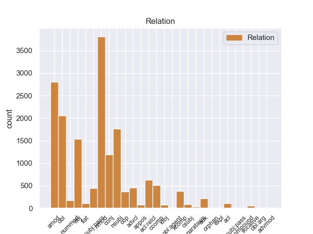
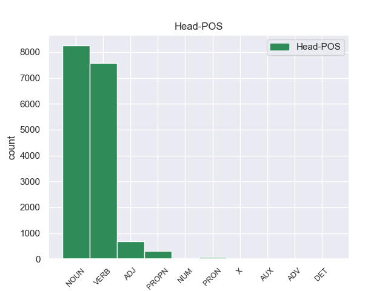

Distribution of features within this leaf



Agreement Rules sorted by frequency.
- When the dependent token is the adjectival modifier(amod) of the head token, and the dependent token is ADJ.
1 Αυτό _ _ _ _ 0 _ _ _
2 μπορεί _ _ _ _ 0 _ _ _
3 να _ _ _ _ 0 _ _ _
4 μην _ _ _ _ 0 _ _ _
5 οδηγήσει _ _ _ _ 0 _ _ _
6 σ _ _ _ _ 0 _ _ _
7 τη _ _ _ _ 0 _ _ _
8 λήξη _ _ _ _ 0 _ _ _
9 του _ _ _ _ 0 _ _ _
10 εν _ _ _ _ 0 _ _ _
11 λόγω _ _ _ _ 0 _ _ _
12 ζητήματος _ _ _ _ 0 _ _ _
13 αλλά _ _ _ _ 0 _ _ _
14 , _ _ _ _ 0 _ _ _
15 σ _ _ _ _ 0 _ _ _
16 τη _ _ _ _ 0 _ _ _
17 μορφή _ _ _ _ 0 _ _ _
18 υπό _ _ _ _ 0 _ _ _
19 την _ _ _ _ 0 _ _ _
20 οποία _ _ _ _ 0 _ _ _
21 την _ _ _ _ 0 _ _ _
22 λάβαμε _ _ _ _ 0 _ _ _
23 , _ _ _ _ 0 _ _ _
24 αυτή _ _ _ _ 0 _ _ _
25 η _ _ _ _ 0 _ _ _
26 αίτηση _ _ _ _ 0 _ _ _
27 άρσης _ _ _ _ 0 _ _ _
28 της _ _ _ _ 0 _ _ _
29 ασυλίας _ _ _ _ 0 _ _ _
30 ήταν _ _ _ _ 0 _ _ _
31 , _ _ _ _ 0 _ _ _
32 κατά _ _ _ _ 0 _ _ _
33 την _ _ _ _ 0 _ _ _
34 άποψη _ _ _ _ 0 _ _ _
35 της _ _ _ _ 0 _ _ _
36 Επιτροπής _ _ _ _ 0 _ _ _
37 Νομικών _ _ _ _ 0 _ _ _
38 Θεμάτων _ _ _ _ 0 _ _ _
39 , _ _ _ _ 0 _ _ _
40 απαράδεκτη απαράδεκτος ADJ _ Case=Nom|Gender=Fem|Number=Sing 42 amod _ _
41 , _ _ _ _ 0 _ _ _
42 άποψη άποψη NOUN _ Case=Nom|Gender=Fem|Number=Sing 0 _ _ _
43 την _ _ _ _ 0 _ _ _
44 οποία _ _ _ _ 0 _ _ _
45 συνιστώ _ _ _ _ 0 _ _ _
46 σ _ _ _ _ 0 _ _ _
47 το _ _ _ _ 0 _ _ _
48 Σώμα _ _ _ _ 0 _ _ _
49 να _ _ _ _ 0 _ _ _
50 υιοθετήσει _ _ _ _ 0 _ _ _
51 . _ _ _ _ 0 _ _ _
1 Αυτό _ _ _ _ 0 _ _ _
2 μπορεί _ _ _ _ 0 _ _ _
3 να _ _ _ _ 0 _ _ _
4 μην _ _ _ _ 0 _ _ _
5 οδηγήσει _ _ _ _ 0 _ _ _
6 σ _ _ _ _ 0 _ _ _
7 τη _ _ _ _ 0 _ _ _
8 λήξη _ _ _ _ 0 _ _ _
9 του _ _ _ _ 0 _ _ _
10 εν _ _ _ _ 0 _ _ _
11 λόγω _ _ _ _ 0 _ _ _
12 ζητήματος _ _ _ _ 0 _ _ _
13 αλλά _ _ _ _ 0 _ _ _
14 , _ _ _ _ 0 _ _ _
15 σ _ _ _ _ 0 _ _ _
16 τη _ _ _ _ 0 _ _ _
17 μορφή _ _ _ _ 0 _ _ _
18 υπό _ _ _ _ 0 _ _ _
19 την _ _ _ _ 0 _ _ _
20 οποία _ _ _ _ 0 _ _ _
21 την _ _ _ _ 0 _ _ _
22 λάβαμε _ _ _ _ 0 _ _ _
23 , _ _ _ _ 0 _ _ _
24 αυτή _ _ _ _ 0 _ _ _
25 η _ _ _ _ 0 _ _ _
26 αίτηση _ _ _ _ 0 _ _ _
27 άρσης _ _ _ _ 0 _ _ _
28 της _ _ _ _ 0 _ _ _
29 ασυλίας _ _ _ _ 0 _ _ _
30 ήταν _ _ _ _ 0 _ _ _
31 , _ _ _ _ 0 _ _ _
32 κατά _ _ _ _ 0 _ _ _
33 την _ _ _ _ 0 _ _ _
34 άποψη άποψη NOUN _ Case=Acc|Gender=Fem|Number=Sing 0 _ _ _
35 της _ _ _ _ 0 _ _ _
36 Επιτροπής επιτροπή NOUN _ Case=Gen|Gender=Fem|Number=Sing 34 nmod _ _
37 Νομικών _ _ _ _ 0 _ _ _
38 Θεμάτων _ _ _ _ 0 _ _ _
39 , _ _ _ _ 0 _ _ _
40 απαράδεκτη _ _ _ _ 0 _ _ _
41 , _ _ _ _ 0 _ _ _
42 άποψη _ _ _ _ 0 _ _ _
43 την _ _ _ _ 0 _ _ _
44 οποία _ _ _ _ 0 _ _ _
45 συνιστώ _ _ _ _ 0 _ _ _
46 σ _ _ _ _ 0 _ _ _
47 το _ _ _ _ 0 _ _ _
48 Σώμα _ _ _ _ 0 _ _ _
49 να _ _ _ _ 0 _ _ _
50 υιοθετήσει _ _ _ _ 0 _ _ _
51 . _ _ _ _ 0 _ _ _
1 Αυτό _ _ _ _ 0 _ _ _
2 μπορεί _ _ _ _ 0 _ _ _
3 να _ _ _ _ 0 _ _ _
4 μην _ _ _ _ 0 _ _ _
5 οδηγήσει οδηγώ VERB _ Aspect=Perf|Mood=Ind|Number=Sing|Person=3|VerbForm=Fin|Voice=Act 0 _ _ _
6 σ _ _ _ _ 0 _ _ _
7 τη _ _ _ _ 0 _ _ _
8 λήξη _ _ _ _ 0 _ _ _
9 του _ _ _ _ 0 _ _ _
10 εν _ _ _ _ 0 _ _ _
11 λόγω _ _ _ _ 0 _ _ _
12 ζητήματος _ _ _ _ 0 _ _ _
13 αλλά _ _ _ _ 0 _ _ _
14 , _ _ _ _ 0 _ _ _
15 σ _ _ _ _ 0 _ _ _
16 τη _ _ _ _ 0 _ _ _
17 μορφή _ _ _ _ 0 _ _ _
18 υπό _ _ _ _ 0 _ _ _
19 την _ _ _ _ 0 _ _ _
20 οποία _ _ _ _ 0 _ _ _
21 την _ _ _ _ 0 _ _ _
22 λάβαμε _ _ _ _ 0 _ _ _
23 , _ _ _ _ 0 _ _ _
24 αυτή _ _ _ _ 0 _ _ _
25 η _ _ _ _ 0 _ _ _
26 αίτηση αίτηση NOUN _ Case=Nom|Gender=Fem|Number=Sing 5 nsubj _ _
27 άρσης _ _ _ _ 0 _ _ _
28 της _ _ _ _ 0 _ _ _
29 ασυλίας _ _ _ _ 0 _ _ _
30 ήταν _ _ _ _ 0 _ _ _
31 , _ _ _ _ 0 _ _ _
32 κατά _ _ _ _ 0 _ _ _
33 την _ _ _ _ 0 _ _ _
34 άποψη _ _ _ _ 0 _ _ _
35 της _ _ _ _ 0 _ _ _
36 Επιτροπής _ _ _ _ 0 _ _ _
37 Νομικών _ _ _ _ 0 _ _ _
38 Θεμάτων _ _ _ _ 0 _ _ _
39 , _ _ _ _ 0 _ _ _
40 απαράδεκτη _ _ _ _ 0 _ _ _
41 , _ _ _ _ 0 _ _ _
42 άποψη _ _ _ _ 0 _ _ _
43 την _ _ _ _ 0 _ _ _
44 οποία _ _ _ _ 0 _ _ _
45 συνιστώ _ _ _ _ 0 _ _ _
46 σ _ _ _ _ 0 _ _ _
47 το _ _ _ _ 0 _ _ _
48 Σώμα _ _ _ _ 0 _ _ _
49 να _ _ _ _ 0 _ _ _
50 υιοθετήσει _ _ _ _ 0 _ _ _
51 . _ _ _ _ 0 _ _ _
1 Αυτό _ _ _ _ 0 _ _ _
2 μπορεί _ _ _ _ 0 _ _ _
3 να _ _ _ _ 0 _ _ _
4 μην _ _ _ _ 0 _ _ _
5 οδηγήσει _ _ _ _ 0 _ _ _
6 σ _ _ _ _ 0 _ _ _
7 τη _ _ _ _ 0 _ _ _
8 λήξη _ _ _ _ 0 _ _ _
9 του _ _ _ _ 0 _ _ _
10 εν _ _ _ _ 0 _ _ _
11 λόγω _ _ _ _ 0 _ _ _
12 ζητήματος _ _ _ _ 0 _ _ _
13 αλλά _ _ _ _ 0 _ _ _
14 , _ _ _ _ 0 _ _ _
15 σ _ _ _ _ 0 _ _ _
16 τη _ _ _ _ 0 _ _ _
17 μορφή _ _ _ _ 0 _ _ _
18 υπό _ _ _ _ 0 _ _ _
19 την _ _ _ _ 0 _ _ _
20 οποία _ _ _ _ 0 _ _ _
21 την _ _ _ _ 0 _ _ _
22 λάβαμε _ _ _ _ 0 _ _ _
23 , _ _ _ _ 0 _ _ _
24 αυτή _ _ _ _ 0 _ _ _
25 η _ _ _ _ 0 _ _ _
26 αίτηση _ _ _ _ 0 _ _ _
27 άρσης _ _ _ _ 0 _ _ _
28 της _ _ _ _ 0 _ _ _
29 ασυλίας _ _ _ _ 0 _ _ _
30 ήταν _ _ _ _ 0 _ _ _
31 , _ _ _ _ 0 _ _ _
32 κατά _ _ _ _ 0 _ _ _
33 την _ _ _ _ 0 _ _ _
34 άποψη _ _ _ _ 0 _ _ _
35 της _ _ _ _ 0 _ _ _
36 Επιτροπής _ _ _ _ 0 _ _ _
37 Νομικών _ _ _ _ 0 _ _ _
38 Θεμάτων _ _ _ _ 0 _ _ _
39 , _ _ _ _ 0 _ _ _
40 απαράδεκτη _ _ _ _ 0 _ _ _
41 , _ _ _ _ 0 _ _ _
42 άποψη _ _ _ _ 0 _ _ _
43 την _ _ _ _ 0 _ _ _
44 οποία _ _ _ _ 0 _ _ _
45 συνιστώ συνώ VERB _ Aspect=Imp|Mood=Ind|Number=Sing|Person=3|Tense=Pres|VerbForm=Fin|Voice=Act 0 _ _ _
46 σ _ _ _ _ 0 _ _ _
47 το _ _ _ _ 0 _ _ _
48 Σώμα σώμα NOUN _ Case=Acc|Gender=Neut|Number=Sing 45 obl _ _
49 να _ _ _ _ 0 _ _ _
50 υιοθετήσει _ _ _ _ 0 _ _ _
51 . _ _ _ _ 0 _ _ _
1 Υπ' _ _ _ _ 0 _ _ _
2 αυτές _ _ _ _ 0 _ _ _
3 τις _ _ _ _ 0 _ _ _
4 συνθήκες _ _ _ _ 0 _ _ _
5 , _ _ _ _ 0 _ _ _
6 η _ _ _ _ 0 _ _ _
7 Επιτροπή _ _ _ _ 0 _ _ _
8 Νομικών _ _ _ _ 0 _ _ _
9 Θεμάτων _ _ _ _ 0 _ _ _
10 , _ _ _ _ 0 _ _ _
11 της _ _ _ _ 0 _ _ _
12 οποίας _ _ _ _ 0 _ _ _
13 τη _ _ _ _ 0 _ _ _
14 θέση _ _ _ _ 0 _ _ _
15 αποδέχομαι _ _ _ _ 0 _ _ _
16 πλήρως _ _ _ _ 0 _ _ _
17 , _ _ _ _ 0 _ _ _
18 προτείνει προτείνω VERB _ Aspect=Imp|Mood=Ind|Number=Sing|Person=3|Tense=Pres|VerbForm=Fin|Voice=Act 0 _ _ _
19 την _ _ _ _ 0 _ _ _
20 απόρριψη απόρριψη NOUN _ Case=Acc|Gender=Fem|Number=Sing 18 obj _ _
21 της _ _ _ _ 0 _ _ _
22 αίτησης _ _ _ _ 0 _ _ _
23 άρσης _ _ _ _ 0 _ _ _
24 της _ _ _ _ 0 _ _ _
25 βουλευτικής _ _ _ _ 0 _ _ _
26 ασυλίας _ _ _ _ 0 _ _ _
27 την _ _ _ _ 0 _ _ _
28 οποία _ _ _ _ 0 _ _ _
29 υπέβαλε _ _ _ _ 0 _ _ _
30 το _ _ _ _ 0 _ _ _
31 γαλλικό _ _ _ _ 0 _ _ _
32 Υπουργείο _ _ _ _ 0 _ _ _
33 Δικαιοσύνης _ _ _ _ 0 _ _ _
34 , _ _ _ _ 0 _ _ _
35 σ _ _ _ _ 0 _ _ _
36 τη _ _ _ _ 0 _ _ _
37 μορφή _ _ _ _ 0 _ _ _
38 υπό _ _ _ _ 0 _ _ _
39 την _ _ _ _ 0 _ _ _
40 οποία _ _ _ _ 0 _ _ _
41 υποβλήθηκε _ _ _ _ 0 _ _ _
42 σ _ _ _ _ 0 _ _ _
43 το _ _ _ _ 0 _ _ _
44 Κοινοβούλιο _ _ _ _ 0 _ _ _
45 . _ _ _ _ 0 _ _ _
1 Αυτό _ _ _ _ 0 _ _ _
2 μπορεί _ _ _ _ 0 _ _ _
3 να _ _ _ _ 0 _ _ _
4 μην _ _ _ _ 0 _ _ _
5 οδηγήσει _ _ _ _ 0 _ _ _
6 σ _ _ _ _ 0 _ _ _
7 τη _ _ _ _ 0 _ _ _
8 λήξη _ _ _ _ 0 _ _ _
9 του _ _ _ _ 0 _ _ _
10 εν _ _ _ _ 0 _ _ _
11 λόγω _ _ _ _ 0 _ _ _
12 ζητήματος _ _ _ _ 0 _ _ _
13 αλλά _ _ _ _ 0 _ _ _
14 , _ _ _ _ 0 _ _ _
15 σ _ _ _ _ 0 _ _ _
16 τη _ _ _ _ 0 _ _ _
17 μορφή _ _ _ _ 0 _ _ _
18 υπό _ _ _ _ 0 _ _ _
19 την _ _ _ _ 0 _ _ _
20 οποία _ _ _ _ 0 _ _ _
21 την _ _ _ _ 0 _ _ _
22 λάβαμε _ _ _ _ 0 _ _ _
23 , _ _ _ _ 0 _ _ _
24 αυτή _ _ _ _ 0 _ _ _
25 η _ _ _ _ 0 _ _ _
26 αίτηση _ _ _ _ 0 _ _ _
27 άρσης _ _ _ _ 0 _ _ _
28 της _ _ _ _ 0 _ _ _
29 ασυλίας _ _ _ _ 0 _ _ _
30 ήταν _ _ _ _ 0 _ _ _
31 , _ _ _ _ 0 _ _ _
32 κατά _ _ _ _ 0 _ _ _
33 την _ _ _ _ 0 _ _ _
34 άποψη _ _ _ _ 0 _ _ _
35 της _ _ _ _ 0 _ _ _
36 Επιτροπής _ _ _ _ 0 _ _ _
37 Νομικών _ _ _ _ 0 _ _ _
38 Θεμάτων _ _ _ _ 0 _ _ _
39 , _ _ _ _ 0 _ _ _
40 απαράδεκτη _ _ _ _ 0 _ _ _
41 , _ _ _ _ 0 _ _ _
42 άποψη άποψη NOUN _ Case=Nom|Gender=Fem|Number=Sing 0 _ _ _
43 την _ _ _ _ 0 _ _ _
44 οποία _ _ _ _ 0 _ _ _
45 συνιστώ συνώ VERB _ Aspect=Imp|Mood=Ind|Number=Sing|Person=3|Tense=Pres|VerbForm=Fin|Voice=Act 42 acl:relcl _ _
46 σ _ _ _ _ 0 _ _ _
47 το _ _ _ _ 0 _ _ _
48 Σώμα _ _ _ _ 0 _ _ _
49 να _ _ _ _ 0 _ _ _
50 υιοθετήσει _ _ _ _ 0 _ _ _
51 . _ _ _ _ 0 _ _ _
1 Αυτό _ _ _ _ 0 _ _ _
2 μπορεί _ _ _ _ 0 _ _ _
3 να _ _ _ _ 0 _ _ _
4 μην _ _ _ _ 0 _ _ _
5 οδηγήσει οδηγώ VERB _ Aspect=Perf|Mood=Ind|Number=Sing|Person=3|VerbForm=Fin|Voice=Act 0 _ _ _
6 σ _ _ _ _ 0 _ _ _
7 τη _ _ _ _ 0 _ _ _
8 λήξη _ _ _ _ 0 _ _ _
9 του _ _ _ _ 0 _ _ _
10 εν _ _ _ _ 0 _ _ _
11 λόγω _ _ _ _ 0 _ _ _
12 ζητήματος _ _ _ _ 0 _ _ _
13 αλλά _ _ _ _ 0 _ _ _
14 , _ _ _ _ 0 _ _ _
15 σ _ _ _ _ 0 _ _ _
16 τη _ _ _ _ 0 _ _ _
17 μορφή _ _ _ _ 0 _ _ _
18 υπό _ _ _ _ 0 _ _ _
19 την _ _ _ _ 0 _ _ _
20 οποία _ _ _ _ 0 _ _ _
21 την _ _ _ _ 0 _ _ _
22 λάβαμε _ _ _ _ 0 _ _ _
23 , _ _ _ _ 0 _ _ _
24 αυτή _ _ _ _ 0 _ _ _
25 η _ _ _ _ 0 _ _ _
26 αίτηση _ _ _ _ 0 _ _ _
27 άρσης _ _ _ _ 0 _ _ _
28 της _ _ _ _ 0 _ _ _
29 ασυλίας _ _ _ _ 0 _ _ _
30 ήταν _ _ _ _ 0 _ _ _
31 , _ _ _ _ 0 _ _ _
32 κατά _ _ _ _ 0 _ _ _
33 την _ _ _ _ 0 _ _ _
34 άποψη _ _ _ _ 0 _ _ _
35 της _ _ _ _ 0 _ _ _
36 Επιτροπής _ _ _ _ 0 _ _ _
37 Νομικών _ _ _ _ 0 _ _ _
38 Θεμάτων _ _ _ _ 0 _ _ _
39 , _ _ _ _ 0 _ _ _
40 απαράδεκτη _ _ _ _ 0 _ _ _
41 , _ _ _ _ 0 _ _ _
42 άποψη άποψη NOUN _ Case=Nom|Gender=Fem|Number=Sing 5 conj _ _
43 την _ _ _ _ 0 _ _ _
44 οποία _ _ _ _ 0 _ _ _
45 συνιστώ _ _ _ _ 0 _ _ _
46 σ _ _ _ _ 0 _ _ _
47 το _ _ _ _ 0 _ _ _
48 Σώμα _ _ _ _ 0 _ _ _
49 να _ _ _ _ 0 _ _ _
50 υιοθετήσει _ _ _ _ 0 _ _ _
51 . _ _ _ _ 0 _ _ _
1 Αυτό αυτός PRON _ Case=Nom|Gender=Neut|Number=Sing|Person=3|PronType=Dem 2 nsubj _ _
2 μπορεί μπορώ VERB _ Aspect=Imp|Mood=Ind|Number=Sing|Person=3|Tense=Pres|VerbForm=Fin|Voice=Act 0 _ _ _
3 να _ _ _ _ 0 _ _ _
4 μην _ _ _ _ 0 _ _ _
5 οδηγήσει _ _ _ _ 0 _ _ _
6 σ _ _ _ _ 0 _ _ _
7 τη _ _ _ _ 0 _ _ _
8 λήξη _ _ _ _ 0 _ _ _
9 του _ _ _ _ 0 _ _ _
10 εν _ _ _ _ 0 _ _ _
11 λόγω _ _ _ _ 0 _ _ _
12 ζητήματος _ _ _ _ 0 _ _ _
13 αλλά _ _ _ _ 0 _ _ _
14 , _ _ _ _ 0 _ _ _
15 σ _ _ _ _ 0 _ _ _
16 τη _ _ _ _ 0 _ _ _
17 μορφή _ _ _ _ 0 _ _ _
18 υπό _ _ _ _ 0 _ _ _
19 την _ _ _ _ 0 _ _ _
20 οποία _ _ _ _ 0 _ _ _
21 την _ _ _ _ 0 _ _ _
22 λάβαμε _ _ _ _ 0 _ _ _
23 , _ _ _ _ 0 _ _ _
24 αυτή _ _ _ _ 0 _ _ _
25 η _ _ _ _ 0 _ _ _
26 αίτηση _ _ _ _ 0 _ _ _
27 άρσης _ _ _ _ 0 _ _ _
28 της _ _ _ _ 0 _ _ _
29 ασυλίας _ _ _ _ 0 _ _ _
30 ήταν _ _ _ _ 0 _ _ _
31 , _ _ _ _ 0 _ _ _
32 κατά _ _ _ _ 0 _ _ _
33 την _ _ _ _ 0 _ _ _
34 άποψη _ _ _ _ 0 _ _ _
35 της _ _ _ _ 0 _ _ _
36 Επιτροπής _ _ _ _ 0 _ _ _
37 Νομικών _ _ _ _ 0 _ _ _
38 Θεμάτων _ _ _ _ 0 _ _ _
39 , _ _ _ _ 0 _ _ _
40 απαράδεκτη _ _ _ _ 0 _ _ _
41 , _ _ _ _ 0 _ _ _
42 άποψη _ _ _ _ 0 _ _ _
43 την _ _ _ _ 0 _ _ _
44 οποία _ _ _ _ 0 _ _ _
45 συνιστώ _ _ _ _ 0 _ _ _
46 σ _ _ _ _ 0 _ _ _
47 το _ _ _ _ 0 _ _ _
48 Σώμα _ _ _ _ 0 _ _ _
49 να _ _ _ _ 0 _ _ _
50 υιοθετήσει _ _ _ _ 0 _ _ _
51 . _ _ _ _ 0 _ _ _
1 Ο _ _ _ _ 0 _ _ _
2 Εισαγγελέας εισαγγελέας NOUN _ Case=Nom|Gender=Masc|Number=Sing 0 _ _ _
3 σ _ _ _ _ 0 _ _ _
4 τη _ _ _ _ 0 _ _ _
5 Γαλλία Γαλλία PROPN _ Case=Acc|Gender=Fem|Number=Sing 2 nmod _ _
6 έχει _ _ _ _ 0 _ _ _
7 το _ _ _ _ 0 _ _ _
8 δικαίωμα _ _ _ _ 0 _ _ _
9 να _ _ _ _ 0 _ _ _
10 εκπληρώνει _ _ _ _ 0 _ _ _
11 τα _ _ _ _ 0 _ _ _
12 καθήκοντά _ _ _ _ 0 _ _ _
13 του _ _ _ _ 0 _ _ _
14 βάσει _ _ _ _ 0 _ _ _
15 του _ _ _ _ 0 _ _ _
16 νόμου _ _ _ _ 0 _ _ _
17 και _ _ _ _ 0 _ _ _
18 το _ _ _ _ 0 _ _ _
19 Σώμα _ _ _ _ 0 _ _ _
20 δεν _ _ _ _ 0 _ _ _
21 λαμβάνει _ _ _ _ 0 _ _ _
22 θέση _ _ _ _ 0 _ _ _
23 σχετικά _ _ _ _ 0 _ _ _
24 με _ _ _ _ 0 _ _ _
25 αυτό _ _ _ _ 0 _ _ _
26 . _ _ _ _ 0 _ _ _
1 Αυτό _ _ _ _ 0 _ _ _
2 μπορεί _ _ _ _ 0 _ _ _
3 να _ _ _ _ 0 _ _ _
4 μην _ _ _ _ 0 _ _ _
5 οδηγήσει _ _ _ _ 0 _ _ _
6 σ _ _ _ _ 0 _ _ _
7 τη _ _ _ _ 0 _ _ _
8 λήξη _ _ _ _ 0 _ _ _
9 του _ _ _ _ 0 _ _ _
10 εν _ _ _ _ 0 _ _ _
11 λόγω _ _ _ _ 0 _ _ _
12 ζητήματος _ _ _ _ 0 _ _ _
13 αλλά _ _ _ _ 0 _ _ _
14 , _ _ _ _ 0 _ _ _
15 σ _ _ _ _ 0 _ _ _
16 τη _ _ _ _ 0 _ _ _
17 μορφή _ _ _ _ 0 _ _ _
18 υπό _ _ _ _ 0 _ _ _
19 την _ _ _ _ 0 _ _ _
20 οποία _ _ _ _ 0 _ _ _
21 την _ _ _ _ 0 _ _ _
22 λάβαμε _ _ _ _ 0 _ _ _
23 , _ _ _ _ 0 _ _ _
24 αυτή _ _ _ _ 0 _ _ _
25 η _ _ _ _ 0 _ _ _
26 αίτηση _ _ _ _ 0 _ _ _
27 άρσης _ _ _ _ 0 _ _ _
28 της _ _ _ _ 0 _ _ _
29 ασυλίας _ _ _ _ 0 _ _ _
30 ήταν είμαι AUX _ Aspect=Imp|Mood=Ind|Number=Sing|Person=3|Tense=Past|VerbForm=Fin|Voice=Pass 40 cop _ _
31 , _ _ _ _ 0 _ _ _
32 κατά _ _ _ _ 0 _ _ _
33 την _ _ _ _ 0 _ _ _
34 άποψη _ _ _ _ 0 _ _ _
35 της _ _ _ _ 0 _ _ _
36 Επιτροπής _ _ _ _ 0 _ _ _
37 Νομικών _ _ _ _ 0 _ _ _
38 Θεμάτων _ _ _ _ 0 _ _ _
39 , _ _ _ _ 0 _ _ _
40 απαράδεκτη απαράδεκτος ADJ _ Case=Nom|Gender=Fem|Number=Sing 0 _ _ _
41 , _ _ _ _ 0 _ _ _
42 άποψη _ _ _ _ 0 _ _ _
43 την _ _ _ _ 0 _ _ _
44 οποία _ _ _ _ 0 _ _ _
45 συνιστώ _ _ _ _ 0 _ _ _
46 σ _ _ _ _ 0 _ _ _
47 το _ _ _ _ 0 _ _ _
48 Σώμα _ _ _ _ 0 _ _ _
49 να _ _ _ _ 0 _ _ _
50 υιοθετήσει _ _ _ _ 0 _ _ _
51 . _ _ _ _ 0 _ _ _
1 Υπάρχει υπάρχω VERB _ Aspect=Imp|Mood=Ind|Number=Sing|Person=3|Tense=Pres|VerbForm=Fin|Voice=Act 0 _ _ _
2 μια _ _ _ _ 0 _ _ _
3 άλλη _ _ _ _ 0 _ _ _
4 πλευρά _ _ _ _ 0 _ _ _
5 της _ _ _ _ 0 _ _ _
6 υπόθεσης _ _ _ _ 0 _ _ _
7 , _ _ _ _ 0 _ _ _
8 η _ _ _ _ 0 _ _ _
9 οποία _ _ _ _ 0 _ _ _
10 , _ _ _ _ 0 _ _ _
11 δυστυχώς _ _ _ _ 0 _ _ _
12 , _ _ _ _ 0 _ _ _
13 γεννά γενω VERB _ Aspect=Imp|Mood=Ind|Number=Sing|Person=3|Tense=Pres|VerbForm=Fin|Voice=Act 1 conj _ _
14 την _ _ _ _ 0 _ _ _
15 υποψία _ _ _ _ 0 _ _ _
16 ότι _ _ _ _ 0 _ _ _
17 η _ _ _ _ 0 _ _ _
18 πρόνοια _ _ _ _ 0 _ _ _
19 σχετικά _ _ _ _ 0 _ _ _
20 με _ _ _ _ 0 _ _ _
21 τις _ _ _ _ 0 _ _ _
22 προϋποθέσεις _ _ _ _ 0 _ _ _
23 ελεύθερης _ _ _ _ 0 _ _ _
24 διεξαγωγής _ _ _ _ 0 _ _ _
25 του _ _ _ _ 0 _ _ _
26 κοινοβουλευτικού _ _ _ _ 0 _ _ _
27 έργου _ _ _ _ 0 _ _ _
28 δεν _ _ _ _ 0 _ _ _
29 απασχόλησε _ _ _ _ 0 _ _ _
30 επαρκώς _ _ _ _ 0 _ _ _
31 την _ _ _ _ 0 _ _ _
32 εισαγγελική _ _ _ _ 0 _ _ _
33 αρχή _ _ _ _ 0 _ _ _
34 : _ _ _ _ 0 _ _ _
1 πρόκειται _ _ _ _ 0 _ _ _
2 για _ _ _ _ 0 _ _ _
3 αυτό _ _ _ _ 0 _ _ _
4 το _ _ _ _ 0 _ _ _
5 οποίο _ _ _ _ 0 _ _ _
6 αποκαλύφθηκε _ _ _ _ 0 _ _ _
7 κατά _ _ _ _ 0 _ _ _
8 τη _ _ _ _ 0 _ _ _
9 διάρκεια _ _ _ _ 0 _ _ _
10 αυτής _ _ _ _ 0 _ _ _
11 της _ _ _ _ 0 _ _ _
12 διαδικασίας _ _ _ _ 0 _ _ _
13 , _ _ _ _ 0 _ _ _
14 ότι _ _ _ _ 0 _ _ _
15 ο _ _ _ _ 0 _ _ _
16 Εισαγγελέας _ _ _ _ 0 _ _ _
17 κάποια _ _ _ _ 0 _ _ _
18 στιγμή _ _ _ _ 0 _ _ _
19 ζήτησε _ _ _ _ 0 _ _ _
20 από _ _ _ _ 0 _ _ _
21 την _ _ _ _ 0 _ _ _
22 Πρόεδρο _ _ _ _ 0 _ _ _
23 του _ _ _ _ 0 _ _ _
24 Σώματος _ _ _ _ 0 _ _ _
25 , _ _ _ _ 0 _ _ _
26 την _ _ _ _ 0 _ _ _
27 προκάτοχό _ _ _ _ 0 _ _ _
28 σας _ _ _ _ 0 _ _ _
29 , _ _ _ _ 0 _ _ _
30 λεπτομέρειες _ _ _ _ 0 _ _ _
31 για _ _ _ _ 0 _ _ _
32 την _ _ _ _ 0 _ _ _
33 ψήφο _ _ _ _ 0 _ _ _
34 που _ _ _ _ 0 _ _ _
35 έχουν _ _ _ _ 0 _ _ _
36 δώσει _ _ _ _ 0 _ _ _
37 οι _ _ _ _ 0 _ _ _
38 δύο _ _ _ _ 0 _ _ _
39 συγκεκριμένοι _ _ _ _ 0 _ _ _
40 βουλευτές _ _ _ _ 0 _ _ _
41 προκειμένου _ _ _ _ 0 _ _ _
42 να _ _ _ _ 0 _ _ _
43 διευκρινιστεί διευκρινιώ VERB _ Aspect=Perf|Mood=Ind|Number=Sing|Person=3|VerbForm=Fin|Voice=Pass 0 _ _ _
44 περαιτέρω _ _ _ _ 0 _ _ _
45 η _ _ _ _ 0 _ _ _
46 πιθανότητα πιθανότητα NOUN _ Case=Nom|Gender=Fem|Number=Sing 43 nsubj:pass _ _
47 να _ _ _ _ 0 _ _ _
48 είχαν _ _ _ _ 0 _ _ _
49 ασκήσει _ _ _ _ 0 _ _ _
50 αθέμιτη _ _ _ _ 0 _ _ _
51 επιρροή _ _ _ _ 0 _ _ _
52 . _ _ _ _ 0 _ _ _
1 πρόκειται πρόκειται VERB _ Aspect=Imp|Mood=Ind|Number=Sing|Person=3|Tense=Pres|VerbForm=Fin|Voice=Pass 0 _ _ _
2 για _ _ _ _ 0 _ _ _
3 αυτό _ _ _ _ 0 _ _ _
4 το _ _ _ _ 0 _ _ _
5 οποίο _ _ _ _ 0 _ _ _
6 αποκαλύφθηκε _ _ _ _ 0 _ _ _
7 κατά _ _ _ _ 0 _ _ _
8 τη _ _ _ _ 0 _ _ _
9 διάρκεια _ _ _ _ 0 _ _ _
10 αυτής _ _ _ _ 0 _ _ _
11 της _ _ _ _ 0 _ _ _
12 διαδικασίας _ _ _ _ 0 _ _ _
13 , _ _ _ _ 0 _ _ _
14 ότι _ _ _ _ 0 _ _ _
15 ο _ _ _ _ 0 _ _ _
16 Εισαγγελέας _ _ _ _ 0 _ _ _
17 κάποια _ _ _ _ 0 _ _ _
18 στιγμή _ _ _ _ 0 _ _ _
19 ζήτησε ζήιώ VERB _ Aspect=Perf|Mood=Ind|Number=Sing|Person=3|Tense=Past|VerbForm=Fin|Voice=Act 1 advcl _ _
20 από _ _ _ _ 0 _ _ _
21 την _ _ _ _ 0 _ _ _
22 Πρόεδρο _ _ _ _ 0 _ _ _
23 του _ _ _ _ 0 _ _ _
24 Σώματος _ _ _ _ 0 _ _ _
25 , _ _ _ _ 0 _ _ _
26 την _ _ _ _ 0 _ _ _
27 προκάτοχό _ _ _ _ 0 _ _ _
28 σας _ _ _ _ 0 _ _ _
29 , _ _ _ _ 0 _ _ _
30 λεπτομέρειες _ _ _ _ 0 _ _ _
31 για _ _ _ _ 0 _ _ _
32 την _ _ _ _ 0 _ _ _
33 ψήφο _ _ _ _ 0 _ _ _
34 που _ _ _ _ 0 _ _ _
35 έχουν _ _ _ _ 0 _ _ _
36 δώσει _ _ _ _ 0 _ _ _
37 οι _ _ _ _ 0 _ _ _
38 δύο _ _ _ _ 0 _ _ _
39 συγκεκριμένοι _ _ _ _ 0 _ _ _
40 βουλευτές _ _ _ _ 0 _ _ _
41 προκειμένου _ _ _ _ 0 _ _ _
42 να _ _ _ _ 0 _ _ _
43 διευκρινιστεί _ _ _ _ 0 _ _ _
44 περαιτέρω _ _ _ _ 0 _ _ _
45 η _ _ _ _ 0 _ _ _
46 πιθανότητα _ _ _ _ 0 _ _ _
47 να _ _ _ _ 0 _ _ _
48 είχαν _ _ _ _ 0 _ _ _
49 ασκήσει _ _ _ _ 0 _ _ _
50 αθέμιτη _ _ _ _ 0 _ _ _
51 επιρροή _ _ _ _ 0 _ _ _
52 . _ _ _ _ 0 _ _ _
1 Αυτό _ _ _ _ 0 _ _ _
2 μπορεί _ _ _ _ 0 _ _ _
3 να _ _ _ _ 0 _ _ _
4 μην _ _ _ _ 0 _ _ _
5 οδηγήσει _ _ _ _ 0 _ _ _
6 σ _ _ _ _ 0 _ _ _
7 τη _ _ _ _ 0 _ _ _
8 λήξη _ _ _ _ 0 _ _ _
9 του _ _ _ _ 0 _ _ _
10 εν _ _ _ _ 0 _ _ _
11 λόγω _ _ _ _ 0 _ _ _
12 ζητήματος _ _ _ _ 0 _ _ _
13 αλλά _ _ _ _ 0 _ _ _
14 , _ _ _ _ 0 _ _ _
15 σ _ _ _ _ 0 _ _ _
16 τη _ _ _ _ 0 _ _ _
17 μορφή _ _ _ _ 0 _ _ _
18 υπό _ _ _ _ 0 _ _ _
19 την _ _ _ _ 0 _ _ _
20 οποία _ _ _ _ 0 _ _ _
21 την _ _ _ _ 0 _ _ _
22 λάβαμε _ _ _ _ 0 _ _ _
23 , _ _ _ _ 0 _ _ _
24 αυτή _ _ _ _ 0 _ _ _
25 η _ _ _ _ 0 _ _ _
26 αίτηση _ _ _ _ 0 _ _ _
27 άρσης _ _ _ _ 0 _ _ _
28 της _ _ _ _ 0 _ _ _
29 ασυλίας _ _ _ _ 0 _ _ _
30 ήταν _ _ _ _ 0 _ _ _
31 , _ _ _ _ 0 _ _ _
32 κατά _ _ _ _ 0 _ _ _
33 την _ _ _ _ 0 _ _ _
34 άποψη _ _ _ _ 0 _ _ _
35 της _ _ _ _ 0 _ _ _
36 Επιτροπής _ _ _ _ 0 _ _ _
37 Νομικών _ _ _ _ 0 _ _ _
38 Θεμάτων _ _ _ _ 0 _ _ _
39 , _ _ _ _ 0 _ _ _
40 απαράδεκτη _ _ _ _ 0 _ _ _
41 , _ _ _ _ 0 _ _ _
42 άποψη _ _ _ _ 0 _ _ _
43 την _ _ _ _ 0 _ _ _
44 οποία _ _ _ _ 0 _ _ _
45 συνιστώ συνώ VERB _ Aspect=Imp|Mood=Ind|Number=Sing|Person=3|Tense=Pres|VerbForm=Fin|Voice=Act 0 _ _ _
46 σ _ _ _ _ 0 _ _ _
47 το _ _ _ _ 0 _ _ _
48 Σώμα _ _ _ _ 0 _ _ _
49 να _ _ _ _ 0 _ _ _
50 υιοθετήσει υιοθετήζω VERB _ Aspect=Perf|Mood=Ind|Number=Sing|Person=3|VerbForm=Fin|Voice=Act 45 ccomp _ _
51 . _ _ _ _ 0 _ _ _
1 Αυτό _ _ _ _ 0 _ _ _
2 μπορεί μπορώ VERB _ Aspect=Imp|Mood=Ind|Number=Sing|Person=3|Tense=Pres|VerbForm=Fin|Voice=Act 0 _ _ _
3 να _ _ _ _ 0 _ _ _
4 μην _ _ _ _ 0 _ _ _
5 οδηγήσει οδηγώ VERB _ Aspect=Perf|Mood=Ind|Number=Sing|Person=3|VerbForm=Fin|Voice=Act 2 xcomp _ _
6 σ _ _ _ _ 0 _ _ _
7 τη _ _ _ _ 0 _ _ _
8 λήξη _ _ _ _ 0 _ _ _
9 του _ _ _ _ 0 _ _ _
10 εν _ _ _ _ 0 _ _ _
11 λόγω _ _ _ _ 0 _ _ _
12 ζητήματος _ _ _ _ 0 _ _ _
13 αλλά _ _ _ _ 0 _ _ _
14 , _ _ _ _ 0 _ _ _
15 σ _ _ _ _ 0 _ _ _
16 τη _ _ _ _ 0 _ _ _
17 μορφή _ _ _ _ 0 _ _ _
18 υπό _ _ _ _ 0 _ _ _
19 την _ _ _ _ 0 _ _ _
20 οποία _ _ _ _ 0 _ _ _
21 την _ _ _ _ 0 _ _ _
22 λάβαμε _ _ _ _ 0 _ _ _
23 , _ _ _ _ 0 _ _ _
24 αυτή _ _ _ _ 0 _ _ _
25 η _ _ _ _ 0 _ _ _
26 αίτηση _ _ _ _ 0 _ _ _
27 άρσης _ _ _ _ 0 _ _ _
28 της _ _ _ _ 0 _ _ _
29 ασυλίας _ _ _ _ 0 _ _ _
30 ήταν _ _ _ _ 0 _ _ _
31 , _ _ _ _ 0 _ _ _
32 κατά _ _ _ _ 0 _ _ _
33 την _ _ _ _ 0 _ _ _
34 άποψη _ _ _ _ 0 _ _ _
35 της _ _ _ _ 0 _ _ _
36 Επιτροπής _ _ _ _ 0 _ _ _
37 Νομικών _ _ _ _ 0 _ _ _
38 Θεμάτων _ _ _ _ 0 _ _ _
39 , _ _ _ _ 0 _ _ _
40 απαράδεκτη _ _ _ _ 0 _ _ _
41 , _ _ _ _ 0 _ _ _
42 άποψη _ _ _ _ 0 _ _ _
43 την _ _ _ _ 0 _ _ _
44 οποία _ _ _ _ 0 _ _ _
45 συνιστώ _ _ _ _ 0 _ _ _
46 σ _ _ _ _ 0 _ _ _
47 το _ _ _ _ 0 _ _ _
48 Σώμα _ _ _ _ 0 _ _ _
49 να _ _ _ _ 0 _ _ _
50 υιοθετήσει _ _ _ _ 0 _ _ _
51 . _ _ _ _ 0 _ _ _
1 Το _ _ _ _ 0 _ _ _
2 άρθρο _ _ _ _ 0 _ _ _
3 9 _ _ _ _ 0 _ _ _
4 του _ _ _ _ 0 _ _ _
5 Πρωτοκόλλου _ _ _ _ 0 _ _ _
6 , _ _ _ _ 0 _ _ _
7 όπως _ _ _ _ 0 _ _ _
8 επεσήμανε _ _ _ _ 0 _ _ _
9 με _ _ _ _ 0 _ _ _
10 αυστηρότητα _ _ _ _ 0 _ _ _
11 η _ _ _ _ 0 _ _ _
12 Πρόεδρος _ _ _ _ 0 _ _ _
13 Fontaine _ _ _ _ 0 _ _ _
14 σ _ _ _ _ 0 _ _ _
15 τον _ _ _ _ 0 _ _ _
16 Εισαγγελέα _ _ _ _ 0 _ _ _
17 , _ _ _ _ 0 _ _ _
18 μας _ _ _ _ 0 _ _ _
19 απαλλάσσει _ _ _ _ 0 _ _ _
20 τελείως _ _ _ _ 0 _ _ _
21 από _ _ _ _ 0 _ _ _
22 οποιαδήποτε _ _ _ _ 0 _ _ _
23 νομική _ _ _ _ 0 _ _ _
24 διαδικασία _ _ _ _ 0 _ _ _
25 σε _ _ _ _ 0 _ _ _
26 σχέση _ _ _ _ 0 _ _ _
27 με _ _ _ _ 0 _ _ _
28 την _ _ _ _ 0 _ _ _
29 έκφραση _ _ _ _ 0 _ _ _
30 γνώμης _ _ _ _ 0 _ _ _
31 ή _ _ _ _ 0 _ _ _
32 ψήφου _ _ _ _ 0 _ _ _
33 κατά _ _ _ _ 0 _ _ _
34 την _ _ _ _ 0 _ _ _
35 άσκηση _ _ _ _ 0 _ _ _
36 των _ _ _ _ 0 _ _ _
37 καθηκόντων καθηκόνς NOUN _ Case=Gen|Gender=Masc|Number=Plur 0 _ _ _
38 μας μου PRON _ Case=Gen|Gender=Masc|Number=Plur|Person=1|Poss=Yes|PronType=Prs 37 nmod _ _
39 ως _ _ _ _ 0 _ _ _
40 μέλη _ _ _ _ 0 _ _ _
41 αυτού _ _ _ _ 0 _ _ _
42 του _ _ _ _ 0 _ _ _
43 Κοινοβουλίου _ _ _ _ 0 _ _ _
44 . _ _ _ _ 0 _ _ _
1 πρόκειται _ _ _ _ 0 _ _ _
2 για _ _ _ _ 0 _ _ _
3 αυτό _ _ _ _ 0 _ _ _
4 το _ _ _ _ 0 _ _ _
5 οποίο _ _ _ _ 0 _ _ _
6 αποκαλύφθηκε _ _ _ _ 0 _ _ _
7 κατά _ _ _ _ 0 _ _ _
8 τη _ _ _ _ 0 _ _ _
9 διάρκεια _ _ _ _ 0 _ _ _
10 αυτής _ _ _ _ 0 _ _ _
11 της _ _ _ _ 0 _ _ _
12 διαδικασίας _ _ _ _ 0 _ _ _
13 , _ _ _ _ 0 _ _ _
14 ότι _ _ _ _ 0 _ _ _
15 ο _ _ _ _ 0 _ _ _
16 Εισαγγελέας _ _ _ _ 0 _ _ _
17 κάποια _ _ _ _ 0 _ _ _
18 στιγμή _ _ _ _ 0 _ _ _
19 ζήτησε _ _ _ _ 0 _ _ _
20 από _ _ _ _ 0 _ _ _
21 την _ _ _ _ 0 _ _ _
22 Πρόεδρο _ _ _ _ 0 _ _ _
23 του _ _ _ _ 0 _ _ _
24 Σώματος _ _ _ _ 0 _ _ _
25 , _ _ _ _ 0 _ _ _
26 την _ _ _ _ 0 _ _ _
27 προκάτοχό _ _ _ _ 0 _ _ _
28 σας _ _ _ _ 0 _ _ _
29 , _ _ _ _ 0 _ _ _
30 λεπτομέρειες _ _ _ _ 0 _ _ _
31 για _ _ _ _ 0 _ _ _
32 την _ _ _ _ 0 _ _ _
33 ψήφο _ _ _ _ 0 _ _ _
34 που _ _ _ _ 0 _ _ _
35 έχουν _ _ _ _ 0 _ _ _
36 δώσει _ _ _ _ 0 _ _ _
37 οι _ _ _ _ 0 _ _ _
38 δύο δύο NUM _ Case=Nom|Gender=Fem|Number=Plur|NumType=Card 40 nummod _ _
39 συγκεκριμένοι _ _ _ _ 0 _ _ _
40 βουλευτές βουλευτής NOUN _ Case=Nom|Gender=Masc|Number=Plur 0 _ _ _
41 προκειμένου _ _ _ _ 0 _ _ _
42 να _ _ _ _ 0 _ _ _
43 διευκρινιστεί _ _ _ _ 0 _ _ _
44 περαιτέρω _ _ _ _ 0 _ _ _
45 η _ _ _ _ 0 _ _ _
46 πιθανότητα _ _ _ _ 0 _ _ _
47 να _ _ _ _ 0 _ _ _
48 είχαν _ _ _ _ 0 _ _ _
49 ασκήσει _ _ _ _ 0 _ _ _
50 αθέμιτη _ _ _ _ 0 _ _ _
51 επιρροή _ _ _ _ 0 _ _ _
52 . _ _ _ _ 0 _ _ _
1 Παράλληλα _ _ _ _ 0 _ _ _
2 , _ _ _ _ 0 _ _ _
3 η _ _ _ _ 0 _ _ _
4 Άρσεναλ Άρσεναλ PROPN _ Case=Nom|Gender=Fem|Number=Sing 5 nsubj _ _
5 νίκησε νηρίζω VERB _ Aspect=Perf|Mood=Ind|Number=Sing|Person=3|Tense=Past|VerbForm=Fin|Voice=Act 0 _ _ _
6 την _ _ _ _ 0 _ _ _
7 Μίλαν _ _ _ _ 0 _ _ _
8 με _ _ _ _ 0 _ _ _
9 σκορ _ _ _ _ 0 _ _ _
10 3:0 _ _ _ _ 0 _ _ _
11 , _ _ _ _ 0 _ _ _
12 αλλά _ _ _ _ 0 _ _ _
13 προκρίθηκε _ _ _ _ 0 _ _ _
14 η _ _ _ _ 0 _ _ _
15 δεύτερη _ _ _ _ 0 _ _ _
16 . _ _ _ _ 0 _ _ _
1 Αυτό _ _ _ _ 0 _ _ _
2 μπορεί _ _ _ _ 0 _ _ _
3 να _ _ _ _ 0 _ _ _
4 μην _ _ _ _ 0 _ _ _
5 οδηγήσει _ _ _ _ 0 _ _ _
6 σ _ _ _ _ 0 _ _ _
7 τη _ _ _ _ 0 _ _ _
8 λήξη _ _ _ _ 0 _ _ _
9 του _ _ _ _ 0 _ _ _
10 εν _ _ _ _ 0 _ _ _
11 λόγω _ _ _ _ 0 _ _ _
12 ζητήματος _ _ _ _ 0 _ _ _
13 αλλά _ _ _ _ 0 _ _ _
14 , _ _ _ _ 0 _ _ _
15 σ _ _ _ _ 0 _ _ _
16 τη _ _ _ _ 0 _ _ _
17 μορφή _ _ _ _ 0 _ _ _
18 υπό _ _ _ _ 0 _ _ _
19 την _ _ _ _ 0 _ _ _
20 οποία _ _ _ _ 0 _ _ _
21 την _ _ _ _ 0 _ _ _
22 λάβαμε _ _ _ _ 0 _ _ _
23 , _ _ _ _ 0 _ _ _
24 αυτή _ _ _ _ 0 _ _ _
25 η _ _ _ _ 0 _ _ _
26 αίτηση _ _ _ _ 0 _ _ _
27 άρσης _ _ _ _ 0 _ _ _
28 της _ _ _ _ 0 _ _ _
29 ασυλίας _ _ _ _ 0 _ _ _
30 ήταν _ _ _ _ 0 _ _ _
31 , _ _ _ _ 0 _ _ _
32 κατά _ _ _ _ 0 _ _ _
33 την _ _ _ _ 0 _ _ _
34 άποψη _ _ _ _ 0 _ _ _
35 της _ _ _ _ 0 _ _ _
36 Επιτροπής _ _ _ _ 0 _ _ _
37 Νομικών _ _ _ _ 0 _ _ _
38 Θεμάτων _ _ _ _ 0 _ _ _
39 , _ _ _ _ 0 _ _ _
40 απαράδεκτη _ _ _ _ 0 _ _ _
41 , _ _ _ _ 0 _ _ _
42 άποψη _ _ _ _ 0 _ _ _
43 την _ _ _ _ 0 _ _ _
44 οποία οποίος PRON _ Case=Acc|Gender=Fem|Number=Sing|Person=3|PronType=Rel 45 obj _ _
45 συνιστώ συνώ VERB _ Aspect=Imp|Mood=Ind|Number=Sing|Person=3|Tense=Pres|VerbForm=Fin|Voice=Act 0 _ _ _
46 σ _ _ _ _ 0 _ _ _
47 το _ _ _ _ 0 _ _ _
48 Σώμα _ _ _ _ 0 _ _ _
49 να _ _ _ _ 0 _ _ _
50 υιοθετήσει _ _ _ _ 0 _ _ _
51 . _ _ _ _ 0 _ _ _
1 πρόκειται _ _ _ _ 0 _ _ _
2 για _ _ _ _ 0 _ _ _
3 αυτό _ _ _ _ 0 _ _ _
4 το _ _ _ _ 0 _ _ _
5 οποίο _ _ _ _ 0 _ _ _
6 αποκαλύφθηκε _ _ _ _ 0 _ _ _
7 κατά _ _ _ _ 0 _ _ _
8 τη _ _ _ _ 0 _ _ _
9 διάρκεια _ _ _ _ 0 _ _ _
10 αυτής _ _ _ _ 0 _ _ _
11 της _ _ _ _ 0 _ _ _
12 διαδικασίας _ _ _ _ 0 _ _ _
13 , _ _ _ _ 0 _ _ _
14 ότι _ _ _ _ 0 _ _ _
15 ο _ _ _ _ 0 _ _ _
16 Εισαγγελέας _ _ _ _ 0 _ _ _
17 κάποια _ _ _ _ 0 _ _ _
18 στιγμή _ _ _ _ 0 _ _ _
19 ζήτησε _ _ _ _ 0 _ _ _
20 από _ _ _ _ 0 _ _ _
21 την _ _ _ _ 0 _ _ _
22 Πρόεδρο _ _ _ _ 0 _ _ _
23 του _ _ _ _ 0 _ _ _
24 Σώματος _ _ _ _ 0 _ _ _
25 , _ _ _ _ 0 _ _ _
26 την _ _ _ _ 0 _ _ _
27 προκάτοχό _ _ _ _ 0 _ _ _
28 σας _ _ _ _ 0 _ _ _
29 , _ _ _ _ 0 _ _ _
30 λεπτομέρειες _ _ _ _ 0 _ _ _
31 για _ _ _ _ 0 _ _ _
32 την _ _ _ _ 0 _ _ _
33 ψήφο _ _ _ _ 0 _ _ _
34 που _ _ _ _ 0 _ _ _
35 έχουν _ _ _ _ 0 _ _ _
36 δώσει _ _ _ _ 0 _ _ _
37 οι _ _ _ _ 0 _ _ _
38 δύο _ _ _ _ 0 _ _ _
39 συγκεκριμένοι _ _ _ _ 0 _ _ _
40 βουλευτές _ _ _ _ 0 _ _ _
41 προκειμένου _ _ _ _ 0 _ _ _
42 να _ _ _ _ 0 _ _ _
43 διευκρινιστεί _ _ _ _ 0 _ _ _
44 περαιτέρω _ _ _ _ 0 _ _ _
45 η _ _ _ _ 0 _ _ _
46 πιθανότητα _ _ _ _ 0 _ _ _
47 να _ _ _ _ 0 _ _ _
48 είχαν έχω AUX _ Aspect=Imp|Mood=Ind|Number=Plur|Person=3|Tense=Past|VerbForm=Fin|Voice=Act 49 aux _ _
49 ασκήσει ασκήζω VERB _ Aspect=Perf|Mood=Ind|Number=Plur|Person=3|VerbForm=Fin|Voice=Act 0 _ _ _
50 αθέμιτη _ _ _ _ 0 _ _ _
51 επιρροή _ _ _ _ 0 _ _ _
52 . _ _ _ _ 0 _ _ _
1 Η _ _ _ _ 0 _ _ _
2 Μπενφίκα _ _ _ _ 0 _ _ _
3 ήταν _ _ _ _ 0 _ _ _
4 πιο _ _ _ _ 0 _ _ _
5 επιθετική _ _ _ _ 0 _ _ _
6 και _ _ _ _ 0 _ _ _
7 καλύτερη _ _ _ _ 0 _ _ _
8 σ _ _ _ _ 0 _ _ _
9 το _ _ _ _ 0 _ _ _
10 πρώτο _ _ _ _ 0 _ _ _
11 ημίχρονο _ _ _ _ 0 _ _ _
12 , _ _ _ _ 0 _ _ _
13 με _ _ _ _ 0 _ _ _
14 αποτέλεσμα _ _ _ _ 0 _ _ _
15 να _ _ _ _ 0 _ _ _
16 ανοίξει _ _ _ _ 0 _ _ _
17 το _ _ _ _ 0 _ _ _
18 σκορ _ _ _ _ 0 _ _ _
19 σ _ _ _ _ 0 _ _ _
20 το _ _ _ _ 0 _ _ _
21 πρώτο _ _ _ _ 0 _ _ _
22 λεπτό _ _ _ _ 0 _ _ _
23 των _ _ _ _ 0 _ _ _
24 καθυστερήσεων _ _ _ _ 0 _ _ _
25 , _ _ _ _ 0 _ _ _
26 χάρη _ _ _ _ 0 _ _ _
27 σ _ _ _ _ 0 _ _ _
28 τον _ _ _ _ 0 _ _ _
29 Μάξι Μάξι PROPN _ Case=Acc|Gender=Masc|Number=Sing 0 _ _ _
30 Περέιρα Περέιρα PROPN _ Case=Acc|Gender=Masc|Number=Sing 29 flat _ _
31 . _ _ _ _ 0 _ _ _
1 πρόκειται _ _ _ _ 0 _ _ _
2 για _ _ _ _ 0 _ _ _
3 αυτό _ _ _ _ 0 _ _ _
4 το _ _ _ _ 0 _ _ _
5 οποίο οποίος PRON _ Case=Nom|Gender=Neut|Number=Sing|Person=3|PronType=Rel 6 nsubj:pass _ _
6 αποκαλύφθηκε αποκαλύώ VERB _ Aspect=Perf|Mood=Ind|Number=Sing|Person=3|Tense=Past|VerbForm=Fin|Voice=Pass 0 _ _ _
7 κατά _ _ _ _ 0 _ _ _
8 τη _ _ _ _ 0 _ _ _
9 διάρκεια _ _ _ _ 0 _ _ _
10 αυτής _ _ _ _ 0 _ _ _
11 της _ _ _ _ 0 _ _ _
12 διαδικασίας _ _ _ _ 0 _ _ _
13 , _ _ _ _ 0 _ _ _
14 ότι _ _ _ _ 0 _ _ _
15 ο _ _ _ _ 0 _ _ _
16 Εισαγγελέας _ _ _ _ 0 _ _ _
17 κάποια _ _ _ _ 0 _ _ _
18 στιγμή _ _ _ _ 0 _ _ _
19 ζήτησε _ _ _ _ 0 _ _ _
20 από _ _ _ _ 0 _ _ _
21 την _ _ _ _ 0 _ _ _
22 Πρόεδρο _ _ _ _ 0 _ _ _
23 του _ _ _ _ 0 _ _ _
24 Σώματος _ _ _ _ 0 _ _ _
25 , _ _ _ _ 0 _ _ _
26 την _ _ _ _ 0 _ _ _
27 προκάτοχό _ _ _ _ 0 _ _ _
28 σας _ _ _ _ 0 _ _ _
29 , _ _ _ _ 0 _ _ _
30 λεπτομέρειες _ _ _ _ 0 _ _ _
31 για _ _ _ _ 0 _ _ _
32 την _ _ _ _ 0 _ _ _
33 ψήφο _ _ _ _ 0 _ _ _
34 που _ _ _ _ 0 _ _ _
35 έχουν _ _ _ _ 0 _ _ _
36 δώσει _ _ _ _ 0 _ _ _
37 οι _ _ _ _ 0 _ _ _
38 δύο _ _ _ _ 0 _ _ _
39 συγκεκριμένοι _ _ _ _ 0 _ _ _
40 βουλευτές _ _ _ _ 0 _ _ _
41 προκειμένου _ _ _ _ 0 _ _ _
42 να _ _ _ _ 0 _ _ _
43 διευκρινιστεί _ _ _ _ 0 _ _ _
44 περαιτέρω _ _ _ _ 0 _ _ _
45 η _ _ _ _ 0 _ _ _
46 πιθανότητα _ _ _ _ 0 _ _ _
47 να _ _ _ _ 0 _ _ _
48 είχαν _ _ _ _ 0 _ _ _
49 ασκήσει _ _ _ _ 0 _ _ _
50 αθέμιτη _ _ _ _ 0 _ _ _
51 επιρροή _ _ _ _ 0 _ _ _
52 . _ _ _ _ 0 _ _ _
1 Οι _ _ _ _ 0 _ _ _
2 αρχές _ _ _ _ 0 _ _ _
3 των _ _ _ _ 0 _ _ _
4 πόλεων _ _ _ _ 0 _ _ _
5 εξέφρασαν _ _ _ _ 0 _ _ _
6 αυτή _ _ _ _ 0 _ _ _
7 την _ _ _ _ 0 _ _ _
8 επιθυμία _ _ _ _ 0 _ _ _
9 σε _ _ _ _ 0 _ _ _
10 συνέδριο _ _ _ _ 0 _ _ _
11 που _ _ _ _ 0 _ _ _
12 διεξήχθη διείνω VERB _ Aspect=Perf|Mood=Ind|Number=Sing|Person=3|Tense=Past|VerbForm=Fin|Voice=Pass 0 _ _ _
13 σ _ _ _ _ 0 _ _ _
14 τη _ _ _ _ 0 _ _ _
15 Βεγγάζη Βεγγάζη PROPN _ Case=Acc|Gender=Fem|Number=Sing 12 obl _ _
16 . _ _ _ _ 0 _ _ _
1 Τα _ _ _ _ 0 _ _ _
2 εγκλήματα _ _ _ _ 0 _ _ _
3 είναι _ _ _ _ 0 _ _ _
4 σοβαρά _ _ _ _ 0 _ _ _
5 και _ _ _ _ 0 _ _ _
6 ανήκουν _ _ _ _ 0 _ _ _
7 σε _ _ _ _ 0 _ _ _
8 μια _ _ _ _ 0 _ _ _
9 κατηγορία _ _ _ _ 0 _ _ _
10 για _ _ _ _ 0 _ _ _
11 την _ _ _ _ 0 _ _ _
12 οποία _ _ _ _ 0 _ _ _
13 κανονικά _ _ _ _ 0 _ _ _
14 δεν _ _ _ _ 0 _ _ _
15 προσφέρεται _ _ _ _ 0 _ _ _
16 βουλευτική _ _ _ _ 0 _ _ _
17 ασυλία _ _ _ _ 0 _ _ _
18 , _ _ _ _ 0 _ _ _
19 επειδή _ _ _ _ 0 _ _ _
20 δεν _ _ _ _ 0 _ _ _
21 αφορούν _ _ _ _ 0 _ _ _
22 τις _ _ _ _ 0 _ _ _
23 συνήθεις _ _ _ _ 0 _ _ _
24 και _ _ _ _ 0 _ _ _
25 προσήκουσες _ _ _ _ 0 _ _ _
26 δραστηριότητες _ _ _ _ 0 _ _ _
27 βουλευτή βουλευός NOUN _ Case=Gen|Gender=Masc|Number=Sing 0 _ _ _
28 του _ _ _ _ 0 _ _ _
29 Σώματος _ _ _ _ 0 _ _ _
30 , _ _ _ _ 0 _ _ _
31 ή _ _ _ _ 0 _ _ _
32 πολιτικού πολιτικός ADJ _ Case=Gen|Gender=Neut|Number=Sing 27 conj _ _
33 που _ _ _ _ 0 _ _ _
34 δραστηριοποιείται _ _ _ _ 0 _ _ _
35 σε _ _ _ _ 0 _ _ _
36 μια _ _ _ _ 0 _ _ _
37 δημοκρατική _ _ _ _ 0 _ _ _
38 κοινωνία _ _ _ _ 0 _ _ _
39 . _ _ _ _ 0 _ _ _
1 Η _ _ _ _ 0 _ _ _
2 Γαλλία _ _ _ _ 0 _ _ _
3 δήλωσε _ _ _ _ 0 _ _ _
4 ότι _ _ _ _ 0 _ _ _
5 « _ _ _ _ 0 _ _ _
6 ο _ _ _ _ 0 _ _ _
7 αλ _ _ _ _ 0 _ _ _
8 Σενούσι _ _ _ _ 0 _ _ _
9 έχει _ _ _ _ 0 _ _ _
10 συλληφθεί _ _ _ _ 0 _ _ _
11 μετά _ _ _ _ 0 _ _ _
12 από _ _ _ _ 0 _ _ _
13 συνεργασία _ _ _ _ 0 _ _ _
14 Γάλλων Γάλλός PROPN _ Case=Gen|Gender=Masc|Number=Plur 0 _ _ _
15 και _ _ _ _ 0 _ _ _
16 Μαυριτανών μαυριτανός PROPN _ Case=Gen|Gender=Masc|Number=Plur 14 conj _ _
17 πρακτόρων _ _ _ _ 0 _ _ _
18 . _ _ _ _ 0 _ _ _
1 Υπ' _ _ _ _ 0 _ _ _
2 αυτές _ _ _ _ 0 _ _ _
3 τις _ _ _ _ 0 _ _ _
4 συνθήκες _ _ _ _ 0 _ _ _
5 , _ _ _ _ 0 _ _ _
6 η _ _ _ _ 0 _ _ _
7 Επιτροπή _ _ _ _ 0 _ _ _
8 Νομικών _ _ _ _ 0 _ _ _
9 Θεμάτων _ _ _ _ 0 _ _ _
10 , _ _ _ _ 0 _ _ _
11 της _ _ _ _ 0 _ _ _
12 οποίας _ _ _ _ 0 _ _ _
13 τη _ _ _ _ 0 _ _ _
14 θέση _ _ _ _ 0 _ _ _
15 αποδέχομαι _ _ _ _ 0 _ _ _
16 πλήρως _ _ _ _ 0 _ _ _
17 , _ _ _ _ 0 _ _ _
18 προτείνει _ _ _ _ 0 _ _ _
19 την _ _ _ _ 0 _ _ _
20 απόρριψη _ _ _ _ 0 _ _ _
21 της _ _ _ _ 0 _ _ _
22 αίτησης _ _ _ _ 0 _ _ _
23 άρσης _ _ _ _ 0 _ _ _
24 της _ _ _ _ 0 _ _ _
25 βουλευτικής _ _ _ _ 0 _ _ _
26 ασυλίας _ _ _ _ 0 _ _ _
27 την _ _ _ _ 0 _ _ _
28 οποία _ _ _ _ 0 _ _ _
29 υπέβαλε _ _ _ _ 0 _ _ _
30 το _ _ _ _ 0 _ _ _
31 γαλλικό _ _ _ _ 0 _ _ _
32 Υπουργείο _ _ _ _ 0 _ _ _
33 Δικαιοσύνης _ _ _ _ 0 _ _ _
34 , _ _ _ _ 0 _ _ _
35 σ _ _ _ _ 0 _ _ _
36 τη _ _ _ _ 0 _ _ _
37 μορφή _ _ _ _ 0 _ _ _
38 υπό _ _ _ _ 0 _ _ _
39 την _ _ _ _ 0 _ _ _
40 οποία οποίος PRON _ Case=Acc|Gender=Fem|Number=Sing|Person=3|PronType=Rel 41 obl _ _
41 υποβλήθηκε υποβλώ VERB _ Aspect=Perf|Mood=Ind|Number=Sing|Person=3|Tense=Past|VerbForm=Fin|Voice=Pass 0 _ _ _
42 σ _ _ _ _ 0 _ _ _
43 το _ _ _ _ 0 _ _ _
44 Κοινοβούλιο _ _ _ _ 0 _ _ _
45 . _ _ _ _ 0 _ _ _
1 Κύριε _ _ _ _ 0 _ _ _
2 Πρόεδρε _ _ _ _ 0 _ _ _
3 , _ _ _ _ 0 _ _ _
4 οι _ _ _ _ 0 _ _ _
5 υπό _ _ _ _ 0 _ _ _
6 συζήτηση _ _ _ _ 0 _ _ _
7 υποθέσεις _ _ _ _ 0 _ _ _
8 αφορούν _ _ _ _ 0 _ _ _
9 πολύ _ _ _ _ 0 _ _ _
10 σοβαρές _ _ _ _ 0 _ _ _
11 κατηγορίες _ _ _ _ 0 _ _ _
12 , _ _ _ _ 0 _ _ _
13 οι _ _ _ _ 0 _ _ _
14 οποίες _ _ _ _ 0 _ _ _
15 βαρύνουν _ _ _ _ 0 _ _ _
16 δύο _ _ _ _ 0 _ _ _
17 βουλευτές _ _ _ _ 0 _ _ _
18 του _ _ _ _ 0 _ _ _
19 Σώματος _ _ _ _ 0 _ _ _
20 και _ _ _ _ 0 _ _ _
21 αναφέρονται _ _ _ _ 0 _ _ _
22 σ _ _ _ _ 0 _ _ _
23 την _ _ _ _ 0 _ _ _
24 πρώτη πρώτος NUM _ Case=Acc|Gender=Fem|Number=Sing|NumType=Ord 25 amod _ _
25 σελίδα σελίδα NOUN _ Case=Acc|Gender=Fem|Number=Sing 0 _ _ _
26 της _ _ _ _ 0 _ _ _
27 αιτιολογικής _ _ _ _ 0 _ _ _
28 έκθεσης _ _ _ _ 0 _ _ _
29 της _ _ _ _ 0 _ _ _
30 έκθεσής _ _ _ _ 0 _ _ _
31 μου _ _ _ _ 0 _ _ _
32 , _ _ _ _ 0 _ _ _
33 σ _ _ _ _ 0 _ _ _
34 την _ _ _ _ 0 _ _ _
35 οποία _ _ _ _ 0 _ _ _
36 συνιστώ _ _ _ _ 0 _ _ _
37 σ _ _ _ _ 0 _ _ _
38 τους _ _ _ _ 0 _ _ _
39 συναδέλφους _ _ _ _ 0 _ _ _
40 να _ _ _ _ 0 _ _ _
41 ρίξουν _ _ _ _ 0 _ _ _
42 μια _ _ _ _ 0 _ _ _
43 ματιά _ _ _ _ 0 _ _ _
44 . _ _ _ _ 0 _ _ _
1 Θεωρώ θεωρώ VERB _ Aspect=Imp|Mood=Ind|Number=Sing|Person=1|Tense=Pres|VerbForm=Fin|Voice=Act 0 _ _ _
2 σημαντική σημαντικός ADJ _ Case=Acc|Gender=Fem|Number=Sing 1 xcomp _ _
3 την _ _ _ _ 0 _ _ _
4 αναγνώριση _ _ _ _ 0 _ _ _
5 του _ _ _ _ 0 _ _ _
6 παλαιστινιακού _ _ _ _ 0 _ _ _
7 κράτους _ _ _ _ 0 _ _ _
8 και _ _ _ _ 0 _ _ _
9 είναι _ _ _ _ 0 _ _ _
10 η _ _ _ _ 0 _ _ _
11 μόνη _ _ _ _ 0 _ _ _
12 δυνατότητα _ _ _ _ 0 _ _ _
13 , _ _ _ _ 0 _ _ _
14 όπως _ _ _ _ 0 _ _ _
15 επεσήμανε _ _ _ _ 0 _ _ _
16 ο _ _ _ _ 0 _ _ _
17 συνάδελφος _ _ _ _ 0 _ _ _
18 Poettering _ _ _ _ 0 _ _ _
19 . _ _ _ _ 0 _ _ _
1 Η _ _ _ _ 0 _ _ _
2 Αστυνομία _ _ _ _ 0 _ _ _
3 απέκλεισε _ _ _ _ 0 _ _ _
4 την _ _ _ _ 0 _ _ _
5 πόλη _ _ _ _ 0 _ _ _
6 με _ _ _ _ 0 _ _ _
7 σκοπό σκοπός NOUN _ Case=Acc|Gender=Masc|Number=Sing 0 _ _ _
8 να _ _ _ _ 0 _ _ _
9 βρεί αίνω VERB _ Aspect=Perf|Mood=Ind|Number=Sing|Person=3|VerbForm=Fin|Voice=Act 7 acl _ _
10 τους _ _ _ _ 0 _ _ _
11 κρατούμενους _ _ _ _ 0 _ _ _
12 και _ _ _ _ 0 _ _ _
13 να _ _ _ _ 0 _ _ _
14 τους _ _ _ _ 0 _ _ _
15 ξαναβάλει _ _ _ _ 0 _ _ _
16 σ _ _ _ _ 0 _ _ _
17 τη _ _ _ _ 0 _ _ _
18 φυλακή _ _ _ _ 0 _ _ _
19 » _ _ _ _ 0 _ _ _
20 , _ _ _ _ 0 _ _ _
21 δήλωσε _ _ _ _ 0 _ _ _
22 εκπρόσωπος _ _ _ _ 0 _ _ _
23 των _ _ _ _ 0 _ _ _
24 τοπικών _ _ _ _ 0 _ _ _
25 αρχών _ _ _ _ 0 _ _ _
26 . _ _ _ _ 0 _ _ _
1 Για _ _ _ _ 0 _ _ _
2 τον _ _ _ _ 0 _ _ _
3 λόγο _ _ _ _ 0 _ _ _
4 αυτό _ _ _ _ 0 _ _ _
5 , _ _ _ _ 0 _ _ _
6 κύριε κύριος NOUN _ Case=Voc|Gender=Masc|Number=Sing 7 vocative _ _
7 Ύπατε ύπατος NOUN _ Case=Voc|Gender=Masc|Number=Sing 0 _ _ _
8 Εκπρόσωπε _ _ _ _ 0 _ _ _
9 , _ _ _ _ 0 _ _ _
10 να _ _ _ _ 0 _ _ _
11 σκεφτούμε _ _ _ _ 0 _ _ _
12 και _ _ _ _ 0 _ _ _
13 μαζί _ _ _ _ 0 _ _ _
14 με _ _ _ _ 0 _ _ _
15 μας _ _ _ _ 0 _ _ _
16 θα _ _ _ _ 0 _ _ _
17 πρέπει _ _ _ _ 0 _ _ _
18 να _ _ _ _ 0 _ _ _
19 σκεφτεί _ _ _ _ 0 _ _ _
20 και _ _ _ _ 0 _ _ _
21 η _ _ _ _ 0 _ _ _
22 Επιτροπή _ _ _ _ 0 _ _ _
23 κατά _ _ _ _ 0 _ _ _
24 πόσο _ _ _ _ 0 _ _ _
25 μπορούμε _ _ _ _ 0 _ _ _
26 να _ _ _ _ 0 _ _ _
27 χρησιμοποιήσουμε _ _ _ _ 0 _ _ _
28 τα _ _ _ _ 0 _ _ _
29 μέσα _ _ _ _ 0 _ _ _
30 που _ _ _ _ 0 _ _ _
31 διαθέτουμε _ _ _ _ 0 _ _ _
32 μέσω _ _ _ _ 0 _ _ _
33 της _ _ _ _ 0 _ _ _
34 συμφωνίας _ _ _ _ 0 _ _ _
35 σύνδεσης _ _ _ _ 0 _ _ _
36 με _ _ _ _ 0 _ _ _
37 το _ _ _ _ 0 _ _ _
38 Ισραήλ _ _ _ _ 0 _ _ _
39 , _ _ _ _ 0 _ _ _
40 φτάνοντας _ _ _ _ 0 _ _ _
41 ακόμα _ _ _ _ 0 _ _ _
42 και _ _ _ _ 0 _ _ _
43 σ _ _ _ _ 0 _ _ _
44 την _ _ _ _ 0 _ _ _
45 αναστολή _ _ _ _ 0 _ _ _
46 της _ _ _ _ 0 _ _ _
47 εν _ _ _ _ 0 _ _ _
48 λόγω _ _ _ _ 0 _ _ _
49 συμφωνίας _ _ _ _ 0 _ _ _
50 . _ _ _ _ 0 _ _ _
1 Το _ _ _ _ 0 _ _ _
2 όνειρο _ _ _ _ 0 _ _ _
3 της _ _ _ _ 0 _ _ _
4 ένωσης _ _ _ _ 0 _ _ _
5 του _ _ _ _ 0 _ _ _
6 νησιού _ _ _ _ 0 _ _ _
7 με _ _ _ _ 0 _ _ _
8 την _ _ _ _ 0 _ _ _
9 μητέρα _ _ _ _ 0 _ _ _
10 Ελλάδα _ _ _ _ 0 _ _ _
11 φαινόταν φαινω VERB _ Aspect=Perf|Mood=Ind|Number=Sing|Person=3|Tense=Past|VerbForm=Fin|Voice=Pass 0 _ _ _
12 να _ _ _ _ 0 _ _ _
13 απομακρύνεται απομακρύνώνω VERB _ Aspect=Perf|Mood=Ind|Number=Sing|Person=3|VerbForm=Fin|Voice=Pass 11 csubj _ _
14 . _ _ _ _ 0 _ _ _
1 Η _ _ _ _ 0 _ _ _
2 απεργία _ _ _ _ 0 _ _ _
3 διήρκησε _ _ _ _ 0 _ _ _
4 δύο _ _ _ _ 0 _ _ _
5 ημέρες _ _ _ _ 0 _ _ _
6 μέχρι _ _ _ _ 0 _ _ _
7 που _ _ _ _ 0 _ _ _
8 ο _ _ _ _ 0 _ _ _
9 Σεργκέι _ _ _ _ 0 _ _ _
10 Ουνταλτσόφ _ _ _ _ 0 _ _ _
11 δήλωσε _ _ _ _ 0 _ _ _
12 ότι _ _ _ _ 0 _ _ _
13 δεν _ _ _ _ 0 _ _ _
14 είναι _ _ _ _ 0 _ _ _
15 υγιής _ _ _ _ 0 _ _ _
16 , _ _ _ _ 0 _ _ _
17 με _ _ _ _ 0 _ _ _
18 αποτέλεσμα _ _ _ _ 0 _ _ _
19 το _ _ _ _ 0 _ _ _
20 δικαστήριο _ _ _ _ 0 _ _ _
21 να _ _ _ _ 0 _ _ _
22 του εγώ PRON _ Case=Gen|Gender=Masc|Number=Sing|Person=3|PronType=Prs 23 iobj _ _
23 επιβάλλει επιβάώ VERB _ Aspect=Perf|Mood=Ind|Number=Sing|Person=3|VerbForm=Fin|Voice=Act 0 _ _ _
24 πρόστιμο _ _ _ _ 0 _ _ _
25 χίλιων _ _ _ _ 0 _ _ _
26 ρούβλιων _ _ _ _ 0 _ _ _
27 . _ _ _ _ 0 _ _ _
1 Επιθυμώ _ _ _ _ 0 _ _ _
2 , _ _ _ _ 0 _ _ _
3 καταρχάς _ _ _ _ 0 _ _ _
4 , _ _ _ _ 0 _ _ _
5 να _ _ _ _ 0 _ _ _
6 δηλώσω ίνω VERB _ Aspect=Perf|Mood=Ind|Number=Plur|Person=1|VerbForm=Fin|Voice=Act 0 _ _ _
7 ότι _ _ _ _ 0 _ _ _
8 οι _ _ _ _ 0 _ _ _
9 κατηγορίες _ _ _ _ 0 _ _ _
10 οι _ _ _ _ 0 _ _ _
11 οποίες _ _ _ _ 0 _ _ _
12 βαρύνουν _ _ _ _ 0 _ _ _
13 τους _ _ _ _ 0 _ _ _
14 εν _ _ _ _ 0 _ _ _
15 λόγω _ _ _ _ 0 _ _ _
16 βουλευτές _ _ _ _ 0 _ _ _
17 είναι _ _ _ _ 0 _ _ _
18 σοβαρές σοβαρος ADJ _ Case=Nom|Gender=Fem|Number=Plur 6 ccomp _ _
19 . _ _ _ _ 0 _ _ _
1 Η _ _ _ _ 0 _ _ _
2 Ρωσία _ _ _ _ 0 _ _ _
3 υπέδειξε _ _ _ _ 0 _ _ _
4 τον _ _ _ _ 0 _ _ _
5 γιό _ _ _ _ 0 _ _ _
6 του _ _ _ _ 0 _ _ _
7 βασιλιά βασιλιάς NOUN _ Case=Acc|Gender=Masc|Number=Sing 0 _ _ _
8 των _ _ _ _ 0 _ _ _
9 Ελλήνων _ _ _ _ 0 _ _ _
10 Γεωργίου _ _ _ _ 0 _ _ _
11 του _ _ _ _ 0 _ _ _
12 Α' _ _ _ _ 0 _ _ _
13 , _ _ _ _ 0 _ _ _
14 τον _ _ _ _ 0 _ _ _
15 πρίγκιπα πρίγκιπας NOUN _ Case=Acc|Gender=Masc|Number=Sing 7 appos _ _
16 Γεώργιο _ _ _ _ 0 _ _ _
17 , _ _ _ _ 0 _ _ _
18 ο _ _ _ _ 0 _ _ _
19 οποίος _ _ _ _ 0 _ _ _
20 και _ _ _ _ 0 _ _ _
21 επελέγη _ _ _ _ 0 _ _ _
22 τελικά _ _ _ _ 0 _ _ _
23 . _ _ _ _ 0 _ _ _
1 O _ _ _ _ 0 _ _ _
2 Πρόεδρος πρόεδρος NOUN _ Case=Nom|Gender=Masc|Number=Sing 0 _ _ _
3 των _ _ _ _ 0 _ _ _
4 ΗΠΑ _ _ _ _ 0 _ _ _
5 , _ _ _ _ 0 _ _ _
6 Μπαράκ Μπαράκ PROPN _ Case=Nom|Gender=Masc|Number=Sing 2 appos _ _
7 Ομπάμα _ _ _ _ 0 _ _ _
8 , _ _ _ _ 0 _ _ _
9 επανέλαβε _ _ _ _ 0 _ _ _
10 την _ _ _ _ 0 _ _ _
11 δέσμευσή _ _ _ _ 0 _ _ _
12 του _ _ _ _ 0 _ _ _
13 ότι _ _ _ _ 0 _ _ _
14 θα _ _ _ _ 0 _ _ _
15 εξεταστούν _ _ _ _ 0 _ _ _
16 όλες _ _ _ _ 0 _ _ _
17 οι _ _ _ _ 0 _ _ _
18 εναλλακτικές _ _ _ _ 0 _ _ _
19 λύσεις _ _ _ _ 0 _ _ _
20 , _ _ _ _ 0 _ _ _
21 συμπεριλαμβανομένης _ _ _ _ 0 _ _ _
22 και _ _ _ _ 0 _ _ _
23 της _ _ _ _ 0 _ _ _
24 στρατιωτικής _ _ _ _ 0 _ _ _
25 αναμέτρησης _ _ _ _ 0 _ _ _
26 , _ _ _ _ 0 _ _ _
27 για _ _ _ _ 0 _ _ _
28 να _ _ _ _ 0 _ _ _
29 μην _ _ _ _ 0 _ _ _
30 αποκτήσει _ _ _ _ 0 _ _ _
31 το _ _ _ _ 0 _ _ _
32 Ιράν _ _ _ _ 0 _ _ _
33 πυρηνικά _ _ _ _ 0 _ _ _
34 όπλα _ _ _ _ 0 _ _ _
35 . _ _ _ _ 0 _ _ _
1 Είναι _ _ _ _ 0 _ _ _
2 σημαντικό _ _ _ _ 0 _ _ _
3 να _ _ _ _ 0 _ _ _
4 υπογραμμίσω _ _ _ _ 0 _ _ _
5 το _ _ _ _ 0 _ _ _
6 γεγονός _ _ _ _ 0 _ _ _
7 ότι _ _ _ _ 0 _ _ _
8 και _ _ _ _ 0 _ _ _
9 οι _ _ _ _ 0 _ _ _
10 δύο _ _ _ _ 0 _ _ _
11 βουλευτές _ _ _ _ 0 _ _ _
12 διατρανώνουν _ _ _ _ 0 _ _ _
13 σθεναρά _ _ _ _ 0 _ _ _
14 την _ _ _ _ 0 _ _ _
15 αθωότητά _ _ _ _ 0 _ _ _
16 τους _ _ _ _ 0 _ _ _
17 και _ _ _ _ 0 _ _ _
18 καταγγέλλουν _ _ _ _ 0 _ _ _
19 αυτό _ _ _ _ 0 _ _ _
20 που _ _ _ _ 0 _ _ _
21 οι _ _ _ _ 0 _ _ _
22 ίδιοι ίδιος ADJ _ Case=Nom|Gender=Masc|Number=Plur 23 nsubj _ _
23 θεωρούν θεωρώ VERB _ Aspect=Imp|Mood=Ind|Number=Plur|Person=3|Tense=Pres|VerbForm=Fin|Voice=Act 0 _ _ _
24 καταχρήσεις _ _ _ _ 0 _ _ _
25 σ _ _ _ _ 0 _ _ _
26 τη _ _ _ _ 0 _ _ _
27 διαδικασία _ _ _ _ 0 _ _ _
28 δίωξης _ _ _ _ 0 _ _ _
29 . _ _ _ _ 0 _ _ _
1 Παρόμοιο _ _ _ _ 0 _ _ _
2 καθεστώς _ _ _ _ 0 _ _ _
3 επιδιώκουν _ _ _ _ 0 _ _ _
4 και _ _ _ _ 0 _ _ _
5 οι _ _ _ _ 0 _ _ _
6 πόλεις πόλεα NOUN _ Case=Nom|Gender=Fem|Number=Plur 0 _ _ _
7 σ _ _ _ _ 0 _ _ _
8 τα _ _ _ _ 0 _ _ _
9 ανατολικά _ _ _ _ 0 _ _ _
10 της _ _ _ _ 0 _ _ _
11 Λιβύης _ _ _ _ 0 _ _ _
12 , _ _ _ _ 0 _ _ _
13 οι _ _ _ _ 0 _ _ _
14 οποίες _ _ _ _ 0 _ _ _
15 είναι _ _ _ _ 0 _ _ _
16 πλούσιες πλούσιος ADJ _ Case=Nom|Gender=Fem|Number=Plur 6 acl:relcl _ _
17 σε _ _ _ _ 0 _ _ _
18 κοιτάσματα _ _ _ _ 0 _ _ _
19 πετρελαίου _ _ _ _ 0 _ _ _
20 . _ _ _ _ 0 _ _ _
1 Την _ _ _ _ 0 _ _ _
2 μεθεπομένη _ _ _ _ 0 _ _ _
3 σχημάτισε _ _ _ _ 0 _ _ _
4 κυβέρνηση _ _ _ _ 0 _ _ _
5 ο _ _ _ _ 0 _ _ _
6 Δημήτριος _ _ _ _ 0 _ _ _
7 Ράλλης _ _ _ _ 0 _ _ _
8 , _ _ _ _ 0 _ _ _
9 παραιτήθηκε _ _ _ _ 0 _ _ _
10 ο _ _ _ _ 0 _ _ _
11 Κουντουριώτης _ _ _ _ 0 _ _ _
12 κι _ _ _ _ 0 _ _ _
13 έγινε γίνομαι VERB _ Aspect=Perf|Mood=Ind|Number=Sing|Person=3|Tense=Past|VerbForm=Fin|Voice=Pass 0 _ _ _
14 αντιβασίλισσα αντιβασίλισσα NOUN _ Case=Nom|Gender=Fem|Number=Sing 13 xcomp _ _
15 η _ _ _ _ 0 _ _ _
16 βασιλομήτωρ _ _ _ _ 0 _ _ _
17 Όλγα _ _ _ _ 0 _ _ _
18 μέχρι _ _ _ _ 0 _ _ _
19 να _ _ _ _ 0 _ _ _
20 γίνει _ _ _ _ 0 _ _ _
21 δημοψήφισμα _ _ _ _ 0 _ _ _
22 , _ _ _ _ 0 _ _ _
23 το _ _ _ _ 0 _ _ _
24 οποίο _ _ _ _ 0 _ _ _
25 θα _ _ _ _ 0 _ _ _
26 επανέφερε _ _ _ _ 0 _ _ _
27 τον _ _ _ _ 0 _ _ _
28 εξόριστο _ _ _ _ 0 _ _ _
29 Κωνσταντίνο _ _ _ _ 0 _ _ _
30 . _ _ _ _ 0 _ _ _
1 Αυτό _ _ _ _ 0 _ _ _
2 μπορεί _ _ _ _ 0 _ _ _
3 να _ _ _ _ 0 _ _ _
4 μην _ _ _ _ 0 _ _ _
5 οδηγήσει _ _ _ _ 0 _ _ _
6 σ _ _ _ _ 0 _ _ _
7 τη _ _ _ _ 0 _ _ _
8 λήξη _ _ _ _ 0 _ _ _
9 του _ _ _ _ 0 _ _ _
10 εν _ _ _ _ 0 _ _ _
11 λόγω λόγω ADJ _ Case=Dat|Gender=Masc|Number=Sing 12 nmod _ _
12 ζητήματος ζητήματός NOUN _ Case=Gen|Gender=Neut|Number=Sing 0 _ _ _
13 αλλά _ _ _ _ 0 _ _ _
14 , _ _ _ _ 0 _ _ _
15 σ _ _ _ _ 0 _ _ _
16 τη _ _ _ _ 0 _ _ _
17 μορφή _ _ _ _ 0 _ _ _
18 υπό _ _ _ _ 0 _ _ _
19 την _ _ _ _ 0 _ _ _
20 οποία _ _ _ _ 0 _ _ _
21 την _ _ _ _ 0 _ _ _
22 λάβαμε _ _ _ _ 0 _ _ _
23 , _ _ _ _ 0 _ _ _
24 αυτή _ _ _ _ 0 _ _ _
25 η _ _ _ _ 0 _ _ _
26 αίτηση _ _ _ _ 0 _ _ _
27 άρσης _ _ _ _ 0 _ _ _
28 της _ _ _ _ 0 _ _ _
29 ασυλίας _ _ _ _ 0 _ _ _
30 ήταν _ _ _ _ 0 _ _ _
31 , _ _ _ _ 0 _ _ _
32 κατά _ _ _ _ 0 _ _ _
33 την _ _ _ _ 0 _ _ _
34 άποψη _ _ _ _ 0 _ _ _
35 της _ _ _ _ 0 _ _ _
36 Επιτροπής _ _ _ _ 0 _ _ _
37 Νομικών _ _ _ _ 0 _ _ _
38 Θεμάτων _ _ _ _ 0 _ _ _
39 , _ _ _ _ 0 _ _ _
40 απαράδεκτη _ _ _ _ 0 _ _ _
41 , _ _ _ _ 0 _ _ _
42 άποψη _ _ _ _ 0 _ _ _
43 την _ _ _ _ 0 _ _ _
44 οποία _ _ _ _ 0 _ _ _
45 συνιστώ _ _ _ _ 0 _ _ _
46 σ _ _ _ _ 0 _ _ _
47 το _ _ _ _ 0 _ _ _
48 Σώμα _ _ _ _ 0 _ _ _
49 να _ _ _ _ 0 _ _ _
50 υιοθετήσει _ _ _ _ 0 _ _ _
51 . _ _ _ _ 0 _ _ _
1 " _ _ _ _ 0 _ _ _
2 Όλοι _ _ _ _ 0 _ _ _
3 εδώ _ _ _ _ 0 _ _ _
4 είναι _ _ _ _ 0 _ _ _
5 τρομαγμένοι τρομαγώ VERB _ Aspect=Perf|Case=Nom|Gender=Neut|Number=Sing|VerbForm=Part|Voice=Pass 0 _ _ _
6 γιατί _ _ _ _ 0 _ _ _
7 κανείς _ _ _ _ 0 _ _ _
8 δεν _ _ _ _ 0 _ _ _
9 ξέρει _ _ _ _ 0 _ _ _
10 τι _ _ _ _ 0 _ _ _
11 πρόκειται _ _ _ _ 0 _ _ _
12 να _ _ _ _ 0 _ _ _
13 συμβεί _ _ _ _ 0 _ _ _
14 " _ _ _ _ 0 _ _ _
15 , _ _ _ _ 0 _ _ _
16 λέει λέει VERB _ Aspect=Perf|Mood=Ind|Number=Sing|Person=3|Tense=Past|VerbForm=Fin|Voice=Act 5 parataxis _ _
17 ο _ _ _ _ 0 _ _ _
18 Γιούντορ _ _ _ _ 0 _ _ _
19 , _ _ _ _ 0 _ _ _
20 κάτοικος _ _ _ _ 0 _ _ _
21 του _ _ _ _ 0 _ _ _
22 Μπαχτσισαράι _ _ _ _ 0 _ _ _
23 . _ _ _ _ 0 _ _ _
1 O _ _ _ _ 0 _ _ _
2 Πρόεδρος _ _ _ _ 0 _ _ _
3 των _ _ _ _ 0 _ _ _
4 ΗΠΑ _ _ _ _ 0 _ _ _
5 , _ _ _ _ 0 _ _ _
6 Μπαράκ _ _ _ _ 0 _ _ _
7 Ομπάμα _ _ _ _ 0 _ _ _
8 , _ _ _ _ 0 _ _ _
9 επανέλαβε _ _ _ _ 0 _ _ _
10 την _ _ _ _ 0 _ _ _
11 δέσμευσή _ _ _ _ 0 _ _ _
12 του _ _ _ _ 0 _ _ _
13 ότι _ _ _ _ 0 _ _ _
14 θα _ _ _ _ 0 _ _ _
15 εξεταστούν _ _ _ _ 0 _ _ _
16 όλες _ _ _ _ 0 _ _ _
17 οι _ _ _ _ 0 _ _ _
18 εναλλακτικές _ _ _ _ 0 _ _ _
19 λύσεις _ _ _ _ 0 _ _ _
20 , _ _ _ _ 0 _ _ _
21 συμπεριλαμβανομένης συμπεριλαμβανόμενος VERB _ Case=Gen|Gender=Fem|Number=Sing 25 amod _ _
22 και _ _ _ _ 0 _ _ _
23 της _ _ _ _ 0 _ _ _
24 στρατιωτικής _ _ _ _ 0 _ _ _
25 αναμέτρησης αναμέτρηση NOUN _ Case=Gen|Gender=Fem|Number=Sing 0 _ _ _
26 , _ _ _ _ 0 _ _ _
27 για _ _ _ _ 0 _ _ _
28 να _ _ _ _ 0 _ _ _
29 μην _ _ _ _ 0 _ _ _
30 αποκτήσει _ _ _ _ 0 _ _ _
31 το _ _ _ _ 0 _ _ _
32 Ιράν _ _ _ _ 0 _ _ _
33 πυρηνικά _ _ _ _ 0 _ _ _
34 όπλα _ _ _ _ 0 _ _ _
35 . _ _ _ _ 0 _ _ _
1 Την _ _ _ _ 0 _ _ _
2 μεθεπομένη _ _ _ _ 0 _ _ _
3 σχημάτισε _ _ _ _ 0 _ _ _
4 κυβέρνηση _ _ _ _ 0 _ _ _
5 ο _ _ _ _ 0 _ _ _
6 Δημήτριος _ _ _ _ 0 _ _ _
7 Ράλλης _ _ _ _ 0 _ _ _
8 , _ _ _ _ 0 _ _ _
9 παραιτήθηκε _ _ _ _ 0 _ _ _
10 ο _ _ _ _ 0 _ _ _
11 Κουντουριώτης _ _ _ _ 0 _ _ _
12 κι _ _ _ _ 0 _ _ _
13 έγινε _ _ _ _ 0 _ _ _
14 αντιβασίλισσα _ _ _ _ 0 _ _ _
15 η _ _ _ _ 0 _ _ _
16 βασιλομήτωρ _ _ _ _ 0 _ _ _
17 Όλγα _ _ _ _ 0 _ _ _
18 μέχρι _ _ _ _ 0 _ _ _
19 να _ _ _ _ 0 _ _ _
20 γίνει _ _ _ _ 0 _ _ _
21 δημοψήφισμα _ _ _ _ 0 _ _ _
22 , _ _ _ _ 0 _ _ _
23 το _ _ _ _ 0 _ _ _
24 οποίο _ _ _ _ 0 _ _ _
25 θα _ _ _ _ 0 _ _ _
26 επανέφερε επανέώ VERB _ Aspect=Perf|Mood=Ind|Number=Sing|Person=3|Tense=Past|VerbForm=Fin|Voice=Act 0 _ _ _
27 τον _ _ _ _ 0 _ _ _
28 εξόριστο _ _ _ _ 0 _ _ _
29 Κωνσταντίνο Κωνσταντίνος PROPN _ Case=Acc|Gender=Masc|Number=Sing 26 obj _ _
30 . _ _ _ _ 0 _ _ _
1 Θα _ _ _ _ 0 _ _ _
2 επέτρεπε _ _ _ _ 0 _ _ _
3 σ _ _ _ _ 0 _ _ _
4 τον _ _ _ _ 0 _ _ _
5 κλάδο _ _ _ _ 0 _ _ _
6 να _ _ _ _ 0 _ _ _
7 χρησιμοποιεί χρησιμοπώ VERB _ Aspect=Perf|Mood=Ind|Number=Sing|Person=3|VerbForm=Fin|Voice=Act 0 _ _ _
8 συμφωνίες _ _ _ _ 0 _ _ _
9 διανομής _ _ _ _ 0 _ _ _
10 παρεμφερείς _ _ _ _ 0 _ _ _
11 με _ _ _ _ 0 _ _ _
12 αυτές _ _ _ _ 0 _ _ _
13 που _ _ _ _ 0 _ _ _
14 επιτρέπονται _ _ _ _ 0 _ _ _
15 σήμερα _ _ _ _ 0 _ _ _
16 , _ _ _ _ 0 _ _ _
17 σχετικά _ _ _ _ 0 _ _ _
18 με _ _ _ _ 0 _ _ _
19 τις _ _ _ _ 0 _ _ _
20 οποίες _ _ _ _ 0 _ _ _
21 η _ _ _ _ 0 _ _ _
22 έκθεση _ _ _ _ 0 _ _ _
23 αξιολόγησής _ _ _ _ 0 _ _ _
24 μας _ _ _ _ 0 _ _ _
25 ήταν _ _ _ _ 0 _ _ _
26 εντελώς _ _ _ _ 0 _ _ _
27 αρνητική αρνητικός ADJ _ Case=Nom|Gender=Fem|Number=Sing 7 advcl _ _
28 . _ _ _ _ 0 _ _ _
1 Σύμφωνα _ _ _ _ 0 _ _ _
2 με _ _ _ _ 0 _ _ _
3 έρευνες _ _ _ _ 0 _ _ _
4 , _ _ _ _ 0 _ _ _
5 σ _ _ _ _ 0 _ _ _
6 τη _ _ _ _ 0 _ _ _
7 Ρωσία _ _ _ _ 0 _ _ _
8 ο _ _ _ _ 0 _ _ _
9 ένας ένας NUM _ Case=Nom|Definite=Ind|Gender=Masc|Number=Sing|PronType=Art 18 nsubj _ _
10 σ _ _ _ _ 0 _ _ _
11 τους _ _ _ _ 0 _ _ _
12 πέντε _ _ _ _ 0 _ _ _
13 ανθρώπους _ _ _ _ 0 _ _ _
14 κάτω _ _ _ _ 0 _ _ _
15 των _ _ _ _ 0 _ _ _
16 20 _ _ _ _ 0 _ _ _
17 ετών _ _ _ _ 0 _ _ _
18 προτιμά προτιω VERB _ Aspect=Imp|Mood=Ind|Number=Sing|Person=3|Tense=Pres|VerbForm=Fin|Voice=Act 0 _ _ _
19 να _ _ _ _ 0 _ _ _
20 βάλει _ _ _ _ 0 _ _ _
21 τέλος _ _ _ _ 0 _ _ _
22 σ _ _ _ _ 0 _ _ _
23 τη _ _ _ _ 0 _ _ _
24 ζωή _ _ _ _ 0 _ _ _
25 του _ _ _ _ 0 _ _ _
26 - _ _ _ _ 0 _ _ _
27 αριθμός _ _ _ _ 0 _ _ _
28 τριπλάσιος _ _ _ _ 0 _ _ _
29 απ' _ _ _ _ 0 _ _ _
30 αυτόν _ _ _ _ 0 _ _ _
31 που _ _ _ _ 0 _ _ _
32 παρουσιάζουν _ _ _ _ 0 _ _ _
33 οι _ _ _ _ 0 _ _ _
34 ΗΠΑ _ _ _ _ 0 _ _ _
35 . _ _ _ _ 0 _ _ _
1 Υπ' _ _ _ _ 0 _ _ _
2 αυτές _ _ _ _ 0 _ _ _
3 τις _ _ _ _ 0 _ _ _
4 συνθήκες _ _ _ _ 0 _ _ _
5 , _ _ _ _ 0 _ _ _
6 η _ _ _ _ 0 _ _ _
7 Επιτροπή _ _ _ _ 0 _ _ _
8 Νομικών _ _ _ _ 0 _ _ _
9 Θεμάτων _ _ _ _ 0 _ _ _
10 , _ _ _ _ 0 _ _ _
11 της _ _ _ _ 0 _ _ _
12 οποίας _ _ _ _ 0 _ _ _
13 τη _ _ _ _ 0 _ _ _
14 θέση _ _ _ _ 0 _ _ _
15 αποδέχομαι _ _ _ _ 0 _ _ _
16 πλήρως _ _ _ _ 0 _ _ _
17 , _ _ _ _ 0 _ _ _
18 προτείνει _ _ _ _ 0 _ _ _
19 την _ _ _ _ 0 _ _ _
20 απόρριψη _ _ _ _ 0 _ _ _
21 της _ _ _ _ 0 _ _ _
22 αίτησης _ _ _ _ 0 _ _ _
23 άρσης _ _ _ _ 0 _ _ _
24 της _ _ _ _ 0 _ _ _
25 βουλευτικής _ _ _ _ 0 _ _ _
26 ασυλίας _ _ _ _ 0 _ _ _
27 την _ _ _ _ 0 _ _ _
28 οποία _ _ _ _ 0 _ _ _
29 υπέβαλε _ _ _ _ 0 _ _ _
30 το _ _ _ _ 0 _ _ _
31 γαλλικό _ _ _ _ 0 _ _ _
32 Υπουργείο _ _ _ _ 0 _ _ _
33 Δικαιοσύνης _ _ _ _ 0 _ _ _
34 , _ _ _ _ 0 _ _ _
35 σ _ _ _ _ 0 _ _ _
36 τη _ _ _ _ 0 _ _ _
37 μορφή _ _ _ _ 0 _ _ _
38 υπό _ _ _ _ 0 _ _ _
39 την _ _ _ _ 0 _ _ _
40 οποία _ _ _ _ 0 _ _ _
41 υποβλήθηκε υποβλώ VERB _ Aspect=Perf|Mood=Ind|Number=Sing|Person=3|Tense=Past|VerbForm=Fin|Voice=Pass 0 _ _ _
42 σ _ _ _ _ 0 _ _ _
43 το _ _ _ _ 0 _ _ _
44 Κοινοβούλιο κοινοβούλιο NOUN _ Case=Acc|Gender=Neut|Number=Sing 41 obl:agent _ _
45 . _ _ _ _ 0 _ _ _
1 Πάντως _ _ _ _ 0 _ _ _
2 ο _ _ _ _ 0 _ _ _
3 Αμερικανός Αμερικανός PROPN _ Case=Nom|Gender=Masc|Number=Sing 4 amod _ _
4 Πρόεδρος πρόεδρος NOUN _ Case=Nom|Gender=Masc|Number=Sing 0 _ _ _
5 δήλωσε _ _ _ _ 0 _ _ _
6 σ _ _ _ _ 0 _ _ _
7 την _ _ _ _ 0 _ _ _
8 Ισραηλοαμερικανική _ _ _ _ 0 _ _ _
9 Επιτροπή _ _ _ _ 0 _ _ _
10 Δημοσίων _ _ _ _ 0 _ _ _
11 Σχέσεων _ _ _ _ 0 _ _ _
12 ( _ _ _ _ 0 _ _ _
13 AIPAC _ _ _ _ 0 _ _ _
14 ) _ _ _ _ 0 _ _ _
15 σ _ _ _ _ 0 _ _ _
16 την _ _ _ _ 0 _ _ _
17 Ουάσιγκτον _ _ _ _ 0 _ _ _
18 την _ _ _ _ 0 _ _ _
19 Κυριακή _ _ _ _ 0 _ _ _
20 , _ _ _ _ 0 _ _ _
21 ότι _ _ _ _ 0 _ _ _
22 « _ _ _ _ 0 _ _ _
23 προτιμά _ _ _ _ 0 _ _ _
24 το _ _ _ _ 0 _ _ _
25 θέμα _ _ _ _ 0 _ _ _
26 να _ _ _ _ 0 _ _ _
27 επιλυθεί _ _ _ _ 0 _ _ _
28 μέσω _ _ _ _ 0 _ _ _
29 της _ _ _ _ 0 _ _ _
30 διπλωματίας _ _ _ _ 0 _ _ _
31 » _ _ _ _ 0 _ _ _
32 . _ _ _ _ 0 _ _ _
1 Κύριε _ _ _ _ 0 _ _ _
2 Πρόεδρε _ _ _ _ 0 _ _ _
3 , _ _ _ _ 0 _ _ _
4 κύριε _ _ _ _ 0 _ _ _
5 Ύπατε _ _ _ _ 0 _ _ _
6 Εκπρόσωπε _ _ _ _ 0 _ _ _
7 , _ _ _ _ 0 _ _ _
8 θέλω _ _ _ _ 0 _ _ _
9 να _ _ _ _ 0 _ _ _
10 χαιρετίσω _ _ _ _ 0 _ _ _
11 επίσης _ _ _ _ 0 _ _ _
12 τον _ _ _ _ 0 _ _ _
13 Επίτροπο _ _ _ _ 0 _ _ _
14 που _ _ _ _ 0 _ _ _
15 θα _ _ _ _ 0 _ _ _
16 επιστρέψει επιστρώ VERB _ Aspect=Perf|Mood=Ind|Number=Sing|Person=3|VerbForm=Fin|Voice=Act 0 _ _ _
17 σε _ _ _ _ 0 _ _ _
18 λίγο λίγος ADJ _ Case=Acc|Gender=Masc|Number=Sing 16 obl _ _
19 σ _ _ _ _ 0 _ _ _
20 την _ _ _ _ 0 _ _ _
21 αίθουσα _ _ _ _ 0 _ _ _
22 . _ _ _ _ 0 _ _ _
1 Έτσι _ _ _ _ 0 _ _ _
2 μπόρεσαν _ _ _ _ 0 _ _ _
3 να _ _ _ _ 0 _ _ _
4 συμμετάσχουν _ _ _ _ 0 _ _ _
5 103.784 _ _ _ _ 0 _ _ _
6 άτομα _ _ _ _ 0 _ _ _
7 , _ _ _ _ 0 _ _ _
8 πράγμα _ _ _ _ 0 _ _ _
9 που _ _ _ _ 0 _ _ _
10 αντιστοιχεί _ _ _ _ 0 _ _ _
11 σε _ _ _ _ 0 _ _ _
12 ποσοστό _ _ _ _ 0 _ _ _
13 διάθεσης _ _ _ _ 0 _ _ _
14 98,5% _ _ _ _ 0 _ _ _
15 , _ _ _ _ 0 _ _ _
16 ένα _ _ _ _ 0 _ _ _
17 εξαιρετικό _ _ _ _ 0 _ _ _
18 ποσοστό _ _ _ _ 0 _ _ _
19 αν _ _ _ _ 0 _ _ _
20 αναλογιστεί αναλογιω VERB _ Aspect=Perf|Mood=Ind|Number=Sing|Person=3|VerbForm=Fin|Voice=Pass 0 _ _ _
21 κανείς _ _ _ _ 0 _ _ _
22 ότι _ _ _ _ 0 _ _ _
23 το _ _ _ _ 0 _ _ _
24 πρόγραμμα _ _ _ _ 0 _ _ _
25 άργησε _ _ _ _ 0 _ _ _
26 να _ _ _ _ 0 _ _ _
27 ξεκινήσει ξεκινώ VERB _ Aspect=Perf|Mood=Ind|Number=Sing|Person=3|VerbForm=Fin|Voice=Act 20 csubj:pass _ _
28 . _ _ _ _ 0 _ _ _
1 Ο _ _ _ _ 0 _ _ _
2 Μπαράκ Μπαράκ X _ Case=Nom|Gender=Masc|Number=Sing 4 nsubj _ _
3 Ομπάμα _ _ _ _ 0 _ _ _
4 ανέφερε αναφέρω VERB _ Aspect=Perf|Mood=Ind|Number=Sing|Person=3|Tense=Past|VerbForm=Fin|Voice=Act 0 _ _ _
5 ότι _ _ _ _ 0 _ _ _
6 « _ _ _ _ 0 _ _ _
7 ήδη _ _ _ _ 0 _ _ _
8 υπάρχουν _ _ _ _ 0 _ _ _
9 πολλές _ _ _ _ 0 _ _ _
10 αναφορές _ _ _ _ 0 _ _ _
11 για _ _ _ _ 0 _ _ _
12 πόλεμο _ _ _ _ 0 _ _ _
13 με _ _ _ _ 0 _ _ _
14 το _ _ _ _ 0 _ _ _
15 Ιράν _ _ _ _ 0 _ _ _
16 » _ _ _ _ 0 _ _ _
17 και _ _ _ _ 0 _ _ _
18 επεσήμανε _ _ _ _ 0 _ _ _
19 τέτοιες _ _ _ _ 0 _ _ _
20 συζητήσεις _ _ _ _ 0 _ _ _
21 « _ _ _ _ 0 _ _ _
22 είναι _ _ _ _ 0 _ _ _
23 προς _ _ _ _ 0 _ _ _
24 όφελος _ _ _ _ 0 _ _ _
25 της _ _ _ _ 0 _ _ _
26 Τεχεράνης _ _ _ _ 0 _ _ _
27 γιατί _ _ _ _ 0 _ _ _
28 αυξάνουν _ _ _ _ 0 _ _ _
29 τις _ _ _ _ 0 _ _ _
30 τιμές _ _ _ _ 0 _ _ _
31 του _ _ _ _ 0 _ _ _
32 πετρελαίου _ _ _ _ 0 _ _ _
33 , _ _ _ _ 0 _ _ _
34 σ _ _ _ _ 0 _ _ _
35 το _ _ _ _ 0 _ _ _
36 οποίο _ _ _ _ 0 _ _ _
37 βασίζεται _ _ _ _ 0 _ _ _
38 η _ _ _ _ 0 _ _ _
39 Ιρανική _ _ _ _ 0 _ _ _
40 Κυβέρνηση _ _ _ _ 0 _ _ _
41 για _ _ _ _ 0 _ _ _
42 την _ _ _ _ 0 _ _ _
43 χρηματοδότηση _ _ _ _ 0 _ _ _
44 του _ _ _ _ 0 _ _ _
45 πυρηνικού _ _ _ _ 0 _ _ _
46 της _ _ _ _ 0 _ _ _
47 προγράμματος _ _ _ _ 0 _ _ _
48 » _ _ _ _ 0 _ _ _
49 . _ _ _ _ 0 _ _ _
1 " _ _ _ _ 0 _ _ _
2 Η _ _ _ _ 0 _ _ _
3 Ουκρανία _ _ _ _ 0 _ _ _
4 είναι _ _ _ _ 0 _ _ _
5 νέο _ _ _ _ 0 _ _ _
6 κράτος κράτος NOUN _ Case=Nom|Gender=Neut|Number=Sing 9 ccomp _ _
7 " _ _ _ _ 0 _ _ _
8 , _ _ _ _ 0 _ _ _
9 δηλώνει δηηλώνω VERB _ Aspect=Perf|Mood=Ind|Number=Sing|Person=3|Tense=Past|VerbForm=Fin|Voice=Act 0 _ _ _
10 ο _ _ _ _ 0 _ _ _
11 Αμπντουραμάν _ _ _ _ 0 _ _ _
12 Εγκίζ _ _ _ _ 0 _ _ _
13 του _ _ _ _ 0 _ _ _
14 κόμματος _ _ _ _ 0 _ _ _
15 Μετζλίς _ _ _ _ 0 _ _ _
16 για _ _ _ _ 0 _ _ _
17 τους _ _ _ _ 0 _ _ _
18 Τατάρους _ _ _ _ 0 _ _ _
19 της _ _ _ _ 0 _ _ _
20 Κριμαίας _ _ _ _ 0 _ _ _
21 , _ _ _ _ 0 _ _ _
22 " _ _ _ _ 0 _ _ _
23 για _ _ _ _ 0 _ _ _
24 όλες _ _ _ _ 0 _ _ _
25 τις _ _ _ _ 0 _ _ _
26 μειονότητες _ _ _ _ 0 _ _ _
27 που _ _ _ _ 0 _ _ _
28 ζουν _ _ _ _ 0 _ _ _
29 σ _ _ _ _ 0 _ _ _
30 την _ _ _ _ 0 _ _ _
31 Κριμαία _ _ _ _ 0 _ _ _
32 , _ _ _ _ 0 _ _ _
33 γυρίσαμε _ _ _ _ 0 _ _ _
34 μια _ _ _ _ 0 _ _ _
35 νέα _ _ _ _ 0 _ _ _
36 σελίδα _ _ _ _ 0 _ _ _
37 " _ _ _ _ 0 _ _ _
38 . _ _ _ _ 0 _ _ _
1 Η _ _ _ _ 0 _ _ _
2 Ρωσία _ _ _ _ 0 _ _ _
3 υπέδειξε υπέοβάλλω VERB _ Aspect=Perf|Mood=Ind|Number=Sing|Person=3|Tense=Past|VerbForm=Fin|Voice=Act 0 _ _ _
4 τον _ _ _ _ 0 _ _ _
5 γιό γιός ADJ _ Case=Acc|Gender=Masc|Number=Sing 3 obj _ _
6 του _ _ _ _ 0 _ _ _
7 βασιλιά _ _ _ _ 0 _ _ _
8 των _ _ _ _ 0 _ _ _
9 Ελλήνων _ _ _ _ 0 _ _ _
10 Γεωργίου _ _ _ _ 0 _ _ _
11 του _ _ _ _ 0 _ _ _
12 Α' _ _ _ _ 0 _ _ _
13 , _ _ _ _ 0 _ _ _
14 τον _ _ _ _ 0 _ _ _
15 πρίγκιπα _ _ _ _ 0 _ _ _
16 Γεώργιο _ _ _ _ 0 _ _ _
17 , _ _ _ _ 0 _ _ _
18 ο _ _ _ _ 0 _ _ _
19 οποίος _ _ _ _ 0 _ _ _
20 και _ _ _ _ 0 _ _ _
21 επελέγη _ _ _ _ 0 _ _ _
22 τελικά _ _ _ _ 0 _ _ _
23 . _ _ _ _ 0 _ _ _
1 Σύμφωνα _ _ _ _ 0 _ _ _
2 με _ _ _ _ 0 _ _ _
3 την _ _ _ _ 0 _ _ _
4 Επιτροπή _ _ _ _ 0 _ _ _
5 , _ _ _ _ 0 _ _ _
6 κατέστη _ _ _ _ 0 _ _ _
7 δυνατόν _ _ _ _ 0 _ _ _
8 να _ _ _ _ 0 _ _ _
9 συμπεριληφθούν συμπεριληώνω VERB _ Aspect=Imp|Mood=Ind|Number=Plur|Person=3|Tense=Pres|VerbForm=Fin|Voice=Pass 0 _ _ _
10 μη _ _ _ _ 0 _ _ _
11 ευνοημένοι _ _ _ _ 0 _ _ _
12 νέοι νέος ADJ _ Case=Nom|Gender=Masc|Number=Plur 9 nsubj:pass _ _
13 σ _ _ _ _ 0 _ _ _
14 το _ _ _ _ 0 _ _ _
15 50% _ _ _ _ 0 _ _ _
16 των _ _ _ _ 0 _ _ _
17 κεντρικών _ _ _ _ 0 _ _ _
18 σχεδίων _ _ _ _ 0 _ _ _
19 , _ _ _ _ 0 _ _ _
20 ενώ _ _ _ _ 0 _ _ _
21 τούτο _ _ _ _ 0 _ _ _
22 ήταν _ _ _ _ 0 _ _ _
23 δυσκολότερο _ _ _ _ 0 _ _ _
24 σ _ _ _ _ 0 _ _ _
25 τα _ _ _ _ 0 _ _ _
26 αποκεντρωμένα _ _ _ _ 0 _ _ _
27 σχέδια _ _ _ _ 0 _ _ _
28 . _ _ _ _ 0 _ _ _
1 Την _ _ _ _ 0 _ _ _
2 μεθεπομένη _ _ _ _ 0 _ _ _
3 σχημάτισε _ _ _ _ 0 _ _ _
4 κυβέρνηση _ _ _ _ 0 _ _ _
5 ο _ _ _ _ 0 _ _ _
6 Δημήτριος _ _ _ _ 0 _ _ _
7 Ράλλης _ _ _ _ 0 _ _ _
8 , _ _ _ _ 0 _ _ _
9 παραιτήθηκε παραιτήιώ VERB _ Aspect=Perf|Mood=Ind|Number=Sing|Person=3|Tense=Past|VerbForm=Fin|Voice=Pass 0 _ _ _
10 ο _ _ _ _ 0 _ _ _
11 Κουντουριώτης Κουντουριώτης PROPN _ Case=Nom|Gender=Masc|Number=Sing 9 nsubj:pass _ _
12 κι _ _ _ _ 0 _ _ _
13 έγινε _ _ _ _ 0 _ _ _
14 αντιβασίλισσα _ _ _ _ 0 _ _ _
15 η _ _ _ _ 0 _ _ _
16 βασιλομήτωρ _ _ _ _ 0 _ _ _
17 Όλγα _ _ _ _ 0 _ _ _
18 μέχρι _ _ _ _ 0 _ _ _
19 να _ _ _ _ 0 _ _ _
20 γίνει _ _ _ _ 0 _ _ _
21 δημοψήφισμα _ _ _ _ 0 _ _ _
22 , _ _ _ _ 0 _ _ _
23 το _ _ _ _ 0 _ _ _
24 οποίο _ _ _ _ 0 _ _ _
25 θα _ _ _ _ 0 _ _ _
26 επανέφερε _ _ _ _ 0 _ _ _
27 τον _ _ _ _ 0 _ _ _
28 εξόριστο _ _ _ _ 0 _ _ _
29 Κωνσταντίνο _ _ _ _ 0 _ _ _
30 . _ _ _ _ 0 _ _ _
1 Ο _ _ _ _ 0 _ _ _
2 Μπαράκ Μπαράκ X _ Case=Nom|Gender=Masc|Number=Sing 0 _ _ _
3 Ομπάμα Ομπάμα X _ Case=Nom|Gender=Masc|Number=Sing 2 flat _ _
4 ανέφερε _ _ _ _ 0 _ _ _
5 ότι _ _ _ _ 0 _ _ _
6 « _ _ _ _ 0 _ _ _
7 ήδη _ _ _ _ 0 _ _ _
8 υπάρχουν _ _ _ _ 0 _ _ _
9 πολλές _ _ _ _ 0 _ _ _
10 αναφορές _ _ _ _ 0 _ _ _
11 για _ _ _ _ 0 _ _ _
12 πόλεμο _ _ _ _ 0 _ _ _
13 με _ _ _ _ 0 _ _ _
14 το _ _ _ _ 0 _ _ _
15 Ιράν _ _ _ _ 0 _ _ _
16 » _ _ _ _ 0 _ _ _
17 και _ _ _ _ 0 _ _ _
18 επεσήμανε _ _ _ _ 0 _ _ _
19 τέτοιες _ _ _ _ 0 _ _ _
20 συζητήσεις _ _ _ _ 0 _ _ _
21 « _ _ _ _ 0 _ _ _
22 είναι _ _ _ _ 0 _ _ _
23 προς _ _ _ _ 0 _ _ _
24 όφελος _ _ _ _ 0 _ _ _
25 της _ _ _ _ 0 _ _ _
26 Τεχεράνης _ _ _ _ 0 _ _ _
27 γιατί _ _ _ _ 0 _ _ _
28 αυξάνουν _ _ _ _ 0 _ _ _
29 τις _ _ _ _ 0 _ _ _
30 τιμές _ _ _ _ 0 _ _ _
31 του _ _ _ _ 0 _ _ _
32 πετρελαίου _ _ _ _ 0 _ _ _
33 , _ _ _ _ 0 _ _ _
34 σ _ _ _ _ 0 _ _ _
35 το _ _ _ _ 0 _ _ _
36 οποίο _ _ _ _ 0 _ _ _
37 βασίζεται _ _ _ _ 0 _ _ _
38 η _ _ _ _ 0 _ _ _
39 Ιρανική _ _ _ _ 0 _ _ _
40 Κυβέρνηση _ _ _ _ 0 _ _ _
41 για _ _ _ _ 0 _ _ _
42 την _ _ _ _ 0 _ _ _
43 χρηματοδότηση _ _ _ _ 0 _ _ _
44 του _ _ _ _ 0 _ _ _
45 πυρηνικού _ _ _ _ 0 _ _ _
46 της _ _ _ _ 0 _ _ _
47 προγράμματος _ _ _ _ 0 _ _ _
48 » _ _ _ _ 0 _ _ _
49 . _ _ _ _ 0 _ _ _
1 Περισσότεροι περισσότεροι ADV _ Case=Nom|Gender=Masc|Number=Plur 4 amod _ _
2 από _ _ _ _ 0 _ _ _
3 15.000 _ _ _ _ 0 _ _ _
4 τόνοι τόνος NOUN _ Case=Nom|Gender=Masc|Number=Plur 0 _ _ _
5 πατάτας _ _ _ _ 0 _ _ _
6 διατέθηκαν _ _ _ _ 0 _ _ _
7 σ _ _ _ _ 0 _ _ _
8 την _ _ _ _ 0 _ _ _
9 αγορά _ _ _ _ 0 _ _ _
10 μόνο _ _ _ _ 0 _ _ _
11 από _ _ _ _ 0 _ _ _
12 το _ _ _ _ 0 _ _ _
13 λεκανοπέδιο _ _ _ _ 0 _ _ _
14 του _ _ _ _ 0 _ _ _
15 Νευροκοπίου _ _ _ _ 0 _ _ _
16 , _ _ _ _ 0 _ _ _
17 σύμφωνα _ _ _ _ 0 _ _ _
18 με _ _ _ _ 0 _ _ _
19 υπολογισμούς _ _ _ _ 0 _ _ _
20 από _ _ _ _ 0 _ _ _
21 τη _ _ _ _ 0 _ _ _
22 στιγμή _ _ _ _ 0 _ _ _
23 που _ _ _ _ 0 _ _ _
24 ξεκίνησε _ _ _ _ 0 _ _ _
25 το _ _ _ _ 0 _ _ _
26 « _ _ _ _ 0 _ _ _
27 κίνημα _ _ _ _ 0 _ _ _
28 της _ _ _ _ 0 _ _ _
29 πατάτας _ _ _ _ 0 _ _ _
30 » _ _ _ _ 0 _ _ _
31 - _ _ _ _ 0 _ _ _
32 πριν _ _ _ _ 0 _ _ _
33 από _ _ _ _ 0 _ _ _
34 έναν _ _ _ _ 0 _ _ _
35 μήνα _ _ _ _ 0 _ _ _
36 περίπου _ _ _ _ 0 _ _ _
37 - _ _ _ _ 0 _ _ _
38 μέχρι _ _ _ _ 0 _ _ _
39 σήμερα _ _ _ _ 0 _ _ _
40 . _ _ _ _ 0 _ _ _
1 Αν _ _ _ _ 0 _ _ _
2 το _ _ _ _ 0 _ _ _
3 ζήτημα ζήτημα NOUN _ Case=Nom|Gender=Neut|Number=Sing 0 _ _ _
4 της _ _ _ _ 0 _ _ _
5 εθνικής _ _ _ _ 0 _ _ _
6 κυριαρχίας _ _ _ _ 0 _ _ _
7 του _ _ _ _ 0 _ _ _
8 Θιβέτ _ _ _ _ 0 _ _ _
9 είναι _ _ _ _ 0 _ _ _
10 ζοφερό ζοφερός ADJ _ Case=Nom|Gender=Neut|Number=Sing 3 acl _ _
11 , _ _ _ _ 0 _ _ _
12 οι _ _ _ _ 0 _ _ _
13 απορίες _ _ _ _ 0 _ _ _
14 για _ _ _ _ 0 _ _ _
15 την _ _ _ _ 0 _ _ _
16 αντιμετώπιση _ _ _ _ 0 _ _ _
17 των _ _ _ _ 0 _ _ _
18 Θιβετιανών _ _ _ _ 0 _ _ _
19 είναι _ _ _ _ 0 _ _ _
20 ξεκάθαρες _ _ _ _ 0 _ _ _
21 . _ _ _ _ 0 _ _ _
1 Επιδοκιμάζω επιδοκιμάζω VERB _ Aspect=Imp|Mood=Ind|Number=Sing|Person=1|Tense=Pres|VerbForm=Fin|Voice=Act 0 _ _ _
2 την _ _ _ _ 0 _ _ _
3 απόφαση _ _ _ _ 0 _ _ _
4 σχετικά _ _ _ _ 0 _ _ _
5 με _ _ _ _ 0 _ _ _
6 την _ _ _ _ 0 _ _ _
7 έκθεση _ _ _ _ 0 _ _ _
8 von _ _ _ _ 0 _ _ _
9 Wogau _ _ _ _ 0 _ _ _
10 - _ _ _ _ 0 _ _ _
11 ήταν _ _ _ _ 0 _ _ _
12 μία _ _ _ _ 0 _ _ _
13 σωστή _ _ _ _ 0 _ _ _
14 απόφαση απόφαση NOUN _ Case=Nom|Gender=Fem|Number=Sing 1 parataxis _ _
15 . _ _ _ _ 0 _ _ _
1 Εκείνη _ _ _ _ 0 _ _ _
2 την _ _ _ _ 0 _ _ _
3 περίοδο _ _ _ _ 0 _ _ _
4 άρχισε _ _ _ _ 0 _ _ _
5 να _ _ _ _ 0 _ _ _
6 γίνεται _ _ _ _ 0 _ _ _
7 αντικατάσταση αντικατάσταση NOUN _ Case=Nom|Gender=Fem|Number=Sing 0 _ _ _
8 της _ _ _ _ 0 _ _ _
9 ιδέας _ _ _ _ 0 _ _ _
10 της _ _ _ _ 0 _ _ _
11 ενιαίας _ _ _ _ 0 _ _ _
12 Μακεδονίας _ _ _ _ 0 _ _ _
13 με _ _ _ _ 0 _ _ _
14 αυτή αυτός PRON _ Case=Acc|Gender=Fem|Number=Sing|Person=3|PronType=Dem 7 conj _ _
15 της _ _ _ _ 0 _ _ _
16 λύτρωσης _ _ _ _ 0 _ _ _
17 των _ _ _ _ 0 _ _ _
18 λεγόμενων _ _ _ _ 0 _ _ _
19 Σλαβομακεδόνων _ _ _ _ 0 _ _ _
20 . _ _ _ _ 0 _ _ _
1 Η _ _ _ _ 0 _ _ _
2 πρώτη _ _ _ _ 0 _ _ _
3 ειδοποίηση _ _ _ _ 0 _ _ _
4 θα _ _ _ _ 0 _ _ _
5 γίνεται _ _ _ _ 0 _ _ _
6 με _ _ _ _ 0 _ _ _
7 την _ _ _ _ 0 _ _ _
8 παρέλευση _ _ _ _ 0 _ _ _
9 πέντε _ _ _ _ 0 _ _ _
10 χρόνων _ _ _ _ 0 _ _ _
11 από _ _ _ _ 0 _ _ _
12 την _ _ _ _ 0 _ _ _
13 ημερομηνία _ _ _ _ 0 _ _ _
14 που _ _ _ _ 0 _ _ _
15 ανοίχθηκε _ _ _ _ 0 _ _ _
16 ο _ _ _ _ 0 _ _ _
17 λογαριασμός _ _ _ _ 0 _ _ _
18 , _ _ _ _ 0 _ _ _
19 η _ _ _ _ 0 _ _ _
20 δεύτερη _ _ _ _ 0 _ _ _
21 σ _ _ _ _ 0 _ _ _
22 την _ _ _ _ 0 _ _ _
23 10ετία 10ετία NOUN _ Case=Acc|Gender=Fem|Number=Sing 0 _ _ _
24 και _ _ _ _ 0 _ _ _
25 η _ _ _ _ 0 _ _ _
26 τρίτη _ _ _ _ 0 _ _ _
27 σ _ _ _ _ 0 _ _ _
28 την _ _ _ _ 0 _ _ _
29 15ετία 15ετία NUM _ Case=Acc|Gender=Fem|Number=Sing 23 conj _ _
30 . _ _ _ _ 0 _ _ _
1 Συνειδητοποιώ _ _ _ _ 0 _ _ _
2 με _ _ _ _ 0 _ _ _
3 ανακούφιση _ _ _ _ 0 _ _ _
4 ότι _ _ _ _ 0 _ _ _
5 δεν _ _ _ _ 0 _ _ _
6 είμαι _ _ _ _ 0 _ _ _
7 ο _ _ _ _ 0 _ _ _
8 αρμόδιος _ _ _ _ 0 _ _ _
9 Επίτροπος _ _ _ _ 0 _ _ _
10 ούτε _ _ _ _ 0 _ _ _
11 για _ _ _ _ 0 _ _ _
12 τη _ _ _ _ 0 _ _ _
13 φορολογία _ _ _ _ 0 _ _ _
14 ούτε _ _ _ _ 0 _ _ _
15 για _ _ _ _ 0 _ _ _
16 τη _ _ _ _ 0 _ _ _
17 νομισματική _ _ _ _ 0 _ _ _
18 ένωση _ _ _ _ 0 _ _ _
19 , _ _ _ _ 0 _ _ _
20 αλλά _ _ _ _ 0 _ _ _
21 απλά _ _ _ _ 0 _ _ _
22 ο _ _ _ _ 0 _ _ _
23 Επίτροπος _ _ _ _ 0 _ _ _
24 για _ _ _ _ 0 _ _ _
25 την _ _ _ _ 0 _ _ _
26 ταπεινή _ _ _ _ 0 _ _ _
27 πολιτική _ _ _ _ 0 _ _ _
28 ανταγωνισμού _ _ _ _ 0 _ _ _
29 η _ _ _ _ 0 _ _ _
30 οποία _ _ _ _ 0 _ _ _
31 , _ _ _ _ 0 _ _ _
32 παρόλα _ _ _ _ 0 _ _ _
33 ταύτα _ _ _ _ 0 _ _ _
34 , _ _ _ _ 0 _ _ _
35 έχει έχω VERB _ Aspect=Imp|Mood=Ind|Number=Sing|Person=3|Tense=Pres|VerbForm=Fin|Voice=Act 37 aux _ _
36 να _ _ _ _ 0 _ _ _
37 διαδραματίσει διαδραματώ VERB _ Aspect=Perf|Mood=Ind|Number=Sing|Person=3|VerbForm=Fin|Voice=Act 0 _ _ _
38 ένα _ _ _ _ 0 _ _ _
39 ρόλο _ _ _ _ 0 _ _ _
40 και _ _ _ _ 0 _ _ _
41 προσπαθεί _ _ _ _ 0 _ _ _
42 να _ _ _ _ 0 _ _ _
43 τον _ _ _ _ 0 _ _ _
44 διαδραματίσει _ _ _ _ 0 _ _ _
45 δραστήρια _ _ _ _ 0 _ _ _
46 - _ _ _ _ 0 _ _ _
47 με _ _ _ _ 0 _ _ _
48 την _ _ _ _ 0 _ _ _
49 υποστήριξη _ _ _ _ 0 _ _ _
50 του _ _ _ _ 0 _ _ _
51 Κοινοβουλίου _ _ _ _ 0 _ _ _
52 , _ _ _ _ 0 _ _ _
53 η _ _ _ _ 0 _ _ _
54 οποία _ _ _ _ 0 _ _ _
55 είναι _ _ _ _ 0 _ _ _
56 εμφανής _ _ _ _ 0 _ _ _
57 για _ _ _ _ 0 _ _ _
58 μία _ _ _ _ 0 _ _ _
59 ακόμη _ _ _ _ 0 _ _ _
60 φορά _ _ _ _ 0 _ _ _
61 σήμερα _ _ _ _ 0 _ _ _
62 . _ _ _ _ 0 _ _ _
1 Για _ _ _ _ 0 _ _ _
2 τον _ _ _ _ 0 _ _ _
3 λόγο _ _ _ _ 0 _ _ _
4 αυτόν _ _ _ _ 0 _ _ _
5 είναι _ _ _ _ 0 _ _ _
6 ιδιαίτερα _ _ _ _ 0 _ _ _
7 σημαντικό σημαντικός ADJ _ Case=Nom|Gender=Neut|Number=Sing 0 _ _ _
8 να _ _ _ _ 0 _ _ _
9 δεχθούμε _ _ _ _ 0 _ _ _
10 αυτές _ _ _ _ 0 _ _ _
11 τις _ _ _ _ 0 _ _ _
12 τροπολογίες _ _ _ _ 0 _ _ _
13 , _ _ _ _ 0 _ _ _
14 έτσι _ _ _ _ 0 _ _ _
15 ώστε _ _ _ _ 0 _ _ _
16 η _ _ _ _ 0 _ _ _
17 διατύπωση _ _ _ _ 0 _ _ _
18 της _ _ _ _ 0 _ _ _
19 οδηγίας _ _ _ _ 0 _ _ _
20 αυτής _ _ _ _ 0 _ _ _
21 να _ _ _ _ 0 _ _ _
22 είναι _ _ _ _ 0 _ _ _
23 ίδια ίδιος ADJ _ Case=Nom|Gender=Fem|Number=Sing 7 csubj _ _
24 με _ _ _ _ 0 _ _ _
25 αυτήν _ _ _ _ 0 _ _ _
26 της _ _ _ _ 0 _ _ _
27 οδηγίας _ _ _ _ 0 _ _ _
28 για _ _ _ _ 0 _ _ _
29 τις _ _ _ _ 0 _ _ _
30 δημόσιες _ _ _ _ 0 _ _ _
31 προμήθειες _ _ _ _ 0 _ _ _
32 αγαθών _ _ _ _ 0 _ _ _
33 , _ _ _ _ 0 _ _ _
34 υπηρεσιών _ _ _ _ 0 _ _ _
35 και _ _ _ _ 0 _ _ _
36 την _ _ _ _ 0 _ _ _
37 ανάθεση _ _ _ _ 0 _ _ _
38 κατασκευαστικών _ _ _ _ 0 _ _ _
39 συμβάσεων _ _ _ _ 0 _ _ _
40 . _ _ _ _ 0 _ _ _
1 Ο _ _ _ _ 0 _ _ _
2 λόγος _ _ _ _ 0 _ _ _
3 γίνεται γίνομαι VERB _ Aspect=Imp|Mood=Ind|Number=Sing|Person=3|Tense=Pres|VerbForm=Fin|Voice=Pass 0 _ _ _
4 για _ _ _ _ 0 _ _ _
5 τον _ _ _ _ 0 _ _ _
6 Χάουμε _ _ _ _ 0 _ _ _
7 Μάτας _ _ _ _ 0 _ _ _
8 , _ _ _ _ 0 _ _ _
9 ο _ _ _ _ 0 _ _ _
10 οποίος _ _ _ _ 0 _ _ _
11 ήταν _ _ _ _ 0 _ _ _
12 Υπουργός υπουργός NOUN _ Case=Nom|Gender=Masc|Number=Sing 3 advcl _ _
13 Περιβάλλοντος _ _ _ _ 0 _ _ _
14 τα _ _ _ _ 0 _ _ _
15 έτη _ _ _ _ 0 _ _ _
16 2000-2003 _ _ _ _ 0 _ _ _
17 και _ _ _ _ 0 _ _ _
18 Περιφερειακός _ _ _ _ 0 _ _ _
19 Πρωθυπουργός _ _ _ _ 0 _ _ _
20 των _ _ _ _ 0 _ _ _
21 Βαλεαρίδων _ _ _ _ 0 _ _ _
22 Νήσων _ _ _ _ 0 _ _ _
23 κατά _ _ _ _ 0 _ _ _
24 την _ _ _ _ 0 _ _ _
25 περίοδο _ _ _ _ 0 _ _ _
26 2003-2007 _ _ _ _ 0 _ _ _
27 . _ _ _ _ 0 _ _ _
1 Χάρη _ _ _ _ 0 _ _ _
2 σ _ _ _ _ 0 _ _ _
3 το _ _ _ _ 0 _ _ _
4 Κοινοβούλιο _ _ _ _ 0 _ _ _
5 , _ _ _ _ 0 _ _ _
6 η _ _ _ _ 0 _ _ _
7 οδηγία _ _ _ _ 0 _ _ _
8 θα _ _ _ _ 0 _ _ _
9 μπορέσει _ _ _ _ 0 _ _ _
10 τελικά _ _ _ _ 0 _ _ _
11 να _ _ _ _ 0 _ _ _
12 καλύψει _ _ _ _ 0 _ _ _
13 όλους _ _ _ _ 0 _ _ _
14 τους _ _ _ _ 0 _ _ _
15 οδηγούς οδηγός NOUN NOUN Case=Acc|Gender=Masc|Number=Plur 0 _ _ _
16 όλων _ _ _ _ 0 _ _ _
17 των _ _ _ _ 0 _ _ _
18 κατηγοριών _ _ _ _ 0 _ _ _
19 , _ _ _ _ 0 _ _ _
20 αυτοαπασχολούμενους αυτοαπασχολούμενος VERB VERB Aspect=Perf|Case=Acc|Gender=Masc|Number=Plur|VerbForm=Part|Voice=Pass 15 appos _ _
21 και _ _ _ _ 0 _ _ _
22 μη _ _ _ _ 0 _ _ _
23 . _ _ _ _ 0 _ _ _
1 Τέθηκε _ _ _ _ 0 _ _ _
2 επικεφαλής _ _ _ _ 0 _ _ _
3 επανάστασης _ _ _ _ 0 _ _ _
4 ( _ _ _ _ 0 _ _ _
5 με _ _ _ _ 0 _ _ _
6 το _ _ _ _ 0 _ _ _
7 κίνημα _ _ _ _ 0 _ _ _
8 Εθνικής _ _ _ _ 0 _ _ _
9 Άμυνας _ _ _ _ 0 _ _ _
10 ) _ _ _ _ 0 _ _ _
11 με _ _ _ _ 0 _ _ _
12 έδρα _ _ _ _ 0 _ _ _
13 τη _ _ _ _ 0 _ _ _
14 Θεσσαλονίκη _ _ _ _ 0 _ _ _
15 , _ _ _ _ 0 _ _ _
16 σ _ _ _ _ 0 _ _ _
17 την _ _ _ _ 0 _ _ _
18 οποία _ _ _ _ 0 _ _ _
19 πήγε _ _ _ _ 0 _ _ _
20 και _ _ _ _ 0 _ _ _
21 σχημάτισε _ _ _ _ 0 _ _ _
22 επαναστατική _ _ _ _ 0 _ _ _
23 " _ _ _ _ 0 _ _ _
24 Προσωρινή _ _ _ _ 0 _ _ _
25 Κυβέρνηση _ _ _ _ 0 _ _ _
26 Εθνικής εθνική NOUN _ Case=Gen|Gender=Fem|Number=Sing 27 amod _ _
27 Άμυνας άμυνα NOUN _ Case=Gen|Gender=Fem|Number=Sing 0 _ _ _
28 " _ _ _ _ 0 _ _ _
29 μαζί _ _ _ _ 0 _ _ _
30 με _ _ _ _ 0 _ _ _
31 τους _ _ _ _ 0 _ _ _
32 ναύαρχο _ _ _ _ 0 _ _ _
33 Παύλο _ _ _ _ 0 _ _ _
34 Κουντουριώτη _ _ _ _ 0 _ _ _
35 και _ _ _ _ 0 _ _ _
36 στρατηγό _ _ _ _ 0 _ _ _
37 Παναγιώτη _ _ _ _ 0 _ _ _
38 Δαγκλή _ _ _ _ 0 _ _ _
39 χρησιμοποιώντας _ _ _ _ 0 _ _ _
40 την _ _ _ _ 0 _ _ _
41 Κρητική _ _ _ _ 0 _ _ _
42 Χωροφυλακή _ _ _ _ 0 _ _ _
43 αφού _ _ _ _ 0 _ _ _
44 προηγουμένως _ _ _ _ 0 _ _ _
45 , _ _ _ _ 0 _ _ _
46 σ _ _ _ _ 0 _ _ _
47 τις _ _ _ _ 0 _ _ _
48 25_Σεπτεμβρίου _ _ _ _ 0 _ _ _
49 , _ _ _ _ 0 _ _ _
50 πέρασε _ _ _ _ 0 _ _ _
51 από _ _ _ _ 0 _ _ _
52 την _ _ _ _ 0 _ _ _
53 Κρήτη _ _ _ _ 0 _ _ _
54 , _ _ _ _ 0 _ _ _
55 η _ _ _ _ 0 _ _ _
56 οποία _ _ _ _ 0 _ _ _
57 προσχώρησε _ _ _ _ 0 _ _ _
58 κι _ _ _ _ 0 _ _ _
59 αυτή _ _ _ _ 0 _ _ _
60 σ _ _ _ _ 0 _ _ _
61 την _ _ _ _ 0 _ _ _
62 επανάσταση _ _ _ _ 0 _ _ _
63 . _ _ _ _ 0 _ _ _
1 Δεκάδες δεκάδα NUM NUM Case=Nom|Gender=Fem|Number=Plur|NumType=Sets 2 compound _ _
2 χιλιάδες χιλιάδα NUM NUM Case=Nom|Gender=Fem|Number=Plur|NumType=Sets 0 _ _ _
3 πολίτες _ _ _ _ 0 _ _ _
4 έμειναν _ _ _ _ 0 _ _ _
5 χωρίς _ _ _ _ 0 _ _ _
6 ηλεκτρικό _ _ _ _ 0 _ _ _
7 ρεύμα _ _ _ _ 0 _ _ _
8 την _ _ _ _ 0 _ _ _
9 Τρίτη _ _ _ _ 0 _ _ _
10 , _ _ _ _ 0 _ _ _
11 ενώ _ _ _ _ 0 _ _ _
12 τα _ _ _ _ 0 _ _ _
13 σωστικά _ _ _ _ 0 _ _ _
14 συνεργεία _ _ _ _ 0 _ _ _
15 έδιναν _ _ _ _ 0 _ _ _
16 μάχη _ _ _ _ 0 _ _ _
17 με _ _ _ _ 0 _ _ _
18 τον _ _ _ _ 0 _ _ _
19 χρόνο _ _ _ _ 0 _ _ _
20 για _ _ _ _ 0 _ _ _
21 τη _ _ _ _ 0 _ _ _
22 διάσωση _ _ _ _ 0 _ _ _
23 ανθρώπων _ _ _ _ 0 _ _ _
24 . _ _ _ _ 0 _ _ _
1 Γνωρίζουμε _ _ _ _ 0 _ _ _
2 επίσης _ _ _ _ 0 _ _ _
3 ότι _ _ _ _ 0 _ _ _
4 ορισμένες _ _ _ _ 0 _ _ _
5 επιχειρήσεις _ _ _ _ 0 _ _ _
6 εξακολουθούν _ _ _ _ 0 _ _ _
7 να _ _ _ _ 0 _ _ _
8 επωφελούνται _ _ _ _ 0 _ _ _
9 από _ _ _ _ 0 _ _ _
10 τη _ _ _ _ 0 _ _ _
11 δυνατότητα _ _ _ _ 0 _ _ _
12 περιορισμού _ _ _ _ 0 _ _ _
13 του _ _ _ _ 0 _ _ _
14 ενιαίου _ _ _ _ 0 _ _ _
15 πιστοποιητικού _ _ _ _ 0 _ _ _
16 επαγγελματικής _ _ _ _ 0 _ _ _
17 ικανότητας _ _ _ _ 0 _ _ _
18 οδηγού _ _ _ _ 0 _ _ _
19 σ _ _ _ _ 0 _ _ _
20 τις _ _ _ _ 0 _ _ _
21 χώρες χώρα NOUN _ Case=Acc|Gender=Fem|Number=Plur 0 _ _ _
22 που _ _ _ _ 0 _ _ _
23 δεν _ _ _ _ 0 _ _ _
24 είναι _ _ _ _ 0 _ _ _
25 μέλη μέλος NOUN _ Case=Nom|Gender=Neut|Number=Plur 21 acl:relcl _ _
26 της _ _ _ _ 0 _ _ _
27 Ένωσης _ _ _ _ 0 _ _ _
28 - _ _ _ _ 0 _ _ _
29 και _ _ _ _ 0 _ _ _
30 λυπάμαι _ _ _ _ 0 _ _ _
31 κάπως _ _ _ _ 0 _ _ _
32 γι' _ _ _ _ 0 _ _ _
33 αυτό _ _ _ _ 0 _ _ _
34 το _ _ _ _ 0 _ _ _
35 στοιχείο _ _ _ _ 0 _ _ _
36 της _ _ _ _ 0 _ _ _
37 έκθεσης _ _ _ _ 0 _ _ _
38 van _ _ _ _ 0 _ _ _
39 Dam _ _ _ _ 0 _ _ _
40 . _ _ _ _ 0 _ _ _
1 Το _ _ _ _ 0 _ _ _
2 εκεί _ _ _ _ 0 _ _ _
3 έξω έξω ADV _ Case=Nom|Gender=Neut|Number=Sing 7 nsubj _ _
4 είναι _ _ _ _ 0 _ _ _
5 που _ _ _ _ 0 _ _ _
6 μας _ _ _ _ 0 _ _ _
7 ενδιαφέρει ενδιαφέρώ VERB _ Aspect=Imp|Mood=Ind|Number=Sing|Person=3|Tense=Pres|VerbForm=Fin|Voice=Act 0 _ _ _
8 πραγματικά _ _ _ _ 0 _ _ _
9 . _ _ _ _ 0 _ _ _
1 Ένα _ _ _ _ 0 _ _ _
2 από _ _ _ _ 0 _ _ _
3 τα _ _ _ _ 0 _ _ _
4 ζητήματα _ _ _ _ 0 _ _ _
5 που _ _ _ _ 0 _ _ _
6 θα _ _ _ _ 0 _ _ _
7 πρέπει _ _ _ _ 0 _ _ _
8 προφανώς _ _ _ _ 0 _ _ _
9 να _ _ _ _ 0 _ _ _
10 ελέγχει _ _ _ _ 0 _ _ _
11 η _ _ _ _ 0 _ _ _
12 Επιτροπή _ _ _ _ 0 _ _ _
13 είναι _ _ _ _ 0 _ _ _
14 εάν _ _ _ _ 0 _ _ _
15 οι _ _ _ _ 0 _ _ _
16 αλλοδαποί _ _ _ _ 0 _ _ _
17 μεταφορείς _ _ _ _ 0 _ _ _
18 ελέγχονται ελέγχομαι VERB _ Aspect=Imp|Mood=Ind|Number=Plur|Person=3|Tense=Pres|VerbForm=Fin|Voice=Pass 0 _ _ _
19 αυστηρότερα _ _ _ _ 0 _ _ _
20 από _ _ _ _ 0 _ _ _
21 ό,τι ό,τι ADV _ Case=Acc|Gender=Neut|Number=Plur|Person=3|PronType=Ind,Rel 18 obl _ _
22 οι _ _ _ _ 0 _ _ _
23 ημεδαποί _ _ _ _ 0 _ _ _
24 , _ _ _ _ 0 _ _ _
25 δηλαδή _ _ _ _ 0 _ _ _
26 όσοι _ _ _ _ 0 _ _ _
27 έχουν _ _ _ _ 0 _ _ _
28 την _ _ _ _ 0 _ _ _
29 ίδια _ _ _ _ 0 _ _ _
30 υπηκοότητα _ _ _ _ 0 _ _ _
31 με _ _ _ _ 0 _ _ _
32 τους _ _ _ _ 0 _ _ _
33 ελεγκτές _ _ _ _ 0 _ _ _
34 . _ _ _ _ 0 _ _ _
1 Όσο _ _ _ _ 0 _ _ _
2 για _ _ _ _ 0 _ _ _
3 τη _ _ _ _ 0 _ _ _
4 φορολογία _ _ _ _ 0 _ _ _
5 , _ _ _ _ 0 _ _ _
6 ο _ _ _ _ 0 _ _ _
7 αξιότιμος _ _ _ _ 0 _ _ _
8 βουλευτής _ _ _ _ 0 _ _ _
9 υπογράμμισε _ _ _ _ 0 _ _ _
10 ότι _ _ _ _ 0 _ _ _
11 υπάγεται _ _ _ _ 0 _ _ _
12 σ _ _ _ _ 0 _ _ _
13 την _ _ _ _ 0 _ _ _
14 εθνική _ _ _ _ 0 _ _ _
15 αρμοδιότητα _ _ _ _ 0 _ _ _
16 και _ _ _ _ 0 _ _ _
17 ότι _ _ _ _ 0 _ _ _
18 μπαίνει _ _ _ _ 0 _ _ _
19 κανείς _ _ _ _ 0 _ _ _
20 σ _ _ _ _ 0 _ _ _
21 τον _ _ _ _ 0 _ _ _
22 πειρασμό _ _ _ _ 0 _ _ _
23 , _ _ _ _ 0 _ _ _
24 με _ _ _ _ 0 _ _ _
25 κίνδυνο _ _ _ _ 0 _ _ _
26 να _ _ _ _ 0 _ _ _
27 φανεί _ _ _ _ 0 _ _ _
28 ανακόλουθος _ _ _ _ 0 _ _ _
29 , _ _ _ _ 0 _ _ _
30 να _ _ _ _ 0 _ _ _
31 πει _ _ _ _ 0 _ _ _
32 ότι _ _ _ _ 0 _ _ _
33 πρέπει _ _ _ _ 0 _ _ _
34 να _ _ _ _ 0 _ _ _
35 διατηρηθεί _ _ _ _ 0 _ _ _
36 πάση πάσος PRON _ Case=Nom|Gender=Fem|Number=Sing|Person=3|PronType=Ind 37 amod _ _
37 θυσία θυσία NOUN _ Case=Nom|Gender=Fem|Number=Sing 0 _ _ _
38 ως _ _ _ _ 0 _ _ _
39 εθνικό _ _ _ _ 0 _ _ _
40 προνόμιο _ _ _ _ 0 _ _ _
41 , _ _ _ _ 0 _ _ _
42 ζήτησε _ _ _ _ 0 _ _ _
43 εντούτοις _ _ _ _ 0 _ _ _
44 από _ _ _ _ 0 _ _ _
45 τον _ _ _ _ 0 _ _ _
46 Επίτροπο _ _ _ _ 0 _ _ _
47 να _ _ _ _ 0 _ _ _
48 πιέσει _ _ _ _ 0 _ _ _
49 ενεργά _ _ _ _ 0 _ _ _
50 για _ _ _ _ 0 _ _ _
51 την _ _ _ _ 0 _ _ _
52 εναρμόνιση _ _ _ _ 0 _ _ _
53 . _ _ _ _ 0 _ _ _
1 Η _ _ _ _ 0 _ _ _
2 δράση _ _ _ _ 0 _ _ _
3 3 _ _ _ _ 0 _ _ _
4 περιλαμβάνει _ _ _ _ 0 _ _ _
5 τις _ _ _ _ 0 _ _ _
6 πρωτοβουλίες _ _ _ _ 0 _ _ _
7 σ _ _ _ _ 0 _ _ _
8 τον _ _ _ _ 0 _ _ _
9 τομέα _ _ _ _ 0 _ _ _
10 της _ _ _ _ 0 _ _ _
11 νεολαίας _ _ _ _ 0 _ _ _
12 , _ _ _ _ 0 _ _ _
13 η _ _ _ _ 0 _ _ _
14 δράση δράση NOUN NOUN Case=Nom|Gender=Fem|Number=Sing 0 _ _ _
15 4 _ _ _ _ 0 _ _ _
16 την _ _ _ _ 0 _ _ _
17 υποστήριξη υποστήριξη NOUN NOUN Case=Acc|Gender=Fem|Number=Sing 14 orphan _ _
18 πρωτοβουλιών _ _ _ _ 0 _ _ _
19 που _ _ _ _ 0 _ _ _
20 ξεπερνούν _ _ _ _ 0 _ _ _
21 το _ _ _ _ 0 _ _ _
22 πλαίσιο _ _ _ _ 0 _ _ _
23 των _ _ _ _ 0 _ _ _
24 μεμονωμένων _ _ _ _ 0 _ _ _
25 προγραμμάτων _ _ _ _ 0 _ _ _
26 και _ _ _ _ 0 _ _ _
27 διεξάγονται _ _ _ _ 0 _ _ _
28 από _ _ _ _ 0 _ _ _
29 κοινού _ _ _ _ 0 _ _ _
30 με _ _ _ _ 0 _ _ _
31 τα _ _ _ _ 0 _ _ _
32 προγράμματα _ _ _ _ 0 _ _ _
33 LEONARDO _ _ _ _ 0 _ _ _
34 και _ _ _ _ 0 _ _ _
35 ΣΩΚΡΑΤΗΣ _ _ _ _ 0 _ _ _
36 . _ _ _ _ 0 _ _ _
1 Θα _ _ _ _ 0 _ _ _
2 σας _ _ _ _ 0 _ _ _
3 προέτρεπα _ _ _ _ 0 _ _ _
4 να _ _ _ _ 0 _ _ _
5 επικεντρωθείτε _ _ _ _ 0 _ _ _
6 σε _ _ _ _ 0 _ _ _
7 δύο _ _ _ _ 0 _ _ _
8 ή _ _ _ _ 0 _ _ _
9 τρία _ _ _ _ 0 _ _ _
10 βασικά _ _ _ _ 0 _ _ _
11 θέματα _ _ _ _ 0 _ _ _
12 : _ _ _ _ 0 _ _ _
13 τη _ _ _ _ 0 _ _ _
14 διεύρυνση _ _ _ _ 0 _ _ _
15 , _ _ _ _ 0 _ _ _
16 που _ _ _ _ 0 _ _ _
17 είναι _ _ _ _ 0 _ _ _
18 το _ _ _ _ 0 _ _ _
19 σημαντικότερο _ _ _ _ 0 _ _ _
20 , _ _ _ _ 0 _ _ _
21 την _ _ _ _ 0 _ _ _
22 εσωτερική _ _ _ _ 0 _ _ _
23 μεταρρύθμιση μεταρρύθμιση NOUN _ Case=Acc|Gender=Fem|Number=Sing 0 _ _ _
24 του _ _ _ _ 0 _ _ _
25 Κοινοβουλίου _ _ _ _ 0 _ _ _
26 κατά _ _ _ _ 0 _ _ _
27 δεύτερον δεύτερος NUM _ Case=Acc|Gender=Neut|Number=Sing|Person=3|PronType=Dem 23 nmod _ _
28 , _ _ _ _ 0 _ _ _
29 και _ _ _ _ 0 _ _ _
30 επίσης _ _ _ _ 0 _ _ _
31 , _ _ _ _ 0 _ _ _
32 όπως _ _ _ _ 0 _ _ _
33 ανέφεραν _ _ _ _ 0 _ _ _
34 και _ _ _ _ 0 _ _ _
35 άλλοι _ _ _ _ 0 _ _ _
36 , _ _ _ _ 0 _ _ _
37 την _ _ _ _ 0 _ _ _
38 επικοινωνιακή _ _ _ _ 0 _ _ _
39 στρατηγική _ _ _ _ 0 _ _ _
40 του _ _ _ _ 0 _ _ _
41 Κοινοβουλίου _ _ _ _ 0 _ _ _
42 , _ _ _ _ 0 _ _ _
43 ώστε _ _ _ _ 0 _ _ _
44 να _ _ _ _ 0 _ _ _
45 έρθουμε _ _ _ _ 0 _ _ _
46 σε _ _ _ _ 0 _ _ _
47 καλύτερη _ _ _ _ 0 _ _ _
48 επαφή _ _ _ _ 0 _ _ _
49 με _ _ _ _ 0 _ _ _
50 τους _ _ _ _ 0 _ _ _
51 πολίτες _ _ _ _ 0 _ _ _
52 της _ _ _ _ 0 _ _ _
53 Ευρωπαϊκής _ _ _ _ 0 _ _ _
54 Ένωσης _ _ _ _ 0 _ _ _
55 . _ _ _ _ 0 _ _ _
1 Αναφέρομαι αναφέρω VERB VERB Aspect=Imp|Mood=Ind|Number=Sing|Person=1|Tense=Pres|VerbForm=Fin|Voice=Pass 0 _ _ _
2 ιδιαιτέρως _ _ _ _ 0 _ _ _
3 σε _ _ _ _ 0 _ _ _
4 μία ένας NUM NUM Case=Acc|Gender=Fem|Number=Sing|NumType=Card 1 obl _ _
5 από _ _ _ _ 0 _ _ _
6 τις _ _ _ _ 0 _ _ _
7 γνωμοδοτήσεις _ _ _ _ 0 _ _ _
8 της _ _ _ _ 0 _ _ _
9 Επιτροπής _ _ _ _ 0 _ _ _
10 Οικονομικής _ _ _ _ 0 _ _ _
11 , _ _ _ _ 0 _ _ _
12 Νομισματικής _ _ _ _ 0 _ _ _
13 και _ _ _ _ 0 _ _ _
14 Βιομηχανικής _ _ _ _ 0 _ _ _
15 Πολιτικής _ _ _ _ 0 _ _ _
16 , _ _ _ _ 0 _ _ _
17 σ _ _ _ _ 0 _ _ _
18 την _ _ _ _ 0 _ _ _
19 οποία _ _ _ _ 0 _ _ _
20 ο _ _ _ _ 0 _ _ _
21 συνάδελφός _ _ _ _ 0 _ _ _
22 μας _ _ _ _ 0 _ _ _
23 , _ _ _ _ 0 _ _ _
24 ο _ _ _ _ 0 _ _ _
25 οποίος _ _ _ _ 0 _ _ _
26 δυστυχώς _ _ _ _ 0 _ _ _
27 απουσιάζει _ _ _ _ 0 _ _ _
28 , _ _ _ _ 0 _ _ _
29 είπε _ _ _ _ 0 _ _ _
30 ότι _ _ _ _ 0 _ _ _
31 ήθελε _ _ _ _ 0 _ _ _
32 να _ _ _ _ 0 _ _ _
33 απλοποιήσει _ _ _ _ 0 _ _ _
34 τα _ _ _ _ 0 _ _ _
35 πράγματα _ _ _ _ 0 _ _ _
36 αυξάνοντας _ _ _ _ 0 _ _ _
37 τα _ _ _ _ 0 _ _ _
38 κατώφλια _ _ _ _ 0 _ _ _
39 , _ _ _ _ 0 _ _ _
40 αλλά _ _ _ _ 0 _ _ _
41 παράλληλα _ _ _ _ 0 _ _ _
42 ήθελε _ _ _ _ 0 _ _ _
43 να _ _ _ _ 0 _ _ _
44 εκχωρήσει _ _ _ _ 0 _ _ _
45 15% _ _ _ _ 0 _ _ _
46 των _ _ _ _ 0 _ _ _
47 συμβάσεων _ _ _ _ 0 _ _ _
48 σ _ _ _ _ 0 _ _ _
49 τις _ _ _ _ 0 _ _ _
50 ΜΜΕ _ _ _ _ 0 _ _ _
51 . _ _ _ _ 0 _ _ _
1 Παρόλα _ _ _ _ 0 _ _ _
2 αυτά _ _ _ _ 0 _ _ _
3 το _ _ _ _ 0 _ _ _
4 πρόβλημα _ _ _ _ 0 _ _ _
5 συνέχισε _ _ _ _ 0 _ _ _
6 να _ _ _ _ 0 _ _ _
7 απασχολεί _ _ _ _ 0 _ _ _
8 τη _ _ _ _ 0 _ _ _
9 Β' _ _ _ _ 0 _ _ _
10 Διεθνή _ _ _ _ 0 _ _ _
11 και _ _ _ _ 0 _ _ _
12 αργότερα _ _ _ _ 0 _ _ _
13 και _ _ _ _ 0 _ _ _
14 την _ _ _ _ 0 _ _ _
15 Γ' _ _ _ _ 0 _ _ _
16 Διεθνή _ _ _ _ 0 _ _ _
17 , _ _ _ _ 0 _ _ _
18 με _ _ _ _ 0 _ _ _
19 σκοπό σκοπός NOUN NOUN Case=Acc|Gender=Masc|Number=Sing 0 _ _ _
20 την _ _ _ _ 0 _ _ _
21 δημιουργία δημιουργία NOUN NOUN Case=Acc|Gender=Fem|Number=Sing 19 acl _ _
22 ανεξάρτητου _ _ _ _ 0 _ _ _
23 κράτους _ _ _ _ 0 _ _ _
24 , _ _ _ _ 0 _ _ _
25 θέση _ _ _ _ 0 _ _ _
26 η _ _ _ _ 0 _ _ _
27 οποία _ _ _ _ 0 _ _ _
28 το _ _ _ _ 0 _ _ _
29 1924 _ _ _ _ 0 _ _ _
30 υιοθετήθηκε _ _ _ _ 0 _ _ _
31 επίσημα _ _ _ _ 0 _ _ _
32 και _ _ _ _ 0 _ _ _
33 από _ _ _ _ 0 _ _ _
34 το _ _ _ _ 0 _ _ _
35 ΚΚΕ. _ _ _ _ 0 _ _ _
1 Εν _ _ _ _ 0 _ _ _
2 πάση _ _ _ _ 0 _ _ _
3 περιπτώσει _ _ _ _ 0 _ _ _
4 , _ _ _ _ 0 _ _ _
5 είναι _ _ _ _ 0 _ _ _
6 σαφές σαφές ADJ _ Case=Nom|Gender=Neut|Number=Sing 0 _ _ _
7 ότι _ _ _ _ 0 _ _ _
8 αυτό _ _ _ _ 0 _ _ _
9 που _ _ _ _ 0 _ _ _
10 εγκρίναμε _ _ _ _ 0 _ _ _
11 σήμερα _ _ _ _ 0 _ _ _
12 είναι _ _ _ _ 0 _ _ _
13 προϊόν προϊόν NOUN _ Case=Nom|Gender=Neut|Number=Sing 6 csubj _ _
14 πολύ _ _ _ _ 0 _ _ _
15 βαθιάς _ _ _ _ 0 _ _ _
16 σκέψης _ _ _ _ 0 _ _ _
17 και _ _ _ _ 0 _ _ _
18 αποτελεί _ _ _ _ 0 _ _ _
19 ένα _ _ _ _ 0 _ _ _
20 δομημένο _ _ _ _ 0 _ _ _
21 σχέδιο _ _ _ _ 0 _ _ _
22 κανονισμού _ _ _ _ 0 _ _ _
23 , _ _ _ _ 0 _ _ _
24 αλλά _ _ _ _ 0 _ _ _
25 χρειάζεται _ _ _ _ 0 _ _ _
26 να _ _ _ _ 0 _ _ _
27 διεξαχθούν _ _ _ _ 0 _ _ _
28 περαιτέρω _ _ _ _ 0 _ _ _
29 διαβουλεύσεις _ _ _ _ 0 _ _ _
30 και _ _ _ _ 0 _ _ _
31 αν _ _ _ _ 0 _ _ _
32 από _ _ _ _ 0 _ _ _
33 αυτές _ _ _ _ 0 _ _ _
34 ανακύψουν _ _ _ _ 0 _ _ _
35 σημαντικά _ _ _ _ 0 _ _ _
36 και _ _ _ _ 0 _ _ _
37 πειστικά _ _ _ _ 0 _ _ _
38 επιχειρήματα _ _ _ _ 0 _ _ _
39 , _ _ _ _ 0 _ _ _
40 φυσικά _ _ _ _ 0 _ _ _
41 θα _ _ _ _ 0 _ _ _
42 τα _ _ _ _ 0 _ _ _
43 λάβουμε _ _ _ _ 0 _ _ _
44 πολύ _ _ _ _ 0 _ _ _
45 σοβαρά _ _ _ _ 0 _ _ _
46 υπόψη _ _ _ _ 0 _ _ _
47 . _ _ _ _ 0 _ _ _
1 Κατά _ _ _ _ 0 _ _ _
2 την _ _ _ _ 0 _ _ _
3 τουρκοκρατία _ _ _ _ 0 _ _ _
4 ονομάστηκε ονομάζω VERB VERB Aspect=Perf|Mood=Ind|Number=Sing|Person=3|Tense=Past|VerbForm=Fin|Voice=Pass 0 _ _ _
5 Μούρτος Μούρτος PROPN PROPN Case=Nom|Gender=Masc|Number=Sing 4 xcomp _ _
6 από _ _ _ _ 0 _ _ _
7 το _ _ _ _ 0 _ _ _
8 όνομα _ _ _ _ 0 _ _ _
9 του _ _ _ _ 0 _ _ _
10 προκρίτου _ _ _ _ 0 _ _ _
11 , _ _ _ _ 0 _ _ _
12 ο _ _ _ _ 0 _ _ _
13 οποίος _ _ _ _ 0 _ _ _
14 λαφυραγωγούσε _ _ _ _ 0 _ _ _
15 τα _ _ _ _ 0 _ _ _
16 διερχόμενα _ _ _ _ 0 _ _ _
17 εμπορικά _ _ _ _ 0 _ _ _
18 πλοία _ _ _ _ 0 _ _ _
19 . _ _ _ _ 0 _ _ _
1 Τελικά _ _ _ _ 0 _ _ _
2 όμως _ _ _ _ 0 _ _ _
3 το _ _ _ _ 0 _ _ _
4 1942 _ _ _ _ 0 _ _ _
5 , _ _ _ _ 0 _ _ _
6 ο _ _ _ _ 0 _ _ _
7 Γιόσιπ _ _ _ _ 0 _ _ _
8 Μπροζ _ _ _ _ 0 _ _ _
9 Τίτο _ _ _ _ 0 _ _ _
10 με _ _ _ _ 0 _ _ _
11 διακήρυξή _ _ _ _ 0 _ _ _
12 του _ _ _ _ 0 _ _ _
13 , _ _ _ _ 0 _ _ _
14 αποφάσισε _ _ _ _ 0 _ _ _
15 πως _ _ _ _ 0 _ _ _
16 η _ _ _ _ 0 _ _ _
17 " _ _ _ _ 0 _ _ _
18 Γιουγκοσλαβική _ _ _ _ 0 _ _ _
19 Μακεδονία _ _ _ _ 0 _ _ _
20 " _ _ _ _ 0 _ _ _
21 θα _ _ _ _ 0 _ _ _
22 αποτελούσε αποτελώ VERB _ Aspect=Perf|Mood=Ind|Number=Sing|Person=3|VerbForm=Fin|Voice=Act 0 _ _ _
23 μία ένας NUM _ Case=Nom|Gender=Fem|Number=Sing|NumType=Card 22 obj _ _
24 από _ _ _ _ 0 _ _ _
25 τις _ _ _ _ 0 _ _ _
26 έξι _ _ _ _ 0 _ _ _
27 ομόσπονδες _ _ _ _ 0 _ _ _
28 δημοκρατίες _ _ _ _ 0 _ _ _
29 που _ _ _ _ 0 _ _ _
30 θα _ _ _ _ 0 _ _ _
31 αποτελούσαν _ _ _ _ 0 _ _ _
32 την _ _ _ _ 0 _ _ _
33 ενιαία _ _ _ _ 0 _ _ _
34 Γιουγκοσλαβία _ _ _ _ 0 _ _ _
35 , _ _ _ _ 0 _ _ _
36 ενώ _ _ _ _ 0 _ _ _
37 οι _ _ _ _ 0 _ _ _
38 κάτοικοι _ _ _ _ 0 _ _ _
39 της _ _ _ _ 0 _ _ _
40 περιοχής _ _ _ _ 0 _ _ _
41 θα _ _ _ _ 0 _ _ _
42 αναγνωρίζονταν _ _ _ _ 0 _ _ _
43 ως _ _ _ _ 0 _ _ _
44 μια _ _ _ _ 0 _ _ _
45 νέα _ _ _ _ 0 _ _ _
46 σλαβική _ _ _ _ 0 _ _ _
47 εθνότητα _ _ _ _ 0 _ _ _
48 , _ _ _ _ 0 _ _ _
49 τη _ _ _ _ 0 _ _ _
50 μακεδονική _ _ _ _ 0 _ _ _
51 . _ _ _ _ 0 _ _ _
1 Παράλληλα _ _ _ _ 0 _ _ _
2 , _ _ _ _ 0 _ _ _
3 η _ _ _ _ 0 _ _ _
4 Άρσεναλ _ _ _ _ 0 _ _ _
5 νίκησε _ _ _ _ 0 _ _ _
6 την _ _ _ _ 0 _ _ _
7 Μίλαν _ _ _ _ 0 _ _ _
8 με _ _ _ _ 0 _ _ _
9 σκορ _ _ _ _ 0 _ _ _
10 3:0 _ _ _ _ 0 _ _ _
11 , _ _ _ _ 0 _ _ _
12 αλλά _ _ _ _ 0 _ _ _
13 προκρίθηκε προκρίέρχομαι VERB _ Aspect=Perf|Mood=Ind|Number=Sing|Person=3|Tense=Past|VerbForm=Fin|Voice=Pass 0 _ _ _
14 η _ _ _ _ 0 _ _ _
15 δεύτερη δεύτερος NUM _ Case=Nom|Gender=Fem|Number=Sing 13 nsubj:pass _ _
16 . _ _ _ _ 0 _ _ _
1 Δεν _ _ _ _ 0 _ _ _
2 θα _ _ _ _ 0 _ _ _
3 αναφερθώ αναφέρω VERB _ Aspect=Imp|Mood=Ind|Number=Sing|Person=1|Tense=Pres|VerbForm=Fin|Voice=Act 0 _ _ _
4 καν ένας PRON _ Case=Acc|Gender=Neut|Number=Sing|Person=3|PronType=Ind 3 advmod _ _
5 σ _ _ _ _ 0 _ _ _
6 το _ _ _ _ 0 _ _ _
7 απαράδεκτο _ _ _ _ 0 _ _ _
8 γεγονός _ _ _ _ 0 _ _ _
9 της _ _ _ _ 0 _ _ _
10 παραίτησης _ _ _ _ 0 _ _ _
11 των _ _ _ _ 0 _ _ _
12 κρατών _ _ _ _ 0 _ _ _
13 μελών _ _ _ _ 0 _ _ _
14 από _ _ _ _ 0 _ _ _
15 την _ _ _ _ 0 _ _ _
16 εθνική _ _ _ _ 0 _ _ _
17 τους _ _ _ _ 0 _ _ _
18 κυριαρχία _ _ _ _ 0 _ _ _
19 προκειμένου _ _ _ _ 0 _ _ _
20 να _ _ _ _ 0 _ _ _
21 καταστεί _ _ _ _ 0 _ _ _
22 δυνατή _ _ _ _ 0 _ _ _
23 η _ _ _ _ 0 _ _ _
24 κυκλοφορία _ _ _ _ 0 _ _ _
25 του _ _ _ _ 0 _ _ _
26 νέου _ _ _ _ 0 _ _ _
27 νομίσματος _ _ _ _ 0 _ _ _
28 . _ _ _ _ 0 _ _ _
1 Η _ _ _ _ 0 _ _ _
2 Γαλλική _ _ _ _ 0 _ _ _
3 Αστυνομία _ _ _ _ 0 _ _ _
4 προσπάθησε _ _ _ _ 0 _ _ _
5 αρκετές _ _ _ _ 0 _ _ _
6 φορές _ _ _ _ 0 _ _ _
7 να _ _ _ _ 0 _ _ _
8 εισβάλλει _ _ _ _ 0 _ _ _
9 σ _ _ _ _ 0 _ _ _
10 το _ _ _ _ 0 _ _ _
11 σπίτι σπίτι NOUN _ Case=Acc|Gender=Neut|Number=Sing 0 _ _ _
12 του ο DET _ Case=Gen|Gender=Masc|Number=Sing|Person=3|Poss=Yes|PronType=Prs 11 nmod _ _
13 υπόπτου _ _ _ _ 0 _ _ _
14 , _ _ _ _ 0 _ _ _
15 με _ _ _ _ 0 _ _ _
16 αποτέλεσμα _ _ _ _ 0 _ _ _
17 να _ _ _ _ 0 _ _ _
18 τραυματιστούν _ _ _ _ 0 _ _ _
19 τρεις _ _ _ _ 0 _ _ _
20 αστυνομικοί _ _ _ _ 0 _ _ _
21 . _ _ _ _ 0 _ _ _
1 Η _ _ _ _ 0 _ _ _
2 επανέναρξη _ _ _ _ 0 _ _ _
3 του _ _ _ _ 0 _ _ _
4 διαλόγου _ _ _ _ 0 _ _ _
5 υπήρξε είμήρξι VERB _ Aspect=Perf|Mood=Ind|Number=Sing|Person=3|Tense=Past|VerbForm=Fin|Voice=Pass 6 cop _ _
6 καρπός καρπός NOUN _ Case=Nom|Gender=Masc|Number=Sing 0 _ _ _
7 της _ _ _ _ 0 _ _ _
8 έντονης _ _ _ _ 0 _ _ _
9 δράσης _ _ _ _ 0 _ _ _
10 που _ _ _ _ 0 _ _ _
11 ανέπτυξε _ _ _ _ 0 _ _ _
12 η _ _ _ _ 0 _ _ _
13 Προεδρία _ _ _ _ 0 _ _ _
14 και _ _ _ _ 0 _ _ _
15 σχετικά _ _ _ _ 0 _ _ _
16 με _ _ _ _ 0 _ _ _
17 την _ _ _ _ 0 _ _ _
18 οποία _ _ _ _ 0 _ _ _
19 το _ _ _ _ 0 _ _ _
20 Συμβούλιο _ _ _ _ 0 _ _ _
21 είχε _ _ _ _ 0 _ _ _
22 την _ _ _ _ 0 _ _ _
23 ευκαιρία _ _ _ _ 0 _ _ _
24 να _ _ _ _ 0 _ _ _
25 ενημερώσει _ _ _ _ 0 _ _ _
26 ευρέως _ _ _ _ 0 _ _ _
27 το _ _ _ _ 0 _ _ _
28 Ευρωπαϊκό _ _ _ _ 0 _ _ _
29 Κοινοβούλιο _ _ _ _ 0 _ _ _
30 , _ _ _ _ 0 _ _ _
31 ιδίως _ _ _ _ 0 _ _ _
32 κατά _ _ _ _ 0 _ _ _
33 τις _ _ _ _ 0 _ _ _
34 συνόδους _ _ _ _ 0 _ _ _
35 του _ _ _ _ 0 _ _ _
36 περασμένου _ _ _ _ 0 _ _ _
37 Νοεμβρίου _ _ _ _ 0 _ _ _
38 και _ _ _ _ 0 _ _ _
39 Δεκεμβρίου _ _ _ _ 0 _ _ _
40 . _ _ _ _ 0 _ _ _
1 Πρότεινε _ _ _ _ 0 _ _ _
2 να _ _ _ _ 0 _ _ _
3 επιτεθούν _ _ _ _ 0 _ _ _
4 μαζί _ _ _ _ 0 _ _ _
5 με _ _ _ _ 0 _ _ _
6 άλλους _ _ _ _ 0 _ _ _
7 επαναστάτες επαναστάτης NOUN _ Case=Acc|Gender=Masc|Number=Plur 0 _ _ _
8 που _ _ _ _ 0 _ _ _
9 ήταν είμαι AUX _ Aspect=Imp|Mood=Ind|Number=Plur|Person=3|Tense=Past|VerbForm=Fin|Voice=Pass 7 acl:relcl _ _
10 σ _ _ _ _ 0 _ _ _
11 το _ _ _ _ 0 _ _ _
12 Ακρωτήρι _ _ _ _ 0 _ _ _
13 , _ _ _ _ 0 _ _ _
14 σ _ _ _ _ 0 _ _ _
15 τους _ _ _ _ 0 _ _ _
16 Τούρκους _ _ _ _ 0 _ _ _
17 και _ _ _ _ 0 _ _ _
18 να _ _ _ _ 0 _ _ _
19 τους _ _ _ _ 0 _ _ _
20 εκτοπίσουν _ _ _ _ 0 _ _ _
21 από _ _ _ _ 0 _ _ _
22 την _ _ _ _ 0 _ _ _
23 πεδιάδα _ _ _ _ 0 _ _ _
24 ( _ _ _ _ 0 _ _ _
25 η _ _ _ _ 0 _ _ _
26 Μαλάξα _ _ _ _ 0 _ _ _
27 είναι _ _ _ _ 0 _ _ _
28 σε _ _ _ _ 0 _ _ _
29 κάποιο _ _ _ _ 0 _ _ _
30 υψόμετρο _ _ _ _ 0 _ _ _
31 ) _ _ _ _ 0 _ _ _
32 . _ _ _ _ 0 _ _ _
1 Η _ _ _ _ 0 _ _ _
2 Ρωσία _ _ _ _ 0 _ _ _
3 προέβη _ _ _ _ 0 _ _ _
4 σ _ _ _ _ 0 _ _ _
5 τις _ _ _ _ 0 _ _ _
6 δριμύτερες _ _ _ _ 0 _ _ _
7 , _ _ _ _ 0 _ _ _
8 μέχρι _ _ _ _ 0 _ _ _
9 τώρα _ _ _ _ 0 _ _ _
10 , _ _ _ _ 0 _ _ _
11 επικρίσεις _ _ _ _ 0 _ _ _
12 της _ _ _ _ 0 _ _ _
13 προς _ _ _ _ 0 _ _ _
14 τον _ _ _ _ 0 _ _ _
15 Πρόεδρο _ _ _ _ 0 _ _ _
16 της _ _ _ _ 0 _ _ _
17 Συρίας _ _ _ _ 0 _ _ _
18 , _ _ _ _ 0 _ _ _
19 Μπασάρ _ _ _ _ 0 _ _ _
20 αλ _ _ _ _ 0 _ _ _
21 Άσαντ _ _ _ _ 0 _ _ _
22 , _ _ _ _ 0 _ _ _
23 λέγοντας _ _ _ _ 0 _ _ _
24 ότι _ _ _ _ 0 _ _ _
25 " _ _ _ _ 0 _ _ _
26 έχει _ _ _ _ 0 _ _ _
27 διαπράξει _ _ _ _ 0 _ _ _
28 ενδεχομένως _ _ _ _ 0 _ _ _
29 θανάσιμο _ _ _ _ 0 _ _ _
30 σφάλμα _ _ _ _ 0 _ _ _
31 με _ _ _ _ 0 _ _ _
32 το ο DET _ Case=Acc|Definite=Def|Gender=Neut|Number=Sing|PronType=Art 34 obl _ _
33 να _ _ _ _ 0 _ _ _
34 καθυστερήσει καθυστερώ VERB _ Aspect=Perf|Mood=Ind|Number=Sing|Person=3|VerbForm=Fin|Voice=Act 0 _ _ _
35 τις _ _ _ _ 0 _ _ _
36 μεταρρυθμίσεις _ _ _ _ 0 _ _ _
37 που _ _ _ _ 0 _ _ _
38 ζητά _ _ _ _ 0 _ _ _
39 η _ _ _ _ 0 _ _ _
40 Αντιπολίτευση _ _ _ _ 0 _ _ _
41 " _ _ _ _ 0 _ _ _
42 . _ _ _ _ 0 _ _ _
1 Ο _ _ _ _ 0 _ _ _
2 Πρωθυπουργός πρωθυπουργός NOUN _ Case=Nom|Gender=Masc|Number=Sing 0 _ _ _
3 της _ _ _ _ 0 _ _ _
4 Ρωσίας _ _ _ _ 0 _ _ _
5 , _ _ _ _ 0 _ _ _
6 Ντμίτρι Ντμίτρι X _ Case=Nom|Gender=Masc|Number=Sing 2 appos _ _
7 Μεντβέντεφ _ _ _ _ 0 _ _ _
8 , _ _ _ _ 0 _ _ _
9 προέβη _ _ _ _ 0 _ _ _
10 σ _ _ _ _ 0 _ _ _
11 το _ _ _ _ 0 _ _ _
12 εν _ _ _ _ 0 _ _ _
13 λόγω _ _ _ _ 0 _ _ _
14 σχόλιο _ _ _ _ 0 _ _ _
15 σε _ _ _ _ 0 _ _ _
16 συνέντευξη _ _ _ _ 0 _ _ _
17 του _ _ _ _ 0 _ _ _
18 προς _ _ _ _ 0 _ _ _
19 το _ _ _ _ 0 _ _ _
20 αμερικανικό _ _ _ _ 0 _ _ _
21 τηλεοπτικό _ _ _ _ 0 _ _ _
22 δίκτυο _ _ _ _ 0 _ _ _
23 CNN _ _ _ _ 0 _ _ _
24 , _ _ _ _ 0 _ _ _
25 λέγοντας _ _ _ _ 0 _ _ _
26 ότι _ _ _ _ 0 _ _ _
27 " _ _ _ _ 0 _ _ _
28 ο _ _ _ _ 0 _ _ _
29 Μπασάρ _ _ _ _ 0 _ _ _
30 αλ _ _ _ _ 0 _ _ _
31 Άσαντ _ _ _ _ 0 _ _ _
32 θα _ _ _ _ 0 _ _ _
33 έπρεπε _ _ _ _ 0 _ _ _
34 να _ _ _ _ 0 _ _ _
35 είχε _ _ _ _ 0 _ _ _
36 ενεργήσει _ _ _ _ 0 _ _ _
37 πολύ _ _ _ _ 0 _ _ _
38 ταχύτερα _ _ _ _ 0 _ _ _
39 και _ _ _ _ 0 _ _ _
40 να _ _ _ _ 0 _ _ _
41 είχε _ _ _ _ 0 _ _ _
42 γεφυρώσει _ _ _ _ 0 _ _ _
43 τις _ _ _ _ 0 _ _ _
44 διαφορές _ _ _ _ 0 _ _ _
45 του _ _ _ _ 0 _ _ _
46 με _ _ _ _ 0 _ _ _
47 τους _ _ _ _ 0 _ _ _
48 μετριοπαθείς _ _ _ _ 0 _ _ _
49 αντιπάλους _ _ _ _ 0 _ _ _
50 του _ _ _ _ 0 _ _ _
51 " _ _ _ _ 0 _ _ _
52 . _ _ _ _ 0 _ _ _
1 Κυρία _ _ _ _ 0 _ _ _
2 Πρόεδρε _ _ _ _ 0 _ _ _
3 , _ _ _ _ 0 _ _ _
4 πέρυσι _ _ _ _ 0 _ _ _
5 σ _ _ _ _ 0 _ _ _
6 τις _ _ _ _ 0 _ _ _
7 13_Δεκεμβρίου _ _ _ _ 0 _ _ _
8 , _ _ _ _ 0 _ _ _
9 εκδηλώθηκε _ _ _ _ 0 _ _ _
10 μια _ _ _ _ 0 _ _ _
11 άγρια _ _ _ _ 0 _ _ _
12 και _ _ _ _ 0 _ _ _
13 φρικιαστική _ _ _ _ 0 _ _ _
14 επίθεση _ _ _ _ 0 _ _ _
15 εναντίον _ _ _ _ 0 _ _ _
16 του _ _ _ _ 0 _ _ _
17 κοινοβουλίου _ _ _ _ 0 _ _ _
18 της _ _ _ _ 0 _ _ _
19 Ινδικής _ _ _ _ 0 _ _ _
20 Ένωσης _ _ _ _ 0 _ _ _
21 σ _ _ _ _ 0 _ _ _
22 το _ _ _ _ 0 _ _ _
23 Δελχί _ _ _ _ 0 _ _ _
24 , _ _ _ _ 0 _ _ _
25 το _ _ _ _ 0 _ _ _
26 οποίο _ _ _ _ 0 _ _ _
27 είναι _ _ _ _ 0 _ _ _
28 το ο DET DET Case=Nom|Definite=Def|Gender=Neut|Number=Sing|PronType=Art 31 amod _ _
29 πλέον _ _ _ _ 0 _ _ _
30 απτό _ _ _ _ 0 _ _ _
31 σύμβολο σύμβολο NOUN NOUN Case=Nom|Gender=Neut|Number=Sing 0 _ _ _
32 της _ _ _ _ 0 _ _ _
33 δημοκρατίας _ _ _ _ 0 _ _ _
34 και _ _ _ _ 0 _ _ _
35 του _ _ _ _ 0 _ _ _
36 κοσμικού _ _ _ _ 0 _ _ _
37 εθνικού _ _ _ _ 0 _ _ _
38 χαρακτήρα _ _ _ _ 0 _ _ _
39 αυτής _ _ _ _ 0 _ _ _
40 της _ _ _ _ 0 _ _ _
41 χώρας _ _ _ _ 0 _ _ _
42 . _ _ _ _ 0 _ _ _
1 Υπάρχει _ _ _ _ 0 _ _ _
2 αρκετός _ _ _ _ 0 _ _ _
3 χρόνος _ _ _ _ 0 _ _ _
4 σε _ _ _ _ 0 _ _ _
5 άλλες _ _ _ _ 0 _ _ _
6 ώρες _ _ _ _ 0 _ _ _
7 για _ _ _ _ 0 _ _ _
8 συναντήσεις _ _ _ _ 0 _ _ _
9 με _ _ _ _ 0 _ _ _
10 επιτροπές _ _ _ _ 0 _ _ _
11 και _ _ _ _ 0 _ _ _
12 αντιπροσωπείες _ _ _ _ 0 _ _ _
13 , _ _ _ _ 0 _ _ _
14 εκπροσώπους _ _ _ _ 0 _ _ _
15 ομάδων _ _ _ _ 0 _ _ _
16 πίεσης _ _ _ _ 0 _ _ _
17 , _ _ _ _ 0 _ _ _
18 κλπ. _ _ _ _ 0 _ _ _
19 , _ _ _ _ 0 _ _ _
20 όταν _ _ _ _ 0 _ _ _
21 όμως _ _ _ _ 0 _ _ _
22 είμαστε _ _ _ _ 0 _ _ _
23 σ _ _ _ _ 0 _ _ _
24 το _ _ _ _ 0 _ _ _
25 Στρασβούργο Στρασβούργο PROPN PROPN Case=Acc|Gender=Neut|Number=Sing 28 advcl _ SpaceAfter=No
26 , _ _ _ _ 0 _ _ _
27 το _ _ _ _ 0 _ _ _
28 επίκεντρο επίκεντρο NOUN NOUN Case=Nom|Gender=Neut|Number=Sing 0 _ _ _
29 των _ _ _ _ 0 _ _ _
30 δραστηριοτήτων _ _ _ _ 0 _ _ _
31 μας _ _ _ _ 0 _ _ _
32 πρέπει _ _ _ _ 0 _ _ _
33 να _ _ _ _ 0 _ _ _
34 είναι _ _ _ _ 0 _ _ _
35 η _ _ _ _ 0 _ _ _
36 ολομέλεια _ _ _ _ 0 _ _ _
37 . _ _ _ _ 0 _ _ _
1 Για _ _ _ _ 0 _ _ _
2 να _ _ _ _ 0 _ _ _
3 μπορέσει _ _ _ _ 0 _ _ _
4 ένας _ _ _ _ 0 _ _ _
5 έμπορος _ _ _ _ 0 _ _ _
6 να _ _ _ _ 0 _ _ _
7 αναθέσει αναθέτω VERB VERB Aspect=Perf|Mood=Ind|Number=Sing|Person=3|VerbForm=Fin|Voice=Act 0 _ _ _
8 υπεργολαβικά _ _ _ _ 0 _ _ _
9 την _ _ _ _ 0 _ _ _
10 υπηρεσία _ _ _ _ 0 _ _ _
11 αυτή _ _ _ _ 0 _ _ _
12 , _ _ _ _ 0 _ _ _
13 αν _ _ _ _ 0 _ _ _
14 το _ _ _ _ 0 _ _ _
15 επιθυμεί _ _ _ _ 0 _ _ _
16 σε _ _ _ _ 0 _ _ _
17 επισκευαστή επισκευαστής NOUN NOUN Case=Acc|Gender=Masc|Number=Sing 7 obl:arg _ SpaceAfter=No
18 , _ _ _ _ 0 _ _ _
19 ο _ _ _ _ 0 _ _ _
20 τελευταίος _ _ _ _ 0 _ _ _
21 πρέπει _ _ _ _ 0 _ _ _
22 να _ _ _ _ 0 _ _ _
23 αναλάβει _ _ _ _ 0 _ _ _
24 από _ _ _ _ 0 _ _ _
25 τον _ _ _ _ 0 _ _ _
26 κατασκευαστή _ _ _ _ 0 _ _ _
27 το _ _ _ _ 0 _ _ _
28 καθήκον _ _ _ _ 0 _ _ _
29 της _ _ _ _ 0 _ _ _
30 παροχής _ _ _ _ 0 _ _ _
31 των _ _ _ _ 0 _ _ _
32 υπηρεσιών _ _ _ _ 0 _ _ _
33 που _ _ _ _ 0 _ _ _
34 παρέχουν _ _ _ _ 0 _ _ _
35 σήμερα _ _ _ _ 0 _ _ _
36 οι _ _ _ _ 0 _ _ _
37 έμποροι _ _ _ _ 0 _ _ _
38 . _ _ _ _ 0 _ _ _
1 Η _ _ _ _ 0 _ _ _
2 τεχνική _ _ _ _ 0 _ _ _
3 εμπειρογνωμοσύνη _ _ _ _ 0 _ _ _
4 , _ _ _ _ 0 _ _ _
5 η _ _ _ _ 0 _ _ _
6 εκπαίδευση _ _ _ _ 0 _ _ _
7 , _ _ _ _ 0 _ _ _
8 τα _ _ _ _ 0 _ _ _
9 εργαλεία _ _ _ _ 0 _ _ _
10 και _ _ _ _ 0 _ _ _
11 το _ _ _ _ 0 _ _ _
12 επίπεδο _ _ _ _ 0 _ _ _
13 των _ _ _ _ 0 _ _ _
14 υπηρεσιών _ _ _ _ 0 _ _ _
15 θα _ _ _ _ 0 _ _ _
16 παραμείνουν παραμένω VERB VERB Aspect=Perf|Mood=Ind|Number=Plur|Person=3|VerbForm=Fin|Voice=Act 0 _ _ _
17 αυτά αυτός PRON PRON Case=Nom|Gender=Neut|Number=Plur|Person=3|PronType=Dem 16 xcomp _ _
18 που _ _ _ _ 0 _ _ _
19 αποφασίζει _ _ _ _ 0 _ _ _
20 ο _ _ _ _ 0 _ _ _
21 κατασκευαστής _ _ _ _ 0 _ _ _
22 και _ _ _ _ 0 _ _ _
23 εφαρμόζονται _ _ _ _ 0 _ _ _
24 σε _ _ _ _ 0 _ _ _
25 ολόκληρο _ _ _ _ 0 _ _ _
26 το _ _ _ _ 0 _ _ _
27 δίκτυό _ _ _ _ 0 _ _ _
28 του _ _ _ _ 0 _ _ _
29 . _ _ _ _ 0 _ _ _
1 Εδώ _ _ _ _ 0 _ _ _
2 σχεδιάστηκε _ _ _ _ 0 _ _ _
3 , _ _ _ _ 0 _ _ _
4 ευλογήθηκε _ _ _ _ 0 _ _ _
5 και _ _ _ _ 0 _ _ _
6 υψώθηκε _ _ _ _ 0 _ _ _
7 η _ _ _ _ 0 _ _ _
8 πρώτη _ _ _ _ 0 _ _ _
9 σημαία _ _ _ _ 0 _ _ _
10 της _ _ _ _ 0 _ _ _
11 Νεώτερης _ _ _ _ 0 _ _ _
12 Ελλάδας _ _ _ _ 0 _ _ _
13 και _ _ _ _ 0 _ _ _
14 δόθηκε δίνω VERB VERB Aspect=Perf|Mood=Ind|Number=Sing|Person=3|Tense=Past|VerbForm=Fin|Voice=Pass 0 _ _ _
15 ο _ _ _ _ 0 _ _ _
16 όρκος _ _ _ _ 0 _ _ _
17 της _ _ _ _ 0 _ _ _
18 ελευθερίας _ _ _ _ 0 _ _ _
19 από _ _ _ _ 0 _ _ _
20 τους _ _ _ _ 0 _ _ _
21 Θεόδωρο Θεόδωρος PROPN PROPN Case=Acc|Gender=Masc|Number=Sing 14 obl:agent _ _
22 Κολοκοτρώνη _ _ _ _ 0 _ _ _
23 , _ _ _ _ 0 _ _ _
24 Γιάννη _ _ _ _ 0 _ _ _
25 Σταθά _ _ _ _ 0 _ _ _
26 , _ _ _ _ 0 _ _ _
27 Παπαβλαχάβα _ _ _ _ 0 _ _ _
28 και _ _ _ _ 0 _ _ _
29 Νικοτσάρα _ _ _ _ 0 _ _ _
30 τον _ _ _ _ 0 _ _ _
31 Σεπτέμβριο_του_1807 _ _ _ _ 0 _ _ _
32 . _ _ _ _ 0 _ _ _
1 Σ _ _ _ _ 0 _ _ _
2 τις _ _ _ _ 0 _ _ _
3 15__Αυγούστου _ _ _ _ 0 _ _ _
4 τελείται _ _ _ _ 0 _ _ _
5 ένα _ _ _ _ 0 _ _ _
6 μοναδικό _ _ _ _ 0 _ _ _
7 έθιμο έθιμο NOUN NOUN Case=Nom|Gender=Neut|Number=Sing 0 _ _ _
8 , _ _ _ _ 0 _ _ _
9 ο _ _ _ _ 0 _ _ _
10 Επιτάφιος επιτάφιος ADJ ADJ Case=Nom|Gender=Masc|Number=Sing 7 appos _ _
11 της _ _ _ _ 0 _ _ _
12 Παναγίας _ _ _ _ 0 _ _ _
13 ενώ _ _ _ _ 0 _ _ _
14 σ _ _ _ _ 0 _ _ _
15 τις _ _ _ _ 0 _ _ _
16 21_Νοεμβρίου _ _ _ _ 0 _ _ _
17 πραγματοποιείται _ _ _ _ 0 _ _ _
18 το _ _ _ _ 0 _ _ _
19 Πανηγύρι _ _ _ _ 0 _ _ _
20 της _ _ _ _ 0 _ _ _
21 Παναγιάς _ _ _ _ 0 _ _ _
22 της _ _ _ _ 0 _ _ _
23 Εικονίστρας _ _ _ _ 0 _ _ _
24 . _ _ _ _ 0 _ _ _
1 Ωστόσο _ _ _ _ 0 _ _ _
2 ο _ _ _ _ 0 _ _ _
3 ρυθμός _ _ _ _ 0 _ _ _
4 των _ _ _ _ 0 _ _ _
5 εργασιών _ _ _ _ 0 _ _ _
6 - _ _ _ _ 0 _ _ _
7 και _ _ _ _ 0 _ _ _
8 ως _ _ _ _ 0 _ _ _
9 προς _ _ _ _ 0 _ _ _
10 το _ _ _ _ 0 _ _ _
11 ζήτημα _ _ _ _ 0 _ _ _
12 της _ _ _ _ 0 _ _ _
13 συχνότητας _ _ _ _ 0 _ _ _
14 των _ _ _ _ 0 _ _ _
15 συναντήσεων _ _ _ _ 0 _ _ _
16 της _ _ _ _ 0 _ _ _
17 συντακτικής _ _ _ _ 0 _ _ _
18 συνέλευσης _ _ _ _ 0 _ _ _
19 - _ _ _ _ 0 _ _ _
20 πρέπει _ _ _ _ 0 _ _ _
21 να _ _ _ _ 0 _ _ _
22 διασφαλίζει διασφαλίζω VERB VERB Aspect=Imp|Mood=Ind|Number=Sing|Person=3|Tense=Pres|VerbForm=Fin|Voice=Act 0 _ _ _
23 ότι _ _ _ _ 0 _ _ _
24 η _ _ _ _ 0 _ _ _
25 συνέλευση _ _ _ _ 0 _ _ _
26 είναι _ _ _ _ 0 _ _ _
27 εκείνη εκείνος PRON PRON Case=Nom|Gender=Fem|Number=Sing|Person=3|PronType=Dem 22 ccomp _ _
28 που _ _ _ _ 0 _ _ _
29 διεξάγει _ _ _ _ 0 _ _ _
30 τη _ _ _ _ 0 _ _ _
31 συζήτηση _ _ _ _ 0 _ _ _
32 για _ _ _ _ 0 _ _ _
33 το _ _ _ _ 0 _ _ _
34 μέλλον _ _ _ _ 0 _ _ _
35 της _ _ _ _ 0 _ _ _
36 Ευρώπης _ _ _ _ 0 _ _ _
37 . _ _ _ _ 0 _ _ _
1 Κατά _ _ _ _ 0 _ _ _
2 την _ _ _ _ 0 _ _ _
3 άποψή _ _ _ _ 0 _ _ _
4 μας _ _ _ _ 0 _ _ _
5 , _ _ _ _ 0 _ _ _
6 ο _ _ _ _ 0 _ _ _
7 σκοπός _ _ _ _ 0 _ _ _
8 δεν _ _ _ _ 0 _ _ _
9 είναι _ _ _ _ 0 _ _ _
10 να _ _ _ _ 0 _ _ _
11 υπάρχουν _ _ _ _ 0 _ _ _
12 διαρκώς _ _ _ _ 0 _ _ _
13 όλο όλο ADJ _ Case=Nom|Gender=Fem|Number=Plur 15 advmod _ _
14 και _ _ _ _ 0 _ _ _
15 περισσότερες πολύς ADJ _ Case=Acc|Degree=Cmp|Gender=Fem|Number=Plur 0 _ _ _
16 οδηγίες _ _ _ _ 0 _ _ _
17 , _ _ _ _ 0 _ _ _
18 όλο _ _ _ _ 0 _ _ _
19 και _ _ _ _ 0 _ _ _
20 περισσότερες _ _ _ _ 0 _ _ _
21 λεπτομέρειες _ _ _ _ 0 _ _ _
22 , _ _ _ _ 0 _ _ _
23 αλλά _ _ _ _ 0 _ _ _
24 σκοπός _ _ _ _ 0 _ _ _
25 μας _ _ _ _ 0 _ _ _
26 είναι _ _ _ _ 0 _ _ _
27 οι _ _ _ _ 0 _ _ _
28 χώρες _ _ _ _ 0 _ _ _
29 να _ _ _ _ 0 _ _ _
30 είναι _ _ _ _ 0 _ _ _
31 πρόθυμες _ _ _ _ 0 _ _ _
32 να _ _ _ _ 0 _ _ _
33 δραστηριοποιηθούν _ _ _ _ 0 _ _ _
34 από _ _ _ _ 0 _ _ _
35 κοινού _ _ _ _ 0 _ _ _
36 , _ _ _ _ 0 _ _ _
37 ούτως _ _ _ _ 0 _ _ _
38 ώστε _ _ _ _ 0 _ _ _
39 και _ _ _ _ 0 _ _ _
40 οι _ _ _ _ 0 _ _ _
41 εργοδότες _ _ _ _ 0 _ _ _
42 να _ _ _ _ 0 _ _ _
43 είναι _ _ _ _ 0 _ _ _
44 σε _ _ _ _ 0 _ _ _
45 θέση _ _ _ _ 0 _ _ _
46 να _ _ _ _ 0 _ _ _
47 προσφέρουν _ _ _ _ 0 _ _ _
48 σωστές _ _ _ _ 0 _ _ _
49 τιμές _ _ _ _ 0 _ _ _
50 και _ _ _ _ 0 _ _ _
51 να _ _ _ _ 0 _ _ _
52 μην _ _ _ _ 0 _ _ _
53 υποφέρουν _ _ _ _ 0 _ _ _
54 από _ _ _ _ 0 _ _ _
55 τις _ _ _ _ 0 _ _ _
56 συνέπειες _ _ _ _ 0 _ _ _
57 του _ _ _ _ 0 _ _ _
58 ντάμπιγκ _ _ _ _ 0 _ _ _
59 , _ _ _ _ 0 _ _ _
60 που _ _ _ _ 0 _ _ _
61 αναπτύσσεται _ _ _ _ 0 _ _ _
62 σ _ _ _ _ 0 _ _ _
63 τον _ _ _ _ 0 _ _ _
64 τομέα _ _ _ _ 0 _ _ _
65 αυτό _ _ _ _ 0 _ _ _
66 , _ _ _ _ 0 _ _ _
67 και _ _ _ _ 0 _ _ _
68 φυσικά _ _ _ _ 0 _ _ _
69 και _ _ _ _ 0 _ _ _
70 οι _ _ _ _ 0 _ _ _
71 εργαζόμενοι _ _ _ _ 0 _ _ _
72 να _ _ _ _ 0 _ _ _
73 μπορούν _ _ _ _ 0 _ _ _
74 να _ _ _ _ 0 _ _ _
75 εργασθούν _ _ _ _ 0 _ _ _
76 σε _ _ _ _ 0 _ _ _
77 σωστές _ _ _ _ 0 _ _ _
78 συνθήκες _ _ _ _ 0 _ _ _
79 . _ _ _ _ 0 _ _ _
1 Ο _ _ _ _ 0 _ _ _
2 γιος _ _ _ _ 0 _ _ _
3 της _ _ _ _ 0 _ _ _
4 , _ _ _ _ 0 _ _ _
5 πρίγκηπας _ _ _ _ 0 _ _ _
6 Γουλιέλμος _ _ _ _ 0 _ _ _
7 - _ _ _ _ 0 _ _ _
8 Αλέξανδρος _ _ _ _ 0 _ _ _
9 - _ _ _ _ 0 _ _ _
10 τώρα _ _ _ _ 0 _ _ _
11 θα _ _ _ _ 0 _ _ _
12 είναι _ _ _ _ 0 _ _ _
13 γνωστός _ _ _ _ 0 _ _ _
14 ως _ _ _ _ 0 _ _ _
15 βασιλιάς βασιλιάς NOUN _ Case=Nom|Gender=Masc|Number=Sing 0 _ _ _
16 Γουλιέλμος _ _ _ _ 0 _ _ _
17 Δ' δ' NUM _ Case=Nom|Gender=Masc|Number=Sing 15 flat _ _
18 - _ _ _ _ 0 _ _ _
19 ήταν _ _ _ _ 0 _ _ _
20 γνωστός _ _ _ _ 0 _ _ _
21 για _ _ _ _ 0 _ _ _
22 τα _ _ _ _ 0 _ _ _
23 ερωτικά _ _ _ _ 0 _ _ _
24 του _ _ _ _ 0 _ _ _
25 σκάνδαλα _ _ _ _ 0 _ _ _
26 , _ _ _ _ 0 _ _ _
27 αν _ _ _ _ 0 _ _ _
28 και _ _ _ _ 0 _ _ _
29 τη _ _ _ _ 0 _ _ _
30 τελευταία _ _ _ _ 0 _ _ _
31 δεκαετία _ _ _ _ 0 _ _ _
32 σταμάτησε _ _ _ _ 0 _ _ _
33 να _ _ _ _ 0 _ _ _
34 μπλέκει _ _ _ _ 0 _ _ _
35 σε _ _ _ _ 0 _ _ _
36 σκάνδαλα _ _ _ _ 0 _ _ _
37 και _ _ _ _ 0 _ _ _
38 ανέλαβε _ _ _ _ 0 _ _ _
39 την _ _ _ _ 0 _ _ _
40 προεδρεία _ _ _ _ 0 _ _ _
41 της _ _ _ _ 0 _ _ _
42 Επιτροπής _ _ _ _ 0 _ _ _
43 του _ _ _ _ 0 _ _ _
44 ΟΗΕ _ _ _ _ 0 _ _ _
45 για _ _ _ _ 0 _ _ _
46 το _ _ _ _ 0 _ _ _
47 Νερό _ _ _ _ 0 _ _ _
48 , _ _ _ _ 0 _ _ _
49 καθώς _ _ _ _ 0 _ _ _
50 επίσης _ _ _ _ 0 _ _ _
51 συνεργάζεται _ _ _ _ 0 _ _ _
52 με _ _ _ _ 0 _ _ _
53 τη _ _ _ _ 0 _ _ _
54 Διεθνή _ _ _ _ 0 _ _ _
55 Ολυμπιακή _ _ _ _ 0 _ _ _
56 Επιτροπή _ _ _ _ 0 _ _ _
57 . _ _ _ _ 0 _ _ _
1 Για _ _ _ _ 0 _ _ _
2 τον _ _ _ _ 0 _ _ _
3 λόγο _ _ _ _ 0 _ _ _
4 αυτόν _ _ _ _ 0 _ _ _
5 θεωρούμε _ _ _ _ 0 _ _ _
6 σημαντικό _ _ _ _ 0 _ _ _
7 να _ _ _ _ 0 _ _ _
8 γίνεται _ _ _ _ 0 _ _ _
9 μεν _ _ _ _ 0 _ _ _
10 η _ _ _ _ 0 _ _ _
11 σχετική _ _ _ _ 0 _ _ _
12 εκπαίδευση _ _ _ _ 0 _ _ _
13 , _ _ _ _ 0 _ _ _
14 όχι _ _ _ _ 0 _ _ _
15 όμως _ _ _ _ 0 _ _ _
16 δύο _ _ _ _ 0 _ _ _
17 φορές _ _ _ _ 0 _ _ _
18 , _ _ _ _ 0 _ _ _
19 μία ένας NUM _ Case=Nom|Gender=Fem|Number=Sing|NumType=Card 22 appos _ _
20 για _ _ _ _ 0 _ _ _
21 την _ _ _ _ 0 _ _ _
22 απόκτηση απόκτηση NOUN _ Case=Acc|Gender=Fem|Number=Sing 0 _ _ _
23 της _ _ _ _ 0 _ _ _
24 άδειας _ _ _ _ 0 _ _ _
25 οδήγησης _ _ _ _ 0 _ _ _
26 και _ _ _ _ 0 _ _ _
27 μία _ _ _ _ 0 _ _ _
28 σ _ _ _ _ 0 _ _ _
29 το _ _ _ _ 0 _ _ _
30 πλαίσιο _ _ _ _ 0 _ _ _
31 της _ _ _ _ 0 _ _ _
32 κατάρτισης _ _ _ _ 0 _ _ _
33 . _ _ _ _ 0 _ _ _
1 Επίσης _ _ _ _ 0 _ _ _
2 , _ _ _ _ 0 _ _ _
3 ταχθήκαμε _ _ _ _ 0 _ _ _
4 υπέρ _ _ _ _ 0 _ _ _
5 της _ _ _ _ 0 _ _ _
6 ευελιξίας _ _ _ _ 0 _ _ _
7 , _ _ _ _ 0 _ _ _
8 δηλαδή _ _ _ _ 0 _ _ _
9 για _ _ _ _ 0 _ _ _
10 κατάρτιση _ _ _ _ 0 _ _ _
11 επτά _ _ _ _ 0 _ _ _
12 ωρών ωρα NOUN _ Case=Gen|Gender=Fem|Number=Plur 0 _ _ _
13 , _ _ _ _ 0 _ _ _
14 ήτοι ήτοι CCONJ _ Case=Nom|Gender=Masc|Number=Plur|Person=2|PronType=Prs 12 appos _ _
15 μίας _ _ _ _ 0 _ _ _
16 ημέρας _ _ _ _ 0 _ _ _
17 , _ _ _ _ 0 _ _ _
18 και _ _ _ _ 0 _ _ _
19 όχι _ _ _ _ 0 _ _ _
20 για _ _ _ _ 0 _ _ _
21 μεγάλα _ _ _ _ 0 _ _ _
22 διαστήματα _ _ _ _ 0 _ _ _
23 , _ _ _ _ 0 _ _ _
24 προκειμένου _ _ _ _ 0 _ _ _
25 να _ _ _ _ 0 _ _ _
26 μην _ _ _ _ 0 _ _ _
27 επιβαρύνουμε _ _ _ _ 0 _ _ _
28 υπερβολικά _ _ _ _ 0 _ _ _
29 τις _ _ _ _ 0 _ _ _
30 επιχειρήσεις _ _ _ _ 0 _ _ _
31 . _ _ _ _ 0 _ _ _
1 Τελικά _ _ _ _ 0 _ _ _
2 όμως _ _ _ _ 0 _ _ _
3 το _ _ _ _ 0 _ _ _
4 1942 _ _ _ _ 0 _ _ _
5 , _ _ _ _ 0 _ _ _
6 ο _ _ _ _ 0 _ _ _
7 Γιόσιπ _ _ _ _ 0 _ _ _
8 Μπροζ _ _ _ _ 0 _ _ _
9 Τίτο _ _ _ _ 0 _ _ _
10 με _ _ _ _ 0 _ _ _
11 διακήρυξή _ _ _ _ 0 _ _ _
12 του _ _ _ _ 0 _ _ _
13 , _ _ _ _ 0 _ _ _
14 αποφάσισε _ _ _ _ 0 _ _ _
15 πως _ _ _ _ 0 _ _ _
16 η _ _ _ _ 0 _ _ _
17 " _ _ _ _ 0 _ _ _
18 Γιουγκοσλαβική _ _ _ _ 0 _ _ _
19 Μακεδονία _ _ _ _ 0 _ _ _
20 " _ _ _ _ 0 _ _ _
21 θα _ _ _ _ 0 _ _ _
22 αποτελούσε _ _ _ _ 0 _ _ _
23 μία _ _ _ _ 0 _ _ _
24 από _ _ _ _ 0 _ _ _
25 τις _ _ _ _ 0 _ _ _
26 έξι _ _ _ _ 0 _ _ _
27 ομόσπονδες ομόσπονδα ADJ _ Case=Acc|Gender=Masc|Number=Plur 28 nummod _ _
28 δημοκρατίες δημοκρατία NOUN _ Case=Acc|Gender=Masc|Number=Plur 0 _ _ _
29 που _ _ _ _ 0 _ _ _
30 θα _ _ _ _ 0 _ _ _
31 αποτελούσαν _ _ _ _ 0 _ _ _
32 την _ _ _ _ 0 _ _ _
33 ενιαία _ _ _ _ 0 _ _ _
34 Γιουγκοσλαβία _ _ _ _ 0 _ _ _
35 , _ _ _ _ 0 _ _ _
36 ενώ _ _ _ _ 0 _ _ _
37 οι _ _ _ _ 0 _ _ _
38 κάτοικοι _ _ _ _ 0 _ _ _
39 της _ _ _ _ 0 _ _ _
40 περιοχής _ _ _ _ 0 _ _ _
41 θα _ _ _ _ 0 _ _ _
42 αναγνωρίζονταν _ _ _ _ 0 _ _ _
43 ως _ _ _ _ 0 _ _ _
44 μια _ _ _ _ 0 _ _ _
45 νέα _ _ _ _ 0 _ _ _
46 σλαβική _ _ _ _ 0 _ _ _
47 εθνότητα _ _ _ _ 0 _ _ _
48 , _ _ _ _ 0 _ _ _
49 τη _ _ _ _ 0 _ _ _
50 μακεδονική _ _ _ _ 0 _ _ _
51 . _ _ _ _ 0 _ _ _
1 Παρόλα _ _ _ _ 0 _ _ _
2 αυτά _ _ _ _ 0 _ _ _
3 , _ _ _ _ 0 _ _ _
4 το _ _ _ _ 0 _ _ _
5 Συμβούλιο _ _ _ _ 0 _ _ _
6 παρατήρησε _ _ _ _ 0 _ _ _
7 κάποιες _ _ _ _ 0 _ _ _
8 θετικές _ _ _ _ 0 _ _ _
9 ενδείξεις _ _ _ _ 0 _ _ _
10 : _ _ _ _ 0 _ _ _
11 μεγαλύτερη _ _ _ _ 0 _ _ _
12 θρησκευτική _ _ _ _ 0 _ _ _
13 ελευθερία _ _ _ _ 0 _ _ _
14 , _ _ _ _ 0 _ _ _
15 τη _ _ _ _ 0 _ _ _
16 μη _ _ _ _ 0 _ _ _
17 επιβολή _ _ _ _ 0 _ _ _
18 εδώ _ _ _ _ 0 _ _ _
19 και _ _ _ _ 0 _ _ _
20 δύο _ _ _ _ 0 _ _ _
21 χρόνια _ _ _ _ 0 _ _ _
22 της _ _ _ _ 0 _ _ _
23 θανατικής _ _ _ _ 0 _ _ _
24 ποινής _ _ _ _ 0 _ _ _
25 , _ _ _ _ 0 _ _ _
26 πράγμα _ _ _ _ 0 _ _ _
27 που _ _ _ _ 0 _ _ _
28 μας _ _ _ _ 0 _ _ _
29 παραπέμπει _ _ _ _ 0 _ _ _
30 σ _ _ _ _ 0 _ _ _
31 τον _ _ _ _ 0 _ _ _
32 προβληματισμό _ _ _ _ 0 _ _ _
33 που _ _ _ _ 0 _ _ _
34 αποτελούσε _ _ _ _ 0 _ _ _
35 αντικείμενο _ _ _ _ 0 _ _ _
36 της _ _ _ _ 0 _ _ _
37 προηγούμενης _ _ _ _ 0 _ _ _
38 ερώτησης ερώτηση NOUN _ Case=Gen|Gender=Fem|Number=Sing 0 _ _ _
39 , _ _ _ _ 0 _ _ _
40 που _ _ _ _ 0 _ _ _
41 είναι _ _ _ _ 0 _ _ _
42 μία ένας NUM _ Case=Nom|Definite=Ind|Gender=Fem|Number=Sing|PronType=Art 38 acl:relcl _ _
43 από _ _ _ _ 0 _ _ _
44 τις _ _ _ _ 0 _ _ _
45 πολιτικές _ _ _ _ 0 _ _ _
46 της _ _ _ _ 0 _ _ _
47 Ένωσης _ _ _ _ 0 _ _ _
48 . _ _ _ _ 0 _ _ _
1 Για _ _ _ _ 0 _ _ _
2 να _ _ _ _ 0 _ _ _
3 το εγώ PRON _ Case=Acc|Gender=Neut|Number=Sing|Person=3|PronType=Prs 4 expl _ _
4 θέσουμε θέζω VERB _ Aspect=Perf|Mood=Ind|Number=Sing|Person=1|VerbForm=Fin|Voice=Act 0 _ _ _
5 ξεκάθαρα _ _ _ _ 0 _ _ _
6 , _ _ _ _ 0 _ _ _
7 η _ _ _ _ 0 _ _ _
8 μόνη _ _ _ _ 0 _ _ _
9 διαφορά _ _ _ _ 0 _ _ _
10 ανάμεσα _ _ _ _ 0 _ _ _
11 σε _ _ _ _ 0 _ _ _
12 έναν _ _ _ _ 0 _ _ _
13 επίσημο _ _ _ _ 0 _ _ _
14 αντιπρόσωπο _ _ _ _ 0 _ _ _
15 που _ _ _ _ 0 _ _ _
16 παρέχει _ _ _ _ 0 _ _ _
17 υπηρεσίες _ _ _ _ 0 _ _ _
18 μετά _ _ _ _ 0 _ _ _
19 την _ _ _ _ 0 _ _ _
20 πώληση _ _ _ _ 0 _ _ _
21 σήμερα _ _ _ _ 0 _ _ _
22 και _ _ _ _ 0 _ _ _
23 έναν _ _ _ _ 0 _ _ _
24 επίσημο _ _ _ _ 0 _ _ _
25 επισκευαστή _ _ _ _ 0 _ _ _
26 σ _ _ _ _ 0 _ _ _
27 το _ _ _ _ 0 _ _ _
28 προτεινόμενο _ _ _ _ 0 _ _ _
29 καθεστώς _ _ _ _ 0 _ _ _
30 αύριο _ _ _ _ 0 _ _ _
31 είναι _ _ _ _ 0 _ _ _
32 ότι _ _ _ _ 0 _ _ _
33 ο _ _ _ _ 0 _ _ _
34 τελευταίος _ _ _ _ 0 _ _ _
35 μπορεί _ _ _ _ 0 _ _ _
36 να _ _ _ _ 0 _ _ _
37 μην _ _ _ _ 0 _ _ _
38 έχει _ _ _ _ 0 _ _ _
39 έκθεση _ _ _ _ 0 _ _ _
40 από _ _ _ _ 0 _ _ _
41 την _ _ _ _ 0 _ _ _
42 οποία _ _ _ _ 0 _ _ _
43 να _ _ _ _ 0 _ _ _
44 πωλεί _ _ _ _ 0 _ _ _
45 αυτοκίνητα _ _ _ _ 0 _ _ _
46 . _ _ _ _ 0 _ _ _
1 Ο _ _ _ _ 0 _ _ _
2 Πρόεδρος _ _ _ _ 0 _ _ _
3 της _ _ _ _ 0 _ _ _
4 Σομαλίας _ _ _ _ 0 _ _ _
5 , _ _ _ _ 0 _ _ _
6 Χασσάν _ _ _ _ 0 _ _ _
7 Σεΐχ _ _ _ _ 0 _ _ _
8 Μοχάμουντ _ _ _ _ 0 _ _ _
9 , _ _ _ _ 0 _ _ _
10 είχε έχω VERB _ Aspect=Perf|Mood=Ind|Number=Sing|Person=3|Tense=Past|VerbForm=Fin|Voice=Act 0 _ _ _
11 συνομιλίες _ _ _ _ 0 _ _ _
12 σ _ _ _ _ 0 _ _ _
13 την _ _ _ _ 0 _ _ _
14 Ουάσιγκτον _ _ _ _ 0 _ _ _
15 την _ _ _ _ 0 _ _ _
16 Πέμπτη _ _ _ _ 0 _ _ _
17 με _ _ _ _ 0 _ _ _
18 τον _ _ _ _ 0 _ _ _
19 Μπαράκ Μπαράκ X _ Case=Acc|Gender=Masc|Number=Sing 10 obl _ _
20 Ομπάμα _ _ _ _ 0 _ _ _
21 , _ _ _ _ 0 _ _ _
22 ο _ _ _ _ 0 _ _ _
23 οποίος _ _ _ _ 0 _ _ _
24 εμφανίστηκε _ _ _ _ 0 _ _ _
25 σ _ _ _ _ 0 _ _ _
26 τις _ _ _ _ 0 _ _ _
27 συνομιλίες _ _ _ _ 0 _ _ _
28 του _ _ _ _ 0 _ _ _
29 Χασσάντ _ _ _ _ 0 _ _ _
30 Μοχάμουντ _ _ _ _ 0 _ _ _
31 με _ _ _ _ 0 _ _ _
32 τον _ _ _ _ 0 _ _ _
33 Αναπληρωτή _ _ _ _ 0 _ _ _
34 Σύμβουλο _ _ _ _ 0 _ _ _
35 Εθνικής _ _ _ _ 0 _ _ _
36 Ασφάλειας _ _ _ _ 0 _ _ _
37 των _ _ _ _ 0 _ _ _
38 ΗΠΑ _ _ _ _ 0 _ _ _
39 . _ _ _ _ 0 _ _ _
1 Μετά _ _ _ _ 0 _ _ _
2 την _ _ _ _ 0 _ _ _
3 εισβολή _ _ _ _ 0 _ _ _
4 τους _ _ _ _ 0 _ _ _
5 σ _ _ _ _ 0 _ _ _
6 το _ _ _ _ 0 _ _ _
7 Θιβέτ _ _ _ _ 0 _ _ _
8 το _ _ _ _ 0 _ _ _
9 1950 _ _ _ _ 0 _ _ _
10 , _ _ _ _ 0 _ _ _
11 οι _ _ _ _ 0 _ _ _
12 Κινέζοι _ _ _ _ 0 _ _ _
13 κομμουνιστές _ _ _ _ 0 _ _ _
14 σκότωσαν _ _ _ _ 0 _ _ _
15 πάνω _ _ _ _ 0 _ _ _
16 από _ _ _ _ 0 _ _ _
17 ένα _ _ _ _ 0 _ _ _
18 εκατομμύριο εκατομμύριο NOUN _ Case=Acc|Gender=Neut|Number=Plur 19 nummod _ _
19 Θιβετιανούς θιβετιανος PROPN _ Case=Acc|Gender=Masc|Number=Plur 0 _ _ _
20 , _ _ _ _ 0 _ _ _
21 κατέστρεψαν _ _ _ _ 0 _ _ _
22 περισσότερα _ _ _ _ 0 _ _ _
23 από _ _ _ _ 0 _ _ _
24 6.000 _ _ _ _ 0 _ _ _
25 μοναστήρια _ _ _ _ 0 _ _ _
26 , _ _ _ _ 0 _ _ _
27 και _ _ _ _ 0 _ _ _
28 μετέτρεψαν _ _ _ _ 0 _ _ _
29 τη _ _ _ _ 0 _ _ _
30 βορειοανατολική _ _ _ _ 0 _ _ _
31 επαρχία _ _ _ _ 0 _ _ _
32 , _ _ _ _ 0 _ _ _
33 την _ _ _ _ 0 _ _ _
34 Amdo _ _ _ _ 0 _ _ _
35 , _ _ _ _ 0 _ _ _
36 σε _ _ _ _ 0 _ _ _
37 ένα _ _ _ _ 0 _ _ _
38 γκούλαγκ _ _ _ _ 0 _ _ _
39 που _ _ _ _ 0 _ _ _
40 στεγάζει _ _ _ _ 0 _ _ _
41 σύμφωνα _ _ _ _ 0 _ _ _
42 με _ _ _ _ 0 _ _ _
43 εκτιμήσεις _ _ _ _ 0 _ _ _
44 έως _ _ _ _ 0 _ _ _
45 και _ _ _ _ 0 _ _ _
46 δέκα _ _ _ _ 0 _ _ _
47 εκατομμύρια _ _ _ _ 0 _ _ _
48 ανθρώπους _ _ _ _ 0 _ _ _
49 . _ _ _ _ 0 _ _ _
1 Σ _ _ _ _ 0 _ _ _
2 τις _ _ _ _ 0 _ _ _
3 3_Σεπτεμβρίου_1895 _ _ _ _ 0 _ _ _
4 ξέσπασε _ _ _ _ 0 _ _ _
5 επανάσταση _ _ _ _ 0 _ _ _
6 , _ _ _ _ 0 _ _ _
7 που _ _ _ _ 0 _ _ _
8 δεν _ _ _ _ 0 _ _ _
9 βρήκε _ _ _ _ 0 _ _ _
10 σύμφωνο _ _ _ _ 0 _ _ _
11 το _ _ _ _ 0 _ _ _
12 Βενιζέλο _ _ _ _ 0 _ _ _
13 , _ _ _ _ 0 _ _ _
14 ο _ _ _ _ 0 _ _ _
15 οποίος _ _ _ _ 0 _ _ _
16 θεωρούσε θεωρώ VERB _ Aspect=Imp|Mood=Ind|Number=Sing|Person=3|Tense=Past|VerbForm=Fin|Voice=Act 0 _ _ _
17 ότι _ _ _ _ 0 _ _ _
18 οι _ _ _ _ 0 _ _ _
19 Κρητικοί _ _ _ _ 0 _ _ _
20 δεν _ _ _ _ 0 _ _ _
21 έπρεπε έπρεπε AUX _ Aspect=Imp|Mood=Ind|Number=Sing|Person=3|Tense=Past|VerbForm=Fin|Voice=Act 16 ccomp _ _
22 να _ _ _ _ 0 _ _ _
23 ενεργούν _ _ _ _ 0 _ _ _
24 αυτοβούλως _ _ _ _ 0 _ _ _
25 αλλά _ _ _ _ 0 _ _ _
26 σε _ _ _ _ 0 _ _ _
27 συνεννόηση _ _ _ _ 0 _ _ _
28 με _ _ _ _ 0 _ _ _
29 την _ _ _ _ 0 _ _ _
30 ελληνική _ _ _ _ 0 _ _ _
31 κυβέρνηση _ _ _ _ 0 _ _ _
32 σ _ _ _ _ 0 _ _ _
33 την _ _ _ _ 0 _ _ _
34 Αθήνα _ _ _ _ 0 _ _ _
35 . _ _ _ _ 0 _ _ _
1 Την _ _ _ _ 0 _ _ _
2 κυβέρνηση _ _ _ _ 0 _ _ _
3 αυτή _ _ _ _ 0 _ _ _
4 διαδέχθηκε διαδέηλώνω VERB _ Aspect=Perf|Mood=Ind|Number=Sing|Person=3|Tense=Past|VerbForm=Fin|Voice=Act 0 _ _ _
5 νέα νέος ADV _ Case=Nom|Gender=Fem|Number=Sing 4 advmod _ _
6 υπό _ _ _ _ 0 _ _ _
7 τον _ _ _ _ 0 _ _ _
8 Αλέξανδρο _ _ _ _ 0 _ _ _
9 Ζαϊμη _ _ _ _ 0 _ _ _
10 . _ _ _ _ 0 _ _ _
1 Ο _ _ _ _ 0 _ _ _
2 ηγέτης _ _ _ _ 0 _ _ _
3 του _ _ _ _ 0 _ _ _
4 Μετώπου _ _ _ _ 0 _ _ _
5 της _ _ _ _ 0 _ _ _
6 Αριστεράς _ _ _ _ 0 _ _ _
7 , _ _ _ _ 0 _ _ _
8 Σεργκέι _ _ _ _ 0 _ _ _
9 Ουνταλτσόφ _ _ _ _ 0 _ _ _
10 , _ _ _ _ 0 _ _ _
11 ο _ _ _ _ 0 _ _ _
12 οποίος _ _ _ _ 0 _ _ _
13 είχε _ _ _ _ 0 _ _ _
14 συλληφθεί _ _ _ _ 0 _ _ _
15 κατά _ _ _ _ 0 _ _ _
16 τη _ _ _ _ 0 _ _ _
17 διάρκεια _ _ _ _ 0 _ _ _
18 αντικυβερνητικών _ _ _ _ 0 _ _ _
19 διαδηλώσεων _ _ _ _ 0 _ _ _
20 , _ _ _ _ 0 _ _ _
21 αφέθηκε αφέέρχομαι VERB _ Aspect=Perf|Mood=Ind|Number=Sing|Person=3|Tense=Past|VerbForm=Fin|Voice=Pass 0 _ _ _
22 ελεύθερος ελεύθερος ADV _ Case=Nom|Gender=Masc|Number=Sing 21 xcomp _ _
23 με _ _ _ _ 0 _ _ _
24 πρόστιμο _ _ _ _ 0 _ _ _
25 χίλιων _ _ _ _ 0 _ _ _
26 ρούβλιων _ _ _ _ 0 _ _ _
27 . _ _ _ _ 0 _ _ _
1 Ωστόσο _ _ _ _ 0 _ _ _
2 , _ _ _ _ 0 _ _ _
3 ο _ _ _ _ 0 _ _ _
4 Εισαγγελέας _ _ _ _ 0 _ _ _
5 Εφετών _ _ _ _ 0 _ _ _
6 θεώρησε θεηλώνω VERB _ Aspect=Perf|Mood=Ind|Number=Sing|Person=3|Tense=Past|VerbForm=Fin|Voice=Act 0 _ _ _
7 ότι _ _ _ _ 0 _ _ _
8 , _ _ _ _ 0 _ _ _
9 και _ _ _ _ 0 _ _ _
10 εδώ _ _ _ _ 0 _ _ _
11 παραθέτω παραθέτω ADV _ Case=Voc|Gender=Masc|Number=Sing 6 ccomp _ _
12 κατά _ _ _ _ 0 _ _ _
13 λέξη _ _ _ _ 0 _ _ _
14 , _ _ _ _ 0 _ _ _
15 " _ _ _ _ 0 _ _ _
16 αντίθετα _ _ _ _ 0 _ _ _
17 με _ _ _ _ 0 _ _ _
18 την _ _ _ _ 0 _ _ _
19 εκτίμηση _ _ _ _ 0 _ _ _
20 του _ _ _ _ 0 _ _ _
21 άλλου _ _ _ _ 0 _ _ _
22 Εισαγγελέα _ _ _ _ 0 _ _ _
23 , _ _ _ _ 0 _ _ _
24 η _ _ _ _ 0 _ _ _
25 παρούσα _ _ _ _ 0 _ _ _
26 αίτηση _ _ _ _ 0 _ _ _
27 άρσης _ _ _ _ 0 _ _ _
28 της _ _ _ _ 0 _ _ _
29 ασυλίας _ _ _ _ 0 _ _ _
30 δικαιολογεί _ _ _ _ 0 _ _ _
31 επιφυλάξεις _ _ _ _ 0 _ _ _
32 " _ _ _ _ 0 _ _ _
33 . _ _ _ _ 0 _ _ _
Disagree Examples:
1 Σ _ _ _ _ 0 _ _ _
2 το _ _ _ _ 0 _ _ _
3 δεύτερο _ _ _ _ 0 _ _ _
4 ημίχρονο _ _ _ _ 0 _ _ _
5 , _ _ _ _ 0 _ _ _
6 η _ _ _ _ 0 _ _ _
7 Ατλέτικο _ _ _ _ 0 _ _ _
8 πέτυχε πετυχαίνω VERB VERB Aspect=Perf|Mood=Ind|Number=Sing|Person=3|Tense=Past|VerbForm=Fin|Voice=Act 0 _ _ _
9 δύο _ _ _ _ 0 _ _ _
10 τέρματα τέρμα NOUN NOUN Case=Acc|Gender=Neut|Number=Plur 8 obj _ _
11 με _ _ _ _ 0 _ _ _
12 τους _ _ _ _ 0 _ _ _
13 Όσκαρ _ _ _ _ 0 _ _ _
14 ντε _ _ _ _ 0 _ _ _
15 Μάρκος _ _ _ _ 0 _ _ _
16 ( _ _ _ _ 0 _ _ _
17 71ο _ _ _ _ 0 _ _ _
18 λεπτό _ _ _ _ 0 _ _ _
19 ) _ _ _ _ 0 _ _ _
20 και _ _ _ _ 0 _ _ _
21 Ικέρ _ _ _ _ 0 _ _ _
22 Μουνιάιν _ _ _ _ 0 _ _ _
23 ( _ _ _ _ 0 _ _ _
24 90ο _ _ _ _ 0 _ _ _
25 λεπτό _ _ _ _ 0 _ _ _
26 ) _ _ _ _ 0 _ _ _
27 . _ _ _ _ 0 _ _ _
1 Η _ _ _ _ 0 _ _ _
2 σημαντικότητα _ _ _ _ 0 _ _ _
3 του _ _ _ _ 0 _ _ _
4 Αχέροντα _ _ _ _ 0 _ _ _
5 ήταν _ _ _ _ 0 _ _ _
6 μεγάλη _ _ _ _ 0 _ _ _
7 κατά _ _ _ _ 0 _ _ _
8 την _ _ _ _ 0 _ _ _
9 αρχαιότητα _ _ _ _ 0 _ _ _
10 , _ _ _ _ 0 _ _ _
11 οπότε _ _ _ _ 0 _ _ _
12 και _ _ _ _ 0 _ _ _
13 ιδρύθηκε _ _ _ _ 0 _ _ _
14 σ _ _ _ _ 0 _ _ _
15 την _ _ _ _ 0 _ _ _
16 βορειοανατολική _ _ _ _ 0 _ _ _
17 όχθη _ _ _ _ 0 _ _ _
18 της _ _ _ _ 0 _ _ _
19 Αχερουσίας _ _ _ _ 0 _ _ _
20 το _ _ _ _ 0 _ _ _
21 Νεκρομαντείο _ _ _ _ 0 _ _ _
22 , _ _ _ _ 0 _ _ _
23 ο _ _ _ _ 0 _ _ _
24 σημαντικότερος _ _ _ _ 0 _ _ _
25 τόπος _ _ _ _ 0 _ _ _
26 επικοινωνίας _ _ _ _ 0 _ _ _
27 με _ _ _ _ 0 _ _ _
28 τους _ _ _ _ 0 _ _ _
29 νεκρούς _ _ _ _ 0 _ _ _
30 και _ _ _ _ 0 _ _ _
31 λατρείας λατρεία NOUN NOUN Case=Gen|Gender=Fem|Number=Sing 0 _ _ _
32 των _ _ _ _ 0 _ _ _
33 θεών θεός NOUN NOUN Case=Gen|Gender=Masc|Number=Plur 31 nmod _ _
34 του _ _ _ _ 0 _ _ _
35 Κάτω _ _ _ _ 0 _ _ _
36 Κόσμου _ _ _ _ 0 _ _ _
37 . _ _ _ _ 0 _ _ _
1 Η _ _ _ _ 0 _ _ _
2 σημαντικότητα _ _ _ _ 0 _ _ _
3 του _ _ _ _ 0 _ _ _
4 Αχέροντα _ _ _ _ 0 _ _ _
5 ήταν _ _ _ _ 0 _ _ _
6 μεγάλη _ _ _ _ 0 _ _ _
7 κατά _ _ _ _ 0 _ _ _
8 την _ _ _ _ 0 _ _ _
9 αρχαιότητα _ _ _ _ 0 _ _ _
10 , _ _ _ _ 0 _ _ _
11 οπότε _ _ _ _ 0 _ _ _
12 και _ _ _ _ 0 _ _ _
13 ιδρύθηκε _ _ _ _ 0 _ _ _
14 σ _ _ _ _ 0 _ _ _
15 την _ _ _ _ 0 _ _ _
16 βορειοανατολική _ _ _ _ 0 _ _ _
17 όχθη _ _ _ _ 0 _ _ _
18 της _ _ _ _ 0 _ _ _
19 Αχερουσίας _ _ _ _ 0 _ _ _
20 το _ _ _ _ 0 _ _ _
21 Νεκρομαντείο _ _ _ _ 0 _ _ _
22 , _ _ _ _ 0 _ _ _
23 ο _ _ _ _ 0 _ _ _
24 σημαντικότερος _ _ _ _ 0 _ _ _
25 τόπος _ _ _ _ 0 _ _ _
26 επικοινωνίας _ _ _ _ 0 _ _ _
27 με _ _ _ _ 0 _ _ _
28 τους _ _ _ _ 0 _ _ _
29 νεκρούς _ _ _ _ 0 _ _ _
30 και _ _ _ _ 0 _ _ _
31 λατρείας _ _ _ _ 0 _ _ _
32 των _ _ _ _ 0 _ _ _
33 θεών θεός NOUN NOUN Case=Gen|Gender=Masc|Number=Plur 0 _ _ _
34 του _ _ _ _ 0 _ _ _
35 Κάτω _ _ _ _ 0 _ _ _
36 Κόσμου κόσμος NOUN NOUN Case=Gen|Gender=Masc|Number=Sing 33 nmod _ SpaceAfter=No
37 . _ _ _ _ 0 _ _ _
1 Σ _ _ _ _ 0 _ _ _
2 το _ _ _ _ 0 _ _ _
3 Ιράκ _ _ _ _ 0 _ _ _
4 , _ _ _ _ 0 _ _ _
5 κατά _ _ _ _ 0 _ _ _
6 τη _ _ _ _ 0 _ _ _
7 διάρκεια διάρκεια NOUN NOUN Case=Acc|Gender=Fem|Number=Sing 24 obl _ _
8 συγκρούσεων _ _ _ _ 0 _ _ _
9 μεταξύ _ _ _ _ 0 _ _ _
10 διαδηλωτών _ _ _ _ 0 _ _ _
11 ( _ _ _ _ 0 _ _ _
12 μέλη _ _ _ _ 0 _ _ _
13 της _ _ _ _ 0 _ _ _
14 σουνιτικής _ _ _ _ 0 _ _ _
15 μειονότητας _ _ _ _ 0 _ _ _
16 του _ _ _ _ 0 _ _ _
17 Ιράκ _ _ _ _ 0 _ _ _
18 ) _ _ _ _ 0 _ _ _
19 και _ _ _ _ 0 _ _ _
20 στρατιωτών _ _ _ _ 0 _ _ _
21 , _ _ _ _ 0 _ _ _
22 πέντε _ _ _ _ 0 _ _ _
23 άτομα _ _ _ _ 0 _ _ _
24 έχασαν χάνω VERB VERB Aspect=Perf|Mood=Ind|Number=Plur|Person=3|Tense=Past|VerbForm=Fin|Voice=Act 0 _ _ _
25 τη _ _ _ _ 0 _ _ _
26 ζωή _ _ _ _ 0 _ _ _
27 τους _ _ _ _ 0 _ _ _
28 , _ _ _ _ 0 _ _ _
29 ενώ _ _ _ _ 0 _ _ _
30 άλλα _ _ _ _ 0 _ _ _
31 20 _ _ _ _ 0 _ _ _
32 σκοτώθηκαν _ _ _ _ 0 _ _ _
33 . _ _ _ _ 0 _ _ _
1 Σ _ _ _ _ 0 _ _ _
2 το _ _ _ _ 0 _ _ _
3 Ιράκ _ _ _ _ 0 _ _ _
4 , _ _ _ _ 0 _ _ _
5 κατά _ _ _ _ 0 _ _ _
6 τη _ _ _ _ 0 _ _ _
7 διάρκεια διάρκεια NOUN NOUN Case=Acc|Gender=Fem|Number=Sing 0 _ _ _
8 συγκρούσεων σύγκρουση NOUN NOUN Case=Gen|Gender=Fem|Number=Plur 7 nmod _ _
9 μεταξύ _ _ _ _ 0 _ _ _
10 διαδηλωτών _ _ _ _ 0 _ _ _
11 ( _ _ _ _ 0 _ _ _
12 μέλη _ _ _ _ 0 _ _ _
13 της _ _ _ _ 0 _ _ _
14 σουνιτικής _ _ _ _ 0 _ _ _
15 μειονότητας _ _ _ _ 0 _ _ _
16 του _ _ _ _ 0 _ _ _
17 Ιράκ _ _ _ _ 0 _ _ _
18 ) _ _ _ _ 0 _ _ _
19 και _ _ _ _ 0 _ _ _
20 στρατιωτών _ _ _ _ 0 _ _ _
21 , _ _ _ _ 0 _ _ _
22 πέντε _ _ _ _ 0 _ _ _
23 άτομα _ _ _ _ 0 _ _ _
24 έχασαν _ _ _ _ 0 _ _ _
25 τη _ _ _ _ 0 _ _ _
26 ζωή _ _ _ _ 0 _ _ _
27 τους _ _ _ _ 0 _ _ _
28 , _ _ _ _ 0 _ _ _
29 ενώ _ _ _ _ 0 _ _ _
30 άλλα _ _ _ _ 0 _ _ _
31 20 _ _ _ _ 0 _ _ _
32 σκοτώθηκαν _ _ _ _ 0 _ _ _
33 . _ _ _ _ 0 _ _ _